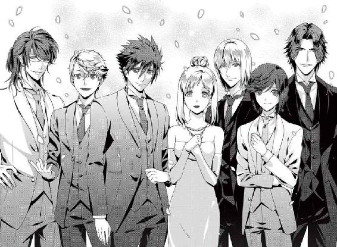

| 小説 恋花デイズ -Summer blue party- | |
| 水澤なな | |
| (2013) | |
序章 真夏のミッション
夏休みがすぐそこまで近づいたある日、昼休みの鈴ノ森学園に謎の校内放送が流れた。
「お呼び出しを申し上げます。三年の百合澤英士さん、早乙女椿さん、二年の蘭木司さん、日向陽太さん、美咲花さん、一年の菫舘律人さん、高丘菊之介さん。以上七名は、至急理事長室までお越しください。繰り返します......」
突然名前を呼ばれた私──美咲花は、思わず教室の正面の壁に設置されたスピーカーを見つめた。
不思議な取り合わせの呼び出しに、教室の中がざわめきだす。
（確かに当事者じゃなければ、私だって騒いでしまいそうだ。でも、なんで私が......？）
「ちょっと、花。きみ、なんかしちゃった？ 職員室ならまだしも、理事長室に呼び出しなんてさ」
「でも、生徒会長も呼ばれてたから、そーいう呼び出しじゃないんじゃないかな。花ちゃん、なにか心当たりある？」
一緒にお弁当を食べていたまこちゃんと千尋ちゃんが、私の顔を覗き込んでくる。
呼び出されたメンバーについては、全員、顔も名前も知っている。
春に、この鈴ノ森学園に転校してきて以来、お世話になったことのある先輩や、クラスメイト、それに後輩のみんなの名前だったからだ。
だけど、一度に呼び出される心当たりなんてまったくない。
私は二人に首を横に振ってみせてから、もう一度スピーカーを見上げた。
「というわけで、そのパーティーは八月の最後の週に催す予定ですわ。そうよね、麗華さん」
「そのとおりですわ、お姉様。みなさん、いかがでしょう？ 引き受けてくださいます？」
煌びやかなドレスを纏った理事長たちは、扇子を片手に優雅な口調で呼び出しの理由を説明してくれた。
知らない人が見たら、まるでこれから夜会に出かけるような出で立ちだけど、これがこの二人のふだんの服装だったりする。
深紅のドレスを着て、キリッとした瞳をしているのが、姉で理事長の園城寺響華さん。
目の冴えるような青いドレスに、やさしい目もとが、妹で副理事長の園城寺麗華さんだ。
二人ともゴージャスな雰囲気の美女で、お会いするたびに目を奪われてしまう。
「あらあら、どうかなさったの、美咲花さん？」
「もしかして、ご都合がよろしくないのかしら？」
私はハッと我に返った。
「あ、いいえ！ 突然のお話だったので、驚いてしまっただけです」
「そう。それならよかったですわ。ねえ、麗華さん？」
「ええ、お姉様。それでみなさん、いかがかしら？ お引き受けいただけます？」
（......え？ 引き受けるって、一体なにを!?）
私は慌てて、今聞いた話を頭の中で要約した。
来月、八月の終わりに、鈴ノ森学園主催の大がかりなパーティーが催される。
シティホテルのホールを使った盛大なもので、今年から恒例行事になるその第一回目の大事なパーティーなのだそうだ。
来賓は、鈴ノ森学園の卒業生。その中には、バイオ研究の第一人者や、華道家、フラワーアーティスト、水景アーティストなど、各界で活躍している人間も多い。
理事長姉妹は、呼び出した私たち七名に、そのパーティー会場のフラワーアレンジメントによるディスプレイをやってほしい──そう言った。
（よし、整理完了！ でも、そんなすごい行事に携わるなんてことが私にできるのかな？ まだ、この学園に来て、たった四カ月だし。でも断るにしてもなんて言えば......）
「あなたはどうかしら、美咲花さん？」
いきなり名指しされ、お二人にじいっと見つめられる。
焦った私は、とっさに、すぐ横にいた蘭木司くんを仰ぎ見た。
「あの！ 蘭木くんはどう思う!?」
蘭木司くんは、同じクラスの男の子だ。
育成の難しい胡蝶蘭のお世話が抜群に上手で、見た目もいいことから学園内では『蘭の王子様』なんて呼ばれてたりする。
でも、私は知ってる。蘭木くんが胡蝶蘭を得意としてるのは、それが高価なお花だからだ。ちょっと──というかかなりお金にうるさいところがあって、すぐに対価を請求されたりするので、少し怖い。前に、ちょっと顔を見ただけで拝顔料を取られそうになったこともあるし......。
「なに、見てんだよ。金とるぞ」
（えええー、出会いのときの悪夢、再び!?）
こういうところが、正直苦手だ。でも、意見を聞かなきゃ。
「......蘭木くんは、どう思うの？ 理事長先生のお話」
蘭木くんは、一瞬難しい顔をして考えこんだあと、直截な言葉を言い放った。
「その話って、バイト代とか出るんですか？」
蘭木くんを除く八名が一瞬言葉に詰まった。理事長室を静寂が包み込む。
その静寂を破ったのは、隣のクラスの日向陽太くんだった。
「あはははは！ 司、お前ってやっぱすげーな！ 理事長たちにそーいうこと平気で言っちゃうんだもんなー。な、理事長！」
（いやいや、すごいのは、日向くんもだよ！ 理事長にタメ口きくのって、私の知る限りでは、日向くんだけのような気がする。校長先生だって丁寧語使ってるよ？）
お日様の光を集めたような髪をした日向くんは、人見知りや引っ込み思案という言葉とは対局にいるような男の子だ。
初めて会った時からあたりまえみたいに私を下の名前で呼ぶし、数量限定の大好物のオムソバパンを譲ってくれたり......なんだか十年来の友達みたいだ。
「うふふ。そうですわね。確かに、準備には一カ月ほどかかりますから、ノーギャラというわけにはまいりませんわね、麗華さん」
「ええ、お姉様。その点は抜かりなどございません。報酬はこの、カフェテリアのチケットでいかがでしょう？ 一年間召し上がり放題のフリーパスですわ」
麗華さんは、カードサイズのチケットを扇子のようにきれいに開いてみせた。
「......まあ、そういうことなら」
当然の権利だと言わんばかりに、蘭木くんは頷いた。
（蘭木くんの守銭奴ぶりって、徹底してるんだな......）
「蘭木くんは了承してくださったようね。では、日向くんはいかがかしら？」
「オレ？ オレなら別にやってやってもいいぜ。夏休みっつっても、特に予定とかねーし。......あ！ けど、ケムリンジャーのショーがある日はパスな！」
『華炎戦隊ケムリンジャー』というのは、日向くんの大好きな戦隊モノのテレビ番組で、日向くんは番組チェックはもちろん、出張イベントの類も欠かさないのだ。
「まあ、うれしい。では、日向くんもＯＫしてくださるのね」
「おう！ まかしとけって！」
「ふふ。ありがとう、日向くん」
響華さんは、今度は百合澤先輩に視線を向けた。
「百合澤くんはいかが？」
百合澤先輩はかすかに首を傾げたあと、『白百合の君』の名にふさわしい優雅さでふわりとした笑みを浮かべた。
「学園主催のパーティーということでしたら、生徒会として、こちらからお手伝いを買って出たいくらいですよ、理事長先生」
「まあ、素敵なお返事をありがとう、百合澤くん。でも『生徒会として』ということは、副会長の早乙女くんもということでいいのかしら？」
みんなの視線が、早乙女先輩に集まる。
早乙女先輩は、デフォルト状態の表情で口をへの字に曲げていたけど、それでもコックリと頷く。
「生徒会の方針がそうだっていうんなら、やりますよ。......まあ、アレンジの勉強にもなるだろうし」
ちょっと前までは、俺様だし、ぶっきらぼうだし、すぐに怒る怖い人だーとか思ってたけど、最近は少しだけ、そうじゃないんだってわかってきた気がする。
早乙女先輩は、自分にも周りにも真剣に接しているんじゃないかと思う。いつも本気だから言い方がキツく聞こえたり、言うことが図星だから厳しく聞こえるのかもしれない。
「うふふ。感謝しますわ、早乙女くん」
「......ふん」
「あの......！」
小さく手を挙げたのは、菫舘くんだった。
「あら、なにかしら？ 菫舘くんもＯＫしてくださるの？」
菫舘くんは大きな瞳を見開いて、響華さんをじっと見つめる。
「あ、いえ！ ええと、その......そういった行事に関わるのは、ボクにはちょっと......」
菫舘くんはどうやらパスするつもりみたいだ。そう思ったのに。
「まあ、やっぱり参加してくださるのね」
（......え？ どうしてそういう結論に？）
「そう言ってくださると思ってましたわ。よかったですわね、麗華さん」
「ええ、お姉様！ ありがとう、菫舘くん！ 私たち、とてもとても期待していますわ！」
（麗華さん、フォロー素早すぎ......！）
「えっと、あのですね......ボクはやるとは言って......」
菫舘くんの大きな瞳が、心なしか潤みはじめる。
（うん、わかるよ、菫舘くん。無理もないよ......あの迫力でせまられたら......）
「音楽を使っての育成！ その研究に、菫舘くんはかかせませんものね！」
「そうですわ！ 素敵なお花を育てていただかなくては！ 音楽の力で！」
その言葉で、菫舘くんの表情がガラリと変わった。
「え？ あの音楽でって？ そういう計画があるんですか？」
「うふふふふ。もちろんですわ！ 今回は育成のために特別な真空管のアンプを用意しましたの。ね、麗華さん」
「ええ。建物自体と設置場所の音響にこだわって造っていただいたから、菫舘くんも納得してくださると思いますわ」
「わかりました！ そういうことなら、ぜひやらせていただきます！」
（まさかの即決......！）
でも、『音楽の力を世に知らしめるために、音楽と植物の関係性を研究する』という目的意識を持ってこの学園に入学した菫舘くんにとっては、当然の選択なのかもしれない。
（えっと、残るは......？）
響華さんは口元で手の平をパンっと合わせて、高丘くんに笑いかける。
「高丘くんは、いかがかしら？」
「俺？ 俺なら、センパイ次第かな。センパイがやるならやるし、やらないんならやらないし。ね、センパイ？」
高丘くんがツカツカと歩み寄ってきて、私の肩にもたれかかる。
「......え。私!? なんで!?」
慌てて数歩後ずさると、今度は肩を抱かれてしまった。
「なんでって、そんなのセンパイと一緒にいたいからに決まってるでしょ。長ーい夏休みにセンパイと同じ選択しなきゃ、つまんないじゃん」
ついでに耳元で囁かれる。
学園のお姉様方から『キクちゃん』の愛称でかわいがられている高丘くんは、尋常でなくスキンシップの度合いが高い。
（すぐにくっついてきたり、今みたいに顔を近づけてきたり......）
高丘くんにとっては普通のことなのかもしれないけど、あんまりそういうのに慣れてない私は、そのたびにちょっと挙動不審な対応をしてしまう。
「......ダッ、ダメだよ、そんな決め方じゃ！ もっと主体性を持って考えないと！」
高丘くんの腕から逃れながらそう返すと、彼は悪びれない笑顔を見せた。
「ムキになっちゃって、やっぱセンパイってカーワイーの。あとね、主体性ならちゃんとあるから平気だよ。センパイ最優先、それが俺の基本理念だから」
「............高丘くん、あのね......」
思わず言葉を詰まらせていると、横から助け船が入った。
「高丘。バカか、お前は！ 真顔で戯れ言、口にしてんじゃねー！」
「戯れ言じゃないですよ。早乙女先輩と違って、俺は素直な感情をきちんと口にできるタイプなんで」
「要は脳内妄想垂れ流しの、自制心ゼロってだけじゃねぇか」
（もう慣れてきたけど、高丘くんと早乙女先輩が顔を突き合わすと、どうしてこうなっちゃうんだろう？ こういうのを犬猿の仲っていうんだよね？）
「まあまあ、椿もムキにならないで。高丘くん、ごめんね」
「別にいいっすよ、英士先輩。慣れてますんで」
「高丘、いい加減その口閉じろ」
「椿。ほら、こっちにきて。理事長先生と副理事長先生の前だよ」
「......ふん！」
（さすが、百合澤先輩！）
以前、ちょっと怖い人たちに絡まれたのを助けてもらったことがある。その時も、百合澤先輩はいつもの穏やかな態度のままで、その人たちを退散させてくれた。
（やっぱり、なるべくして生徒会長の職に就いてるんだな......）
思わず見とれていたら、百合澤先輩と目が合った。
ニコッと微笑みかけられ、思わず頬が熱くなる。
「ちょっと、英士先輩。俺のセンパイに色目使わないでもらいたいんすけど」
突然、高丘くんの背中で視界を遮られる。
「ああ、それは悪かったね。でもきみのモノっていうくだりはどうなんだろう？」
「あとは時間の問題なんで」
（......え？ 誰が、誰の？）
その背中が突然振り返った。
「センパイ。どうするの？ そのパーティーのディスプレイ、やるの？ やらないの？」
「お返事を聞かせてくださいます、花さん？」
気づけば、部屋にいる全員の視線が、私に向けられていた。
残るはもう私だけ。ほかは全員、引き受けると答えている。
（......そんなに大きなイベントに、私がかかわってもいいのかな？ ちゃんとできるのかな？ 失敗したりは......）
頭の中を、いろんな不安がよぎる。
（そもそも、どうして私がこのメンバーに選ばれたんだろう？）
百合澤先輩や早乙女先輩は人望的にも技術的にも当然として、ほかのみんなもそれぞれ得意分野を持っているから、選ばれるのも頷ける。
（あ。お花をよく枯らしちゃう日向くんは、私とどっこいかもしれないけど！）
「......あの、響華さん、麗華さん。どうして私がメンバーに選ばれたんでしょうか？ 先月のスイセンのコンテストでも、そんなに上手には咲かせられなかったのに」
響華さんと麗華さんは、笑顔で頷き合ってから私を見た。
「そうですわね。優勝ではありませんでしたけど、でも花さんのお花が、愛情をかけて育てられたことはわかりましたわ」
「花さん。あなたが今現在完璧である必要はありませんの。それを言うなら、学園に通っている誰もが、まだ完璧ではありませんもの。そうですわよね、お姉様」
「ええ。そのためにこの学園があるのですわ。今回のパーティーでは、既存のものではない試みを見せていただきたいの。お花はめずらしくて美しいものを。アレンジメントは豪華で斬新に」
「そのためにみなさんには、研究科、育成科、アレンジ科からそれぞれ集まっていただいたの。あなた方には、チームとして一致団結し、ことに当たっていただきたいのですわ。 それで、いかがかしら、花さん。お引き受けいただけるかしら？」
不安はたくさんある。でも──。
私がこの学園にきたのは、お花が好きだからだ。
植物のことをもっとたくさん知りたくて、この学園に入った。
そのお花にかかわる新しい試みがあるというのなら、私は......。
「ぜひ、やらせてください。私、全力でがんばります！」
私はそう答えて、ペコリと頭を下げた。
「こちらが、その準備のための特別温室ですわ」
全員が建物を見上げ、感嘆の声をあげる。
響華さんと麗華さんに案内された先には、ガラス張りの豪奢な温室があった。
円柱形の立派な建物で、扉やあちこちにステンドグラスの美しい細工が施されている。
まるで、イギリスの貴族のお屋敷にでも迷い込んだような気分になる。
この素敵な温室があるのは、鈴ノ森学園の敷地内だ。
育成科の共同花壇の裏手の、木々に遮られた場所。そこに温室は建っていた。
「これを造っていたんですね」
百合澤先輩の言葉に、響華さんが微笑む。
「まあ。バレてしまっていたのね」
「はい。ここのところ、業者が出入りしていましたし、建材の搬入も目立ちましたから」
「あら、残念ですわ。驚かせてさしあげようと思ってましたのに」
「いえ。十分、驚きました。こんな立派なものを造っているとは夢にも思いませんでしたから」
「ふふ。それならよかったですわ。では、中を案内しますわ。麗華さん、お願いするわ」
「はい、お姉様。では、ポチッと......」
麗華さんが入口脇に設置されたパネルを操作すると、ステンドグラスで装飾された入口が自動で開いた。
「うわ！ なんか秘密基地みてーだな！」
目をキラキラとさせる日向くんを見て、響華さんが微笑む。
「まあ。そう言っていただけるとうれしいわ。この温室のコンセプトは、秘密基地ですの。アンティークな外見とは裏腹に、中のシステムには最新の技術を使っておりますのよ」
「すっげー！ なー、あとはなにがあるんだ？ 見せてくれよ！」
（日向くん、フレンドリーが過ぎてるよ！）
そっと目配せをしてみたけど......。
「なんだ、花。お前も見たいのか？ そんな後ろの方にいないでこっちこいよ、ほら」
有無を言わさずに腕を取られ、温室内に引っ張っていかれる。
「うわー！ すっげー！ 中もなんかハイテクじゃん！ ロボットとか隠してねーのか？」
外から見るのと同様、中もとてもきれいだった。六角形のガラスの壁と、円錐形のガラス天井から光が降り注いで、あたりをキラキラと照らし出している。
ただ、できたての状態だけあって、温室内にはまだ植物はひとつもない。
がらんどうという言葉が頭を過ぎった。
（この中が植物でいっぱいになったら、どんなに素敵だろう......）
そう考えるだけでワクワクした。
「ロボットはさすがにありませんけど、全自動の水性栽培機や、散水機がありますわ。それに天井もボタンひとつで開閉できますのよ。そうですわよね、麗華さん？」
「はい、お姉様。ああ、そうですわ。菫舘くん、こちらにいらして。ほら、こちらが真空管アンプですわ。この温室中に音がいきわたりますの。こちらが、取り扱い説明書ですわ」
「ありがとうございます！ うわあ、すごい！ 全段直結シングルのパワーアンプだ！ これ、すごく高いものじゃないですか！」
「最高のお花を咲かせるためのものですもの。もちろん、すべて最高のものを揃えましたわ。お気に召しまして？」
「はい！ もちろんです！」
その後も、温室内をあれこれと案内してもらった。
最初に聞いたとおり、温室内にはいろいろな最新技術が使われていた。
（こんなにたくさん......私に操作できるのかな？）
早速不安になってしまう私と違って、日向くんも菫舘くんも楽しそうに説明を聞いている。ふだん仏頂面が多い蘭木くんでさえ、興味津々みたいだ。なんとなく、小さい子がオモチャ売り場にいるみたいにも見える。
一通りの説明を聞き終えたところで、入口の方へ戻る。
すると、そこにはテーブルセットがあった。
衝立のように置かれた機材の陰に隠れて、入ったときには気づかなかったみたいだ。
タイルで彩られた丸テーブルが二つと、お揃いのイスが十脚。すぐ脇にはカウンター式のワゴンが置かれている。
「はいはーい、お疲れさまー！」
「美味しいお茶はいかがですかー？」
カウンターの陰から現れたのは──。
「え？ 千尋ちゃん、まこちゃん、どうしてここに......？」
千尋ちゃんはペロリと舌を出した。隣でまこちゃんも肩をすくめる。
「えへへっ。実はねー、さっき花ちゃんがなんで呼ばれたか知ってたんだー」
「ごめん、アタシも。昨日、千彰先生からここのこと聞いてて」
（ちいちゃんが......？）
ちいちゃんというのは、鈴宮千彰先生──育成科の先生で、千尋ちゃんのお兄さんのことだ。
ちいちゃんと千尋ちゃんと私は、幼なじみだったりする。
千尋ちゃんは今も昔も変わらなくかわいいけど、ちいちゃんは少し──というかすごく大人になっちゃって、ちょっとだけ遠くなってしまった感じがする。
でも、物事にアバウトな感じとか、笑った顔は昔のままだけど。
「どうして、ちいちゃ......あ、ううん、鈴宮先生が関係あるの？」
「それはね、俺が今回の特別顧問をするからだよーん☆」
低い声に似つかわしくない、ふざけた口調に振り向くと、そこに立っていたのはちいちゃんだった。
「今回のパーティー準備では、ホテル会場に泊まり込んでの準備などもありますから、アドバイザー兼引率を鈴宮先生にお願いしましたの」
そう聞いて私は思わずホッとしてしまう。
ちゃんとできるのか不安だけど、ちいちゃんに相談もできるなら心強い。
「というわけで、よろしく、お前ら」
みんながそれぞれに頭を下げる。
「あ、ぼくとまこちゃんは、かわいいかわいいウエイトレスとして、この温室内ティースペースでお茶を入れたりしつつ、手伝ってあげるね」
「力仕事とかも、バンバン手伝うよ～」
「えー。まこちゃん、いい人すぎ！ ぼくは重いのはイヤだな。だいたい、まこちゃんとぼくは癒し担当なんだから、そんなに張り切らなくていいんだってば」
「なに言ってんだ、千尋。癒しって、お前はおと......うぐぐっ！」
（なに？ 今の、風を斬るような鋭い音は!?）
「うふふふふー。なにか言ったかなー、陽太？」
（千尋ちゃん、なぜ握り拳を作ってるわけ？）
「......あ、いや、なんでも......ないです」
「よろしい！ というわけで。美味しいお茶はぼくたちに任せてね～」
微笑んで話を聞いていた響華さんが、ふいに口を開いた。
「ああ、ひとつお伝えし忘れていましたわ。麗華さん、説明をお願いできるかしら？」
「はい、お姉様。今回のパーティーは、本番は初日の夕方からですが、翌日には、我が校のみなさんや、一般のみなさまにも見学していただけるように時間を取ってあります」
「一人でも多くの方々に、みなさんの作品を楽しんでいただきたいので、そういうスケジュールにしましたの」
「片付けは午後四時からです。搬入から撤去まで合計三日の長丁場になりますけど、みなさん、がんばってくださいね」
「私も麗華さんも、とても楽しみにしておりますわ」
そんなふうにして私たちは、そのパーティーのディスプレイにかかわることになった。
１章 常夏のパラダイス
翌日。百合澤先輩の号令で、私たちは特別温室に集まった。
今回集まったのは、会場設置メンバーの七人。百合澤先輩と早乙女先輩、蘭木くんと日向くん、高丘くんに菫舘くん、それに私だ。
ちいちゃんは不参加。『俺はなんかあったときの堤防みたいなもんだから、いーの。じゃ、あとは若い者同士、仲良くねー』とのことだった。
まこちゃんと千尋ちゃんは、今日は用事があるので欠席らしい。
（女子ひとりだけだと、なんか心もとないよね......）
みんなやさしい人たちばっかりだってことはわかってるけど、やっぱりまこちゃんや千尋ちゃんが一緒にいてくれると心強いと思ってしまう。
（でも、初日から甘えたこと言ってちゃ、ダメだよね。うん！）
今日は、パーティー会場のイメージを固め、それに沿った植物を想定し、なにをどれだけ用意しなければならないかを決めるのだそうだ。
響華さんたちから預かった予算もあるから、際限なくに豪華にするわけにもいかない。
「これを見てくれるかな。思ったよりずっと広い会場みたいだね。なんとなく三百人クラスを想定していたんだけど、これは、五百人は入れそうだね」
百合澤先輩は、くっつけた二つの丸テーブルの上に、パーティー会場の見取り図を広げる。
「そこ、立食だと千人は入れるみてーだな。前に付き合いで顔を出したとき、そのくらいの規模だった」
早乙女先輩のおうちがお金持ちなのは聞いていたけど、あらためてこういう話を聞くと、本当に別世界の人のように感じる。
「わー、さっすがセレブリティ～い！」
茶々を入れた高丘くんを、早乙女先輩はちょっと怖い形相で睨みつけた。
「わーこわーい。センパーイ、早乙女先輩がいじめるよー。助けてー！」
高丘くんは棒読みでそう言いながら、私の横にイスを引っ張ってきた。
「菊之介、お前、強引に割り込んでくんなよ！」
「まーまー陽太先輩、カワイー後輩には席を譲るのが先輩の務めってもんでしょ」
「なに勝手なこと言ってやがる！ これだから一人っ子は......」
「なに言ってるんですか。陽太先輩だって一人っ子でしょうが」
「うるせー！ お前と一緒にすんな！」
初日からこんなで、本当にパーティー会場のディスプレイなんてできるのかな？ なんだか先が思いやられる。
（とにかく、止めなきゃ！）
「あの、ふたりとも......」
おそるおそる言いかけた言葉を、鋭く遮られる。声の主は菫舘くんだ。
「いい加減にしてください！ 高丘が失礼なのはわかってますけど、同じレベルで相手をする日向先輩もどうかと思います！」
菫舘くんはどちらかというと小柄だし、きれいな声をしているからソフトな印象に見られがちだけど、こういうふうに怒ったときには凜として迫力がある。
その証拠に、日向先輩と高丘くんがピタリと言い争いをやめた。
百合澤先輩が、菫舘くんに笑顔で声をかける。
「ありがとう、律人くん。これからはきみに進行役をお願いするといいかもしれないね」
「いいえ、ボクなんか！ 余計なことをしてしまってすみません、英士先輩！」
「ううん。初日から揉めていてはなにも決められないからね。本当に助かったよ。じゃあ、先に進めようか。まず、今回のパーティーについてだけど、実際の名称は『鈴ノ森学園・卒業生のための花に囲まれた懇親会』という正式名称があるそうなんだ」
（......その名称はいかがなものだろう。響華さんと麗華さんが決めたのかな？）
「校長先生がお決めになったそうなんだけど、ちょっと長くて覚えにくいから、ここではサマーパーティーと呼ぶことにしようと思うんだけど、どうかな？ でも、ほかにいい名称があればなんでもいいよ」
（校長先生が......。そっか、なんとなく納得）
「いいんじゃねぇか、意思統一ができて呼びやすきゃ、そんで」
「椿はそう言ってくれてるけど、それでいいかな？」
テーブルを囲む全員が頷く。
「では、名称は『サマーパーティー』にします。次に全体のイメージを決めようと思うんだ」
菫舘くんが小さく手を挙げた。
学年は違うけど、同じ研究科同士だから話しやすいのかな。
「英士先輩。イメージって、どういうことですか？」
「ああ。テーマと言った方がいいのかな？ とにかく、見る人が一目でわかるくらいに、シンプルな総合イメージをまとめたいんだ。クリスマスやお正月、ハロウィンなんかはわかりやすいだろう？」
「はい、確かに」
「クリスマスなら赤と白と緑。お正月は赤と白と金。ハロウィンはオレンジと黒。そんなふうにイメージカラーというものがあるから、訴求しやすいんだ。もっともそれだと王道すぎるから、逆に、ツリーを青にしたりするディスプレイなんかもあるけどね」
「そういうことを考えないといけないんですね」
「うん。でもこういうことは、研究科の僕たちよりも、アレンジ科の椿や、高丘くんの方が体系立てて習っているから詳しいと思うよ。ね、椿？」
早乙女先輩は一瞬高丘くんに目をやってから、フイッと逸らした。
「まあ、俺はな。どこぞの不真面目な一年と違って、二年以上真剣に授業を受けてるから当然だ」
「そう来ますか。今どき年功序列なんて流行らないと思いますよ。こういうのはセンスの問題が大きいし。でもまあ、年齢くらいしか勝ち目がないっていうなら仕方ないですけど」
「......なんだと？」
「だから、先輩風ふかして文句言うのは感じ悪いって言ったんですよ。耳悪いんですか？ 悪いのは目つきだけにしといてほしいですね」
（高丘くん......どこまで煽る気......？ ああ、早乙女先輩の形相がますます......！）
「いい加減にしてもらえませんか。時は金なりって言葉知ってます？ 暇を持てあましてるみなさんとは違って、俺には無駄な時間なんかないんです。さっさと決めること決めて、作業に取りかかりたいんですけど」
ずっと押し黙っていた蘭木くんが、苛立ちを隠そうともしないでそう言った。
より険悪なムードになりかけたけど、百合澤先輩が一瞬でその空気を和らげてくれる。
「確かに、ダラダラとした話し合いはよくないね。とりあえず、時間を区切って仕切り直そうか。今、四時二〇分だから、五時までに大枠だけでも決めてみよう」
百合澤先輩の言葉に全員が頷く。
（やっぱり、こういうふうにまとめるのが上手だな、百合澤先輩）
「じゃあ、なにか案のある人はいる？ なんでもいいよ。ブレーンストーミングだと思って、どんどん挙げてみてくれるかな。椿、書記を頼める？」
「ああ、わかった」
早乙女先輩が、持参したノートを広げる。
（みんな手ぶらなのに、早乙女先輩って意外とマメなんだ......）
早乙女先輩は、開いたノートに日付を書き込んだ。けれど、誰もなにも言わないので、そのままペン先でノートをコツコツと叩きはじめる。
見るからにイライラしているようだ。
「おい、誰か、なんかねーのかよ！」
（ああ、やっぱり怒鳴りだした！）
「椿。そんなにカリカリしたら、出る意見も出なくなっちゃうよ」
「この程度で出なくなるなら、もともとその程度だろ」
「そういうことを言わない。でもまずは、言い出しっぺの僕からなにか言わないとね。そうだな......色で統一する、花の種類で統一する、それから国や国内の地域で統一する──まずは、そんな分け方もあるかな。僕が見たことのあるのは、密林のイメージのものと、フランスの社交界をイメージしたものかな」
「密林と社交界かぁ......それ、素敵そうですね」
思わず口に出してしまうと、百合澤先輩はやさしく微笑んでくれた。
「密林の方は、ガジュマルの樹を大量に持ち込んだ大がかりなものだったよ。会場内に川のようなものまで造ってあったし。フランスの社交界の方は、花よりもアンティーク家具や絵画が主役だったかな。でもどっちもきれいだったよ」
「なるほど。そういう感じで考えればいいんですね。......なんだろう？ 音楽に関わるものとかがあればいいんですけど......歌とか......あ、そうだ！ 童話とか、昔話のイメージとかどうですか？」
「へえ。それはいい切り口だね。アンデルセンやグリムは広く知られているからイメージを表現しやすいかもしれない」
百合澤先輩が頷くと、菫舘くんはうれしそうな顔になった。
「けど、それじゃ漠然としてねーか？ 『赤ずきん』だと森で、『三匹のこぶた』だと、家とかのイメージしかねーぞ」
「早乙女先輩は文句ばっかり言ってないで、自分の意見を言ったらいいと思いますけど？」
「ちゃちゃを入れるだけで、なんの具体案も出せない人間よりはマシだ」
険悪なムードの中、日向くんが和む一言を投げ入れてくれた。
「オレ、難しいこと考えんの苦手なんだよなー。もっと簡単なんじゃダメなのか？ 会場中をヒマワリで埋め尽くすとか」
いかにも日向くんらしい意見だ。
ついつい、ヒマワリ畑を走り回っている日向くんの姿を想像してしまった。
でも、隣にいた蘭木くんが一刀両断で、その意見を斬り捨てる。
「この会場を埋め尽くすヒマワリなんて、どうやって育てるつもりだよ。大体、あんなにアレンジメントしにくい花、わざわざ選ぶことないだろ」
「うん。陽太くんの発想はとてもいいと思うよ。でも蘭木くんの言うことも一理あるかな。それに、ヒマワリで埋め尽くすだけだと、理事長のオーダーにあった『めずらしい、豪華な』の部分がクリアしにくいからね」
「そっかー！」
「でも、その調子でどんどん意見を出してくれたらうれしいよ」
「英士先輩、俺もいい案思いついたかも！」
「なんだい、高丘くん？」
「キク科の植物縛りで、キク人形展とかどうですか？ キクはリーズナブルなのから値の張るものまで多種多様だし、豪華にもなるんじゃない？ 茎が太い分、アレンジ向きだし」
百合澤先輩は、少し困ったような顔で言葉を探しているみたいだ。
代わりに、早乙女先輩が口を開いた。
「バカか、お前は。キク人形を作るのに、どれだけの手間と時間がかかるのかを知ってて言ってんのか？」
「え？ 全然。大変なんですか？」
早乙女先輩は、大きなため息をついた。
「......お前、アレンジ科のくせして、そんなことも知らねーのか。嘆かわしいかぎりだな......ったく！」
「それは失礼しましたー！」
「......オークション会場はどうだ？」
ボソリと口を挟んだのは、蘭木くんだ。横にいた日向くんがすかさず尋ねる。
「オークション会場ってなんだよ、司？」
「だから、文字どおりだよ。コチョウランを鉢ごと並べて、来賓に競り落としてもらえば一石二鳥......いて！」
丸めたノートで蘭木くんの頭をポカリと叩いたのは、早乙女先輩だ。
「バカか！ 俺らは、パーティーの演目を考えてんじゃなくて、会場の飾りつけを考えてんだよ！ ったく、この金の亡者が！」
「......悪かったですね。どこかの御曹司と違って、金が必要なもんで」
（うわあああ......。なんか、どんどん空気が険悪になっているような？ 人って、時間が経つにつれて仲良くなるものだと思ってたのに違うんだ......）
私は思わず、天を仰ぎ見た。
ガラスの天井の向こうには、真っ青な空がどこまでも広がっている。
「あ............」
「なんだ、美咲？ バカみてーに口を開けてないで、なにか思いついたんなら言ってみろ」
（......早乙女先輩、ひどい......）
「あ、はい！ 空を見てて思ったんですけど、青を基調にした青空と海のイメージなんてどうですか？ コードネームの『サマーパーティー』にもピッタリだし、すごく涼しげになるんじゃないかと思うんです」
百合澤先輩が、ふわりと微笑んでくれた。
「それはいいかもしれないね。ブルー系の花はそんなに種類が多いわけじゃないから、選定が難しいけど、青一色は圧巻かもしれないね。それにヒマラヤのメコノプシスなんかを取り入れれば、それで『めずらしい花』という部分をクリアできる」
「まあ、そうだな。青いバラは無理だが、この際割り切って、スプレーやプリザードフラワーなんかの手法も取り入れれば、『豪華さ』もクリアできるな。......おい、ブルー系の花を挙げてみろ、一年坊ども」
早乙女先輩の言葉に、高丘くんがすぐに答えた。
「代表的なのは、トルコキキョウ、ミントブルー、ブルースター、ブルーデイジー、ヤグルマギク。あとは、ブルーワンダーとか、ブルー系のパンジーとか？」
（高丘くん、あんなにスラスラとすごいな......）
早乙女先輩が、ノートにそれらを書き留めていく。
「疑問系で答えてんじゃねー。ほかには？」
今度は、菫舘くんが答える。
「ええと、アサガオとアジサイ、ハナニラにヒヤシンス、それにリンドウなんかもきれいだと思います」
（和風のお花かあ......）
「ふん。トルコキキョウ、ブルーワンダー、リンドウは青ってより紫だな。それから、アサガオは花弁が薄いし夕方には萎むからアレンジには不向きだ。会場に合わせたツタの処理も難しい。それと、アジサイは入手が難しいな。これから温室で育てても間に合わない」
（......そっか。そういうふうに、いろんな角度から考えないといけないんだ）
「二年は、なんかないのか？」
早乙女先輩が、蘭木くんと日向くんと私を見る。
（うわ！ 青がいいとは言ったはいいけど、深く考えてなかった！）
私は慌てて、脳内で青い花を検索した。
「ラン科だと、クレイシセントロン・ゴクシンギー。紫がかってていいなら、ミニコチョウランのムラサキシキブ。あとは普通に、イングリッシュ・ブルーベル、ワスレナグサ、アスターかな」
蘭木くんがたんたんと答える。
（やっぱり、ラン系にはことさら詳しいんだな）
「オレ、パス１！」
「トランプじゃねぇ！」
早乙女先輩のノートが、スパンと日向くんの頭を叩く。
「おい、お前はなんかないのか？ 言い出しっぺだろ」
（わー、きた......！）
私はそれまで以上に頭をフル回転させた。
「......ええと......あの、ブルースターとキュウリグサとムスカリ......くらいしか」
「少ねぇな」
「すみません」
「まあいい。あとは資料室でピックアップすればこと足りる。問題は......」
早乙女先輩の言葉を、百合澤先輩が引き取った。
「ボリュームと、高さ、大きさのある花が少ないことかな。アジサイが使えないのは痛いね」
確かに、今挙がった花は、小振りで地面に這うように生える種類が多い。
「紫も使えるといいんだけど、インパクトは薄れそうだよね......」
百合澤先輩と早乙女先輩は、顔を見合わせて首をひねった。
「じゃあ、白を使えばいーじゃん。青い空と青い海って言ったって、白い雲と白い波飛沫だってあるじゃん」
「......おー。日向、お前もたまにはいいこと言うじゃねーか。そうだな。四角四面に考えすぎない方がいいのかもな」
「そうだね。こういうふうにいろんな意見が出るから、チームでやるのは楽しいのかもしれないね」
百合澤先輩は満足そうに頷く。
「あ、じゃあ俺も、いいこと思いついた！」
「本当にいい案なんだろうな、高丘？」
「うっわ！ 発言の自由もないんですか？ 早乙女先輩、横暴だと思いまーす」
「......さっさと言え」
「白がＯＫなら、紫もＯＫにしたらどうかと思うんですけど」
「却下！ 二色以上は統一性が崩れる」
「最後までちゃんと聞いてからジャッジしてください。人の意見をきちんと取り入れられないで、生徒会役員が務まるんですか？」
「......いちいち......さっさと言え！」
「はーい。で、ですね、遠近法のために紫の花も使ったらどうかと思って。パーティー会場は広いでしょ？ だったら、それをパノラマ状態にして、奥行きを出すためのグラデーション効果に使えばいいんじゃないかと」
「......なるほどな。使える花の種類がグッと増えるし、いいかもしれない」
「お、司先輩、わかってるー！」
「なれなれしく触んな」
「司先輩までつれない！ センパイ、なんか俺って孤独かも。そんな俺を癒やしてくれたりしない？」
「しません。もう、高丘くんてば、まじめにやって！ せっかく今、すごいなって思ったのに」
高丘くんはメガネの奥の瞳をキラキラさせた。
「あ、なになに？ もしかして惚れ直しちゃった？」
「......どこをどうするとそういうセリフを口にできるんだ？ 理解に苦しむな」
蘭木くんが呆れたように高丘くんを見やる。
「別に思ったことを言ってるだけですよ？ むしろ、司先輩が少なすぎるんだと思うんですけど」
なにか言い返そうとしたらしい蘭木くんに変わって、菫舘くんが口を挟む。
「どう考えても高丘が多すぎるんだろ。お前は少し黙ってろ！」
「りっちゃんまで......俺、マジで孤独すぎない？」
「自業自得だろ」
「そうだな」
「オレもそう思う」
蘭木くんと菫舘くんと日向くんが、揃って頷く。
「センパイ......」
抱きついてこようとする高丘くんを、私はサラリと躱した。
「......あ、さりげなく逃げられた」
私は少し得意げに頷いてみせた。
「当たり前です。そう何度も同じ手には引っかかりません。もう、高丘くんは、本当に冗談が好きだよね」
「冗談なんかじゃないんだけどな」
「......高丘、いい加減にしないと......」
軋るような声で高丘くんを諫めるのは、菫舘くんだ。
「律人。お前、血管がぶち切れそうになってるぞ。大丈夫かよ？」
日向くんが宥めるように、菫舘くんの背中をさする。
「......すみません。部屋でも毎日こんな感じなもので、つい......」
「なんか知んねーけど、大変だな」
「ありがとうございます、日向先輩」
頷き合う菫舘くんと日向くんを見て、高丘くんが不満げに声を漏らす。
「なんか悪者扱いされた」
「扱いじゃなく、そのものじゃねーのか？」
「ほら、椿もまた話をぶり返さない。高丘くんもだよ。それじゃ、はい。また少し話が逸れてるみたいだから、戻すね。いい？」
百合澤先輩のソフトな一声で、やっと元の話し合いモードに戻った。
「日向くんもだけど、高丘くんのもいいアイデアだと思うよ。ぜひ、その方向でいこうと思うんだけど、どうかな？ 賛成の人、手を挙げてみてくれる？」
「はい！ 私、大賛成です！」
私は真っ先に手を挙げた。
周りのみんなも手を挙げて......最終的には、全員が手を挙げていた。
その後、これからのスケジュールや役割分担を決めてやっと解散することになった。
時計を見ると、六時だ。なんだかんだで、ずいぶん時間がかかってしまった。
（お昼を食べたきりだから、さすがにお腹空いちゃったな......）
そう思った瞬間。
「お待たせー、花ちゃん！ 長い会議でお腹空いたでしょー!?」
「鈴森ベーカリーから、美味しい焼きたてクロワッサンの差し入れですよ～！」
温室に飛び込んできたのは、千尋ちゃんとまこちゃんだった。
二人は、クロワッサンのたくさん入ったバスケットを抱えている。
「......うわあ、すっごくいい香り！ 鈴森ベーカリーってなに？ 近くにそういうお店でもできたの？」
バスケットを覗き込む私を見て、千尋ちゃんが人差し指を左右に振る。
「チッチッチ！ わっかんないかなー？ 鈴宮の『鈴』とまこちゃんの『森』を繋げて『鈴森』だよ！ これね、まこちゃんと二人で、調理クラブのメンバーに教えてもらって焼いてきたんだよー。今後もいろいろ差し入れしちゃうから期待しててね、花ちゃん！」
「今回の準備、結構大変そうだからさ。作業の手伝いのほかに、胃袋を満たしたりする助けもいるかなーって思ってさ。どう？ 結構美味しそうにできてるでしょ？」
「うん！ すっごく美味しそうだよ！ ありがとう、千尋ちゃん、まこちゃん！」
千尋ちゃんとまこちゃんの焼いたパンと、百合澤先輩のリクエストで早乙女先輩が入れてくれたハーブティをいただいて、準備の初日ミーティングは無事に終了した。
翌日以降も、準備作業は続いた。
大枠の会場デザインを考えて設計図に落とし込んだり、そのデザインに合わせた花の種類や数量を決定して問屋さんにオーダーをかけたり、花の種類に合わせた肥料を選んだり、アレンジメントのための資材を選んだり......私が思っていた以上にやることがたくさんあった。
授業では、学園側が準備してくれた種や苗を使うことが多いので、直接問屋さんに注文をしたり、値段交渉をしたりするのは初めてのことだ。といっても、私が注文や交渉をしたわけではなくて、百合澤先輩や早乙女先輩が電話するのを隣で見ていただけなんだけど、それでもすごく勉強になった。
「なんか、すごいなあ先輩たち。会社とかで働いてる人みたい......」
思わず呟くと、高丘くんに顔を覗き込まれてしまった。
「えー、センパイそういうのに弱いの？ わかった！ じゃあ俺もがんばるから、見ててね」
高丘くんはそう言うなり、電話を掛けようとしていた早乙女先輩から受話器を奪い取った。
「おま......！ なにしやがる！」
案の定、早乙女先輩の怒号が飛んだけど、高丘くんはさらりと無視して電話口に出る。
「あ、もしもし？ 石岡資材店さんでしょうか？ わたくし、鈴ノ森学園一年の高丘と申します。いえいえ、こちらこそいつもお世話になっております。実は注文したい商品があるのですが、今お時間よろしいですか？ ありがとうございます。では、まずはですね、品番1081の......」
高丘くんは手慣れた様子でスラスラと話しだした。二年生の私が二の足を踏んでしまうのに、まるでいつもお仕事してる人みたいに普通に注文をこなしている。
「そうなんですよ、はい。確かに不景気ですからね。景気がいいのはまだ金融関係だけみたいですし。いえいえ、そんなことないですよ。ですから、少しでも値頃で仕入れができると助かるんですよね。......そうなんです、はい。予算ギリギリなもので。......え？ 本当ですか？ ありがとうございます！」
（しかも、世間話しながら値引交渉までこなしてる......！）
感心する反面、自分の不甲斐なさを感じてしまう。
「はい、そうです。では、明日の夕方。支払いは着払いで。領収書もお願いしますね。はい、それではどうかよろしくお願いいたします。失礼します」
受話器を置いた高丘くんが、満面の笑みを浮かべて私を見る。
「すごいよ、高丘くん！ 私だったら緊張しちゃうよ」
「ありがと。センパイにそう言ってもらえるんなら、もっとがんばろうかな」
そう言う高丘くんから、早乙女先輩は受話器を奪い返した。
「バカか。一軒にそんなに時間を割いててどうする気だ。あと何軒かけなきゃいけないか、わかってねーだろ？ 効率を考えろ、効率を！ あと......」
「はいはい。負け惜しみならいくらでも聞きますよ。まあ、早乙女先輩には商売のイロハなんてわからないでしょうし」
「あ？ ケンカ売ってんのか？」
「いえ、別に。早乙女先輩が特売してたから買おうか考えただけで」
「なら、どっちが格安で仕入れられるか、勝負するか？」
「のぞむところですよ！」
（......えぇえええー！）
とはいえ。早乙女先輩と高丘くんのバトルのおかげで、アレンジの資材は予定予算よりもずっと安価に仕入れることができた。
仕入れした種や資材が届きはじめたある日。
みんなで温室で作業をしていると、少し遅れて早乙女先輩がやってきた。
「英士、いるか？」
早乙女先輩は、百合澤先輩を見つけて駆け寄った。作業のために二人ともツナギを着ているので、いつもの制服姿とは違ってなんとなくめずらしい風景だ。
「英士、企画書類ってもう提出したんだよな？」
「うん。昨日まとめて提出したよ」
「いま、鈴宮先生から聞かれたんだが、会場の図面って入れたか？」
作業をしていた百合澤先輩の動きがピタリと止まり、その手から大型スコップが滑り落ちる。
（ん？ 心なしか、顔色がよくないような......？）
百合澤先輩は、細く長いため息をついた。
「......参ったな。それだけ、見事に忘れてた」
「図面がなきゃ、ホテル側も困るだろうが。なにやってんだ」
「ごめん！ すぐに届けてくるよ。椿、あとはよろしくね」
慌ただしく温室を出て行く百合澤先輩の背中を見送る。普段はゆったりと歩いたりするイメージなので、走る姿は少し意外だ。すると、早乙女先輩に声をかけられた。
「お前、上級生の失敗を見て笑うとは、いい根性だな？」
（え？ ......私!?）
私は慌てて、全力で否定した。
「ちっ、違います！ 百合澤先輩はいっつも、なにをしても完璧だから、ちょっと人間らしいところを知ってホッとしちゃっただけです！」
「......ふん。まあ、そういうことにしておこう」
（あれ？ なんかちょっと楽しそうな笑顔だったりする......？）
ふだん『俺様全開』な早乙女先輩のめずらしい表情を見た気がして、注意されたばかりだというのに、またしても私は笑ってしまった。
そんな私を見た早乙女先輩は、眉間に皺を寄せる。
「......お前、ホントいい根性してるな？」
「あ！ 違うんです、これは......！」
「なにが、どう違う？ 端的に説明してみろ」
「ですから、えっと......」
間違っても、早乙女先輩に面と向かって『いやー、ちょっとかわいく見えたものですから』なんて、言えるハズもない。どう答えようかと口ごもっていると。
「早乙女先輩、俺の大事なセンパイにちょいちょいちょっかい出すのやめてもらえません？」
声をかけてきたのは高丘くんだ。
早乙女先輩は視線をチラリとだけ送って、腕組みをした。どうやら、相手にするつもりはないという意思表示らしい。
「ふーん。そういうつもりなら、別にいーですけど」
私の背後に回った高丘くんが、すっとすり寄ってきて私の肩を抱いた。
（不覚！ 今日もそうくるとは！ よけきれなかった！）
「ちょ......高丘くん!?」
慌てて離れようとしたけど、結構強い力なので簡単には抜け出せない。
「おい、『誰の』かは知らねーが、本人、すごい嫌がってるぞ？」
早乙女先輩の言葉に、私はコクコクと頷いた。
（あ、いや！ すごくイヤってわけじゃないけど、こういう接近は困るというかなんというか......！）
「なになに？ センパイ、照れてるの？ しょーがないなー。じゃあ、今日はここまでね」
高丘くんがやっと腕の力を抜いてくれたので、私は慌てて距離を取る。
そこで勢いよく『スパーン！』という小気味よい音が響いた。
「誰が『照れて』て、何が『今日はここまで』なのか、ぼくに教えてくれるかなー、菊ちゃん？」
どうやら、千尋ちゃんが園芸グローブで高丘くんの頭をはたいたらしい。
高丘くんは、苦笑いしながら乱れた髪を直している。
「もー。痛いって、千尋先輩」
「うるさい。ぼくの花ちゃんに汚い手でベタベタ触るからだよ。ホント、油断も隙もないんだから！」
「千尋先輩のじゃなくて、俺のだよ？」
「まだ、言うか！」
園芸グローブを振りかざす千尋ちゃんに対し、高丘くんがわざと大げさな防御体勢をとる。
「ちょ、千尋先輩に本気出されたらシャレにならないんですけど！」
「ふふーん。わかってるじゃない。じゃあ、花ちゃんに手を出すとどうなるかも、もちろんわかってるんだよね？」
「千尋先輩、目がマジなんですけど」
「だからそう言ってるでしょ」
「......お前ら、勝手に人の存在を無視してんじゃねー！」
そこに早乙女先輩も加わり、ますますカオスな状態になっていく。
「なんかさ。きみも苦労するよね。ま、がんばんなよね！」
心底同情するような眼差しで、まこちゃんは私の背中をポンポンと叩いてくれた。
（......こんなんで、ちゃんとパーティーーにこぎ着けるのかな？）
がんばろうと思うのとは裏腹に、ちょっとだけ不安な気持ちが押し寄せてくる気がした。
２章 盛夏のトラブル
それでも二週間目には、すべてが順調に進んでいた。
（私の不安なんて杞憂だったんだ。よかった......）
私は温室内を見回した。種で蒔いたものはまだ芽が出たばかりのものが多いけど、苗木で購入したものはこの数日でかなり大きく育った。
最初、殺風景だった温室内も、ずいぶんそれらしく変わったと思う。
私はガラス越しの太陽を見上げながら、首にかけたタオルで汗を拭った。
（やっぱり夏の光の力ってすごいな......）
私は水やりと土の様子のチェックを任されている。とはいっても、温室内の水耕栽培プランターは全自動での水入れ替えだし、土用の散水機も同じように細かい区画ごとに散水指示することができるので、私自身が肉体労働をする必要はない。全部、操作用のノートＰＣに指示を打ち込むだけだ。
操作自体は簡単だけど、機械にそんなに強くない私にとっては、難しいこともある。
もう何日かやっているのに未だに苦手なのが、水やりの予定入力だ。
植物の種類や育成状態に合わせて、区画ごとに指定しなくちゃいけない。だけど、ここはかなり大きな温室なので、区画自体が多いし、今回は花の種類も多い。
なんだか難しい数学パズルをやっているみたいな気分になる。
（私、テレビの録画予約だって、たまにまちがえちゃうしな......）
「ええと......Ａブロックの十六番は八時間おきに二リットル。十七番は八時間おきに三リットル。それから......あれ？ なんかひとつズレちゃってる？」
全部で百区画ほどあるので、どこからズレてしまったのかの摺り合わせをするだけで、時間がかかってしまいそうだ。
（なんでこんなハイテクなことしなくちゃいけないんだろう？ 予定表を見ながら自分で直接水を撒いた方がずっと簡単だし、気が楽だよ......）
それに、機械任せにしていることで、植物を育てている実感がどうも湧きにくい。
（これじゃ、私の花壇だっていうふうに思えないかも）
私はキーボードを見つめたまま、大きなため息をついた。
「......大丈夫ですか？」
隣で、音響用の方のＰＣをいじっていた菫舘くんに声をかけられた。
私と違って菫舘くんは、あっという間に操作手順を覚え、使いこなしている。
今、温室内にかかっているクラシックは菫舘くんの選曲だ。それ以外にも、時間帯によってかける曲や音量を変えたりするプログラムまでこなしている。
もともと機械はそんなに得意じゃないけど、研究科でいろいろな機械を使うことが多かったから、入学してから頑張って覚えたんだそうだ。
私が転入してきてからとそんなに変わらない日数なのに、それってすごいことだと思う。
「あ、うん。平気、だと思う」
「......その微妙な返答を聞く限り、とても大丈夫なようには思えないのですが？」
（......う。鋭い！）
「ありがとう、菫舘くん。でも大丈夫だよ。これは私の仕事なんだから、私がちゃんとやらないとね！」
「あなたの仕事をあなたがやるのは当然のことです。ただ、今は不本意ながらチームで活動をしていますので、あなたのミスはボクのミスにもなりかねません。ボクはそれを心配しているんです。わかりますか？」
（うう。そんなにズケズケ言わなくたって......）
でも、菫舘くんの言っていることは正論だ。
「うん。心配かけてごめんね。マニュアルを見ながらやってるから、大丈夫だよ」
「......そうですか」
「菫舘くんはもう終わったんでしょ？ じゃあ先に上がって平気だよ。私ももうちょっとで終わるから」
心配そうにこっちを見ている菫舘くんに、私は無理やりつくった笑顔を見せた。
「大丈夫、大丈夫！」
「......そうですか？ でも、なにかあったら言ってくださいね」
「うん。その時はお願いするね」
そう伝えると、菫舘くんは一礼して出口の方に歩いていった。
私はその後ろ姿を見送ってから、紙の散水計画とＰＣモニターを見つめる。
（早く終わらせて、シャワー浴びたいな。なんかお腹も空いてきたし......）
晩ご飯のことを考えたら、一気にやる気が上がった。
「よし！ がんばるぞ！」
自分に言い聞かせるように声に出して、散水予定のチェックに取りかかった。
翌日。授業が終わったので、ツナギに着替えるなり温室に向かった。
園内には鈴ノ森学園のシンボルの大花壇のほかにも、生徒それぞれの担当花壇、育成科の共同花壇などがあり、どこもかしこも花で溢れかえっている。特に、個人の花壇は、それぞれの生徒の研究テーマや、育成シミュレーションによって植えられているものが違うので個性に富んでいる。
今、春から夏にかけては、植物が一番よく育つので、どの花壇も色とりどりにきれいな花を咲かせている。それぞれの花の、いい香りも漂ってくる。花に群がって飛ぶモンシロチョウやアゲハチョウ、ミツバチや、それより大きくて怖いクマンバチなど、いろんなものを目にしながら温室への道を辿る。
（本当に、おじいちゃんから聞いてたとおりだな......）
小さな頃から、この学園の話を聞いてきた。
どんなところなんだろうと、ずっと想像していたけど、この学園は私が想像していた以上に素敵なところだ。文字どおり、花に囲まれた生活ができる。
共同花壇を抜けると、やっと前方に目指す温室が見えてきた。
（さて、今日もがんばろうっと！）
と、思いかけた矢先、慌てるような声が聞こえてきた。
（この声は......日向くん？ それに、菫舘くん？）
どうやら怒鳴っているみたいだ。
（まさか、ケンカ!? あの二人が？ 止めなきゃ......！）
私は温室の中に飛び込んだ。
「............え。なにこれ......!?」
目の前の事態が理解できなかった。ううん、理解したくなかった。
温室中に張り巡らされている散水機のすべてから、水が降り注いでいる。それも、ミスト状態などではなく、土砂降りの雨のように。土を使わない水耕栽培プランターの中からも、水が溢れだしている。それも見渡す限り、全部から。温室中が、あり得ないくらい水浸しになっていた。
（水を......止めなきゃ......早く......早く......）
なのに私は、全身が凍ったかのように動けない。
「おー、花！ いいトコ来た！ これ、止まらねぇんだ！ お前、止め方知ってんだよな!? なんとかしてくれよ！」
「美咲先輩！ ＰＣにロックがかかってて！ 暗証番号、何番ですか!? あるはずのマニュアルがないんです！ 教えてください！」
ビショビショになった日向くんと菫舘くんに声をかけられる。
でもやっぱり、手も足も動かすことができない。
（うそ......これ......私のせい？）
（昨日、操作ミスをしたっていうの......？）
（なんでこんな......どうしよう？ どうすれば......？）
頭の中をいろんな言葉がグルグルと駆けめぐる。
「おい、花！ なにやってんだよ！ なんとかしろって！」
「美咲先輩、暗証番号を早く言ってください！ 何番なんです!?」
駆け寄ってきた二人に肩を揺すられ、私はやっと身体を動かすことができた。
両手の指先をキツく握りこんで、喉の奥から声を絞り出す。
「......ごめ......暗証ばん......は、２２９１......」
声は思った以上に出なかった。それに、降り注ぐ水の音が騒がしい。
それでも、菫舘くんは聞き取ってくれたらしい。
「２２９１ですね!? わかりました！」
そう言うなりＰＣの方へ飛んでいき、キーボードを叩きはじめる。
日向くんと一緒に、菫舘くんに近づく。
「大丈夫そうか、律人？」
菫舘くんは無言でマウスを操っていたが、しばらくして顔を上げた。
「......ええ、多分なんとか......これで。よし、どうだっ！」
菫舘くんの指が、勢いよくエンターキーを押す。
カシャッと小気味よい音がしたのと同時に、温室中の水が止まった。
「......やった！」
「やるじゃん、律人！」
菫舘くんと日向くんは、見つめ合って大きく息をついた。
私も、知らず知らずのうちに止めていた息を、細く長く吐き出す。
「いやー、温室入った瞬間、なにが起きてんのかと思ったぜ！ すぐに律人が来てくれて助かったよ」
「......ボクは別に......」
「ケンソンすんなって！ な、花？ ......って、おい花。お前、大丈夫か？ 顔、真っ青とおり越して真っ白になってんぞ？」
日向くんが心配そうに顔を覗き込んでくれる。
「......うん、ごめんね。ごめんなさい......」
そこでやっと声が出せた。
「なんだよ、もしかしてこれ、花がなんかミスったのか？」
「......うん、多分。昨日、最後に散水操作したの、私だから......」
そう答えながら温室の中を見まわしたら、膝が震えそうになった。
（......うそ......水だけで、こんなに......？）
昨日は生き生きとしていた植物が、驚くほどぐったりと萎れてしまっていた。
種類によっては無事なものもあるが、明らかに元気がなくなっているものも多い。
すでに蕾をつけていたものに至っては、その蕾が落ちてしまったり、茎が折れてしまったりしている。
（こんな......どうしよう......？）
ずっと草花が好きで、家でもいつもなにか育てていた。
大事に水やりして、太陽に当てて。
それらはみんな、どんどん大きくなって、きれいな花を咲かせてくれた。
育て方をよく知らないで弱らせてしまった時でも、手入れをしてあげればすぐに元気になってくれた。
草花を育てるのは、そんなに大変なことじゃないって思ってた。
愛情さえ込めてお世話をすれば、絶対になんとかなるって、そう思ってた。
（でも私、こんなにたくさんの子たちを枯らしちゃったんだ......）
息が苦しくなる。
まるで一面に倒れている死体の中に立っているような気がした。
「......私......どうしよう、こんな......」
涙の一滴も出ない。
ただ、身体の中が空っぽになったみたいにスースーした。
そんな私の背中を、日向くんがバシバシと叩く。
「どうするって、どうにかするしかないだろ。ほら、突っ立ってないで、とにかく救助活動をしようぜ。な、花」
（......だって。水は、もう止まってるよ......これ以上、どうすれば......？）
ぼんやりと日向くんの顔を見つめ返すと、日向くんはプランターの一つを指さした。
「あそこの通路のヤツ。プランター自体が水に浸かっちまってんだろ？」
溜まった水の中に、いくつかのプランターが沈んでしまっていた。
「ほら、あっちも。そっちもだ。まずは、どかしてやんないとかわいそうじゃん？」
「......それじゃ、ボクは排水溝をどうにかします。おそらく、水で流れた落ち葉や土で排水溝が詰まってしまって、水が引かないんだと思います」
「んじゃー、手分けして取りかかるか！ そーれっと......うっわ、水吸って重てぇ！」
日向くんが、大きなプランターを担ぎ上げる。
「......うわ。すごい量が沈殿してる。このホウキでどかせるかな......？」
その奥では、ホウキを手にした菫舘くんが、排水溝に詰まったゴミをどかそうとしている。
「うっわ、泥水かぶった～！ マジかよっ!?」
「日向先輩、プランターより、こっちを手伝ってくださいよ！」
「うるせーな！ こっちは今、手が離せねぇんだ！ 見てわかんねぇのかよ？」
「だから、ボクはこっちが最優先事項だって言ってるんです！」
「そんなん、誰が決めたんだよ！」
「......ボクです！ っていうか、この状態なら幼稚園児だってそう思いますよ！」
「なんだとー！」
ぼんやりと、二人のやりとりを見ていた私は、そこでやっと我に返った。
（早く......私もやらなきゃ......！）
力の抜けきった全身になんとか力を入れて、立てかけてあった大型スコップを手に取る。
硬いものの方が、排水溝に詰まったものをどかしやすいハズだと思ったからだ。
「菫舘くん、どいて。これでやってみる！」
「あ、はい！」
「......くっ！」
思った以上に水圧がすごくて、簡単には詰まったものをどかせない。
「美咲先輩!? 貸してください、ボクがやります」
「平気！ 自分でやるから！」
伸びてきた菫舘くんの手から、スコップを取り返す。
すると、菫舘くんが声を荒らげた。
「......平気平気って、美咲先輩は全然平気じゃないじゃないですか！ 昨日だって、平気だって言うから帰ったのに......！」
「............それは......！」
とっさになにか言い返そうとしたけど、できなかった。
だって、本当のことだからだ。
「......うん、ごめんね......」

私が手の力を抜くと、菫舘くんは私の手からスコップを抜き取った。
「別に、責めてるわけじゃありません。ボクはただ、少しは頼ってくれてもいいかなって思って......」
菫舘くんは少し困ったような顔でそう言うと、排水溝のゴミをスコップで掻き出した。
「......ああもう、すごい量だな......よいしょっと！」
ゴボゴボと大きな音がして、渦巻き状になった水流が排水溝に吸い込まれていく。
同時に通路に溢れていた水位が、みるみる低くなった。
「お！ 律人、やったな！」
「......だからこっちが優先だって言ったじゃないですか」
「そう言うなって！ こっちも避難終了したぜ」
「それはお疲れさまです」
「律人、お前ビショビショじゃん！ なんかプール上がりの小学生みたいだな」
日向くんは、菫舘くんを見て大声で笑う。
「日向先輩は、ビショビショどころかドロドロですけどね」
菫舘くんも、日向くんを見ておかしそうに笑った。
「はは......仕方ねーだろ。泥水かぶったんだから」
「それもそうですよね。ふふっ」
二人の楽しげな声が温室中に響く。
その空気に和まされて、私はフッと肩の力を抜いた。
「ちょっと、なんなの、これ？ この温室の中だけ台風でも通り過ぎたって言うの!? 嘘よね？」
甲高い声に振り向くと、そこに立っていたのは白川いちごちゃんだった。
小柄な美少女のいちごちゃんは、お隣の苫沢農業学園の二年生で、生徒会長をしている女の子だ。今日も、背後に生徒会役員の根岸育夫くんと栗原剛くんを引き連れている。
苫沢農業学園を愛しすぎているがゆえに鈴ノ森学園を敵視するようなところがあって、そのために定期的に鈴ノ森の学園内を偵察しているのだそうだ。
「いちごさん、お足元にお気をつけください。ぬかるみだらけで、大事なおみ足がけがれてしまいそうです」
「......お邪魔します」
早口で饒舌なのが根岸くん。おっとりと寡黙なのが栗原くんだ。見た目も性格も正反対に見える二人だけど、いちごちゃんを崇拝しているところはそっくりだったりする。
「......いちごちゃん。......これは台風じゃなくて......」
いちごちゃんは、待ってましたとばかりに、私の声を遮った。
「バッカじゃないの!? そんなの見ればわかるわよ！ ちょっとしたシャレよ、シャレ！ そんなこともわからないなんて、ホント鈴ノ森はバカばっかね！」
ツインテールを揺らしながら、人差し指を突きつけられてしまった。
（......確かにこんなミスするなんて、バカなのかも......）
「ちゃんと説明しなさいよ！ なんでこんないかにも高そうな温室が、こんな惨状になってんのよ？ アンタたち、植物に対する愛情が足りないんじゃない？ 農産物すべてを愛するあたしたち、苫沢農業学園の生徒とは違って！ そうでしょ！」
いちごちゃんは、ビシィ、ビシィッと、日向くんや菫舘くんにも指先を突きさした。
「白川、お前なぁ......いい加減にしろよっ！」
「......白川先輩、お引き取り願えませんか？」
日向くんと菫舘くんがほぼ同時に言い返すと、いちごちゃんは顔を真っ赤にした。
「なによ！ あたしに逆らおうっていうの!?」
「いちごさんに逆らおうなんて、百年早いぞ、この下郎！」
「根岸くん、『下郎』は失礼だよ......」
「栗原君！ 君は鈴ノ森の味方をする気なのか!?」
「......そうじゃなくて」
「ちょっと！ うるさいわよ、アンタたち！ 今はあたしが喋ってるの！」
根岸くんと栗原くんは、いちごちゃんに叱られてしょんぼりとうなだれてしまった。
「......いちごちゃん、聞いて。みんなは悪くないんだ。これは私のミスなの」
いちごちゃんは、振り返って私を見た。
「......美咲花。これ、アンタがやったの？」
私は頷いてみせた。
いちごちゃんは呆れたように息をつき、腕組みをする。
「どうやったら植物をこんな目に遭わせられるの？ 見損なったわ」
私はなにも言い返せずに、いちごちゃんの足元に視線を落とした。
その足が踵を返す。
「......こんな悲鳴だらけのところにいたくない。帰るわよ！」
「はい、いちごさん！」
「......では」
いちごちゃんたちは、そのまま温室を出て行ってしまった。
「......白川のヤツ！ おい、花。気にすんなよ？」
日向くんが心配してくれたけど、私は頷くことができない。
いちごちゃんの言葉が耳に突き刺さったままだ。
『こんな悲鳴だらけのところ』──きっといちごちゃんには、植物の声がそういうふうにちゃんと聞こえているんだろう。
（それに比べて私は......）
取り返しのつかないことをしてしまったのだと、あらためて思い知らされた。
一瞬とはいえ自分のしたことを忘れ、日向くんと菫舘くんの話を聞いて和んでいたなんてありえないことだ。
そもそも、命を育てている、預かっているということがちゃんとわかっていたら、昨日、もっと完璧な作業をすることができたハズだ。
夕食のメニューを想像して気が緩んでいたことを思い出すと、自分が許せない。
そんなダメなところを、いちごちゃんに見透かされたような気がして恥ずかしい。
私はイヤイヤをするように首を振って、その場に立ちつくした。
その後、次々とメンバーが集まってきた。みんな惨状を見て驚きはしたけれど、誰一人私を責めなかった。
それどころか──。
「ごめんね、美咲さん。今回のことは、複数人でのチェック体制を取らなかった僕の責任だ。今後は夜の点検も考慮した方がいいかもしれないね」
「まあ、英士の言うとおりだな。ヒューマンエラーを予測回避できなかったのは、俺たちが悪い」
百合澤先輩と早乙女先輩は、そんなふうに言ってくれた。
「一晩流し続けた水道代と、無駄に垂れ流した肥料代。枯れた植物の代替品を用意する金......。損害金額を試算すると吐き気がするからやめとく。......あぁ、もったいねぇ」
「おいおい、『蘭の王子様』がそんなこと言うなよ。そんなことばっか言ってっと、司はいつか女子に総スカンくらうぞ？」
「別に。そもそも好いてくれと頼んでない」
「うっわ！ んなこと言うと、学園中の男子に総スカンくらうぞ！」
「願ったり叶ったりだ」
「あーはいはい。花ー、こいつの言うことは気にすんなよ～！」
こんなふうに日向くんは、ことあるごとにフォローしてくれる。
「センパイ、よしよし。こんなのすぐに元に戻りますから、気にしちゃダメですよ？」
高丘くんが、飛び込んでこいといわんばかりに両手を開く。
それを見た菫舘くんが、目を吊り上げた。
「......高丘は黙ってろ。肝心な時にいなかったクセに、後からきて調子のいいことばっかり言うな！」
「追試だったんだから、しょうがないじゃん！ 俺だって、できることなら、四六時中センパイのそばにいたいよ。ねー、センパイ？」
「だから！ そういう答えに困るようなことを言うなって言ってるんだよ！」
「りっちゃんって、俺にだけ辛辣なのはなんでー？ あ、もしかして俺にかまってほしいからとか？ だったら素直にそう言えばいいのに」
「うるさい、バカ！ どういう思考回路してたら、そういう答えに辿り着くんだ！ だから、お前は追試なんか受けるハメになるんだろ！」
「『人にバカって言う方がホントのバカ』だって、ウチのばあちゃんが言ってたよ、りっちゃん」
「だから、人をかわいそうなものを見るような目で見るなー！」
一年生の二人も、そんなふうにじゃれ合いながら私を元気づけようとしてくれる。
みんながそうやって気にかけてくれるのは本当にありがたいし、うれしい。
でも、いっそ罵ってくれた方がどれだけ楽だろう──私はそんな罰当たりなことを考えてしまうのをやめられない。
『どうやったら植物をこんな目に遭わせられるの？』
いちごちゃんの言葉も、胸の奥に突き刺さったままだ。
でも、今はしょげてる場合じゃない。私には今、そんな権利すらない。
今、やるべきなのは、この惨状を元に戻すこと。
こんな目に遭わせてしまった子たちを、元気にすることだ。
それが終わるまで、悲しむことなんてできないし、してる場合じゃない。
「じゃあ、手分けをして作業をしよう。ええと、律人くん。ここのシステムには詳しいよね？ 散水その他の設定を任せていいかな？ それと、簡単なマニュアルとチェックリストを作ってほしい」
「わかりました。やってみます」
菫舘くんは百合澤先輩に一礼して、ＰＣの方へ向かった。
「陽太くんと高丘くんと僕は、温室中のプランターの水分を片っ端から抜いていこう。結構力仕事だけど、お願いできるかな？」
「オッケー！ 頭使うよりは、身体使う方が楽だから、いーぜ！」
「俺も。問題ないですよ」
「ありがとう。じゃあ、残った三人には、僕たちが水抜きしたプランターの苗のチェックをしてもらいたいんだ。おそらく、栄養剤の過多で、痛んでるのもあるから、その場合は土も替えてあげないとね。美咲さんと蘭木くんは、育成科だから一番適任だと思うんだ」
日向くんが小さく手を挙げる。
「はーい、はいはい！ 英士先輩、オレも育成科なんだけど？」
百合澤先輩は、日向くんの頭をポフポフと叩いた。
「それは知ってるよ。でも、適材適所って言葉があるからね。今回、陽太くんには力仕事をがんばってもらいたいんだ。いいかな？」
「おう！ 任しとけ！」
「助かるよ。話が逸れたけど、じゃあそういうわけで、美咲さんと蘭木くんと椿には、植物のチェックをお願いするよ。痛んだ部分のカットやどうしてもダメな場合には処分もお願いする。デリケートな作業だから大変だと思うけど、一本一本よく見てあげてほしい」
「おい、英士。オレは育成科じゃねぇぞ？」
早乙女先輩が抗議したけど、百合澤先輩はふわっとした笑顔で受け流す。
「うん、もちろん知ってるけど、丁寧な作業は椿に向いてるからね。頼むよ」
反論するかと思ったのに、早乙女先輩はどこか楽しそうに笑った。
「......ったく、しょうがねーな」
その笑顔で、早乙女先輩が一言も反論しないのは、百合澤先輩のことを信頼しているからなんだってわかった。きっとその逆も、そうに違いない。
「じゃあ、そういうことで、はじめようか」
百合澤先輩の言葉を合図に、私たちは修復作業に取りかかった。
プランターの水抜き部隊の作業が進むまでの間、私たち修復部隊は水没していない区間の作業をすることにした。
「じゃあ、俺はこの列をやる。蘭木はその列、美咲は向こうな？」
早乙女先輩に指示されたプランターの修復に取りかかる。
目の前のプランターは、ブルーデイジーだった。水没はしていないけど肥料が山盛りで、ふりかけでもまぶしたように、葉と葉の間に入り込んでしまっている。
肥料は植物の促進のために使うもので、液体タイプや固形タイプなどいろいろな種類があるけど、このタイプは、鉢の周りに撒いて、養分を根から吸わせるものだ。直接、葉や茎に着いたままにしていたら、その栄養分が強すぎて植物が痛んでしまう。
それに端の方の茎は、一度に降りかかった肥料の重みで、折れてしまっていた。
「......ごめんね......」
私はその子たちに謝りながら、余分な肥料を払い落とし、折れた茎を剪定した。
その瞬間、青臭い香りが漂った。まるでブルーデイジーの断末魔のような。
悪くなった部分や余分な枝を剪定しても、こんな強い匂いはしない。
咲いた花を収穫する時だって、こんな香りはしない。
この子がこんなふうに濃い香りを発するのはきっと、まだ切られる必要のない状態で、無理やりハサミを入れられたからだ。
胸の奥が、ツキンと痛む。
それに、いちごちゃんの声が頭の中でリフレインする。
『どうやったら植物をこんな目に遭わせられるの？』
『どうやったら植物をこんな目に遭わせられるの？』
『どうやったら植物をこんな目に遭わせられるの？』
『どうやったら......どうやったら............どう..................』
（ごめん。ごめんなさい......！）
心の中でいくら謝っても、声は容易には消えてくれない。そのせいか、頭も痛みだす。
頭を抱え込もうとしたら、ハサミを取り落としてしまった。
「おい、なにやってんだ！ 危ないだろ！」
蘭木くんが落ちたハサミを拾ってくれた。
「うん、ごめんなさい......」
声に出してみても、頭の中の声も、頭痛も消える気配はない。
「......ほら」
蘭木くんに差し出されたハサミを受け取ろうとしたら、再び取り落としてしまった。
「お前......？」
「やる気がねーんなら、出てけ！ 落としたらハサミが痛むことぐらい知ってんだろ？ そんな初歩的なことも守れねーなら、やめちまえ！」
吐き捨てるように言って私を見下ろすのは、早乙女先輩だ。
蘭木くんはもう一度ハサミを拾ってくれたけど、もう私に差し出しはせずに、ただ私の顔を見ている。
（二人に呆れられた......）
そのことが、どうしようもなく恥ずかしかった。
みんなには、知識も技能もある。でも私は、このチームの足を引っ張ることしかできない。わかっていたはずのことを、あたらめて突きつけられた気がした。
「............っ！」
ごめんなさいと声にしたかった。でももう、一言も発することができない。
なにか一言でも口にしたら、そのまま泣いてしまいそうだったから。
だから私は走りだした。
「おい、美咲！ お前、どこに......！」
「放っておけ、蘭木」
蘭木くんと早乙女先輩の声を背中に、私はそのまま温室を飛び出し、全速力で走った。
温室を出て、森の奥へと向かう。木々の間をすり抜けて奥へ奥へと走ると、やがて木漏れ日の差し込む少し広い場所に出た。
私はそこでやっと足を止め、何度も深呼吸をしてからその場にしゃがみ込んだ。
そうしたら、やっとまともにものを考えられるようになってきた。
（私、作業を放り出して逃げてきちゃった......）
（早く戻ってみんなに謝らなくちゃ！）
（急いで作業して、花たちを元に戻してあげなくちゃ......！）
そうわかってるのに、足が動かない。
歩きだすことはもちろん、立ち上がることもできない。
（早く、行かなくちゃ......）
気ばかり焦って、動悸が激しい。
やがてその動悸が、別の心配事を連れてきた。
（謝っても許してくれなかったら？）
（もう、私はいらないんじゃないのかな？）
（早乙女先輩だって、出て行けって......）
全身の血がスーッと足元から地面に流れ出ていくような気がした。
胃の中がスカスカになったみたいに気持ち悪い。
（どうしよう......早く、戻らなくちゃ。早く戻って謝らなくちゃ。許してもらえなくても、作業だけは手伝わせてもらわなくっちゃ......）
気持ちばかりが空回りして、でも、実際にはなにひとつ実行に移せない。
「......う......ぅう......う......」
喉の奥から声が漏れてしまった。
「......うう......ぅぐ......うううっ......」
一度声を出してしまったら、そのまま嗚咽が止まらなくなってしまう。
私は、それを止めることをあきらめ、ただただ小さい子みたいに、恥も外聞もなくしゃくり上げた。
この学園にきて四カ月。最初の一カ月は、家が恋しかったり、寮生活が寂しかったりで、泣きたい夜もあった。
でも、泣いたら負け──そう思ってずっと我慢してきた。
だけど、今はどうやっても我慢なんかできなかったし、もうどうやったら止められるのかもわからなかった。
（もう、いい。誰も聞いてないよ。いいよ！）
そう思ったら、より一層、大きな嗚咽が漏れた。
こんなに泣いたのは小学生の時以来だし、止め方も忘れちゃったから、もう一生泣き続けるしかないのかも......そんなふうに思ったのに、しばらくしたら涙はあっさりと止まった。
（なんか、スコールみたい......）
支離滅裂でグチャグチャになっていた胸の中も頭の中も、今はスッキリしている。
「......私、バカみたい......」
思わず独りごちる。すると、それに返事があった。
「そんなことない。花はがんばってるよ」
振り向かなくても、誰なのかわかった。まこちゃんだ。
「ほら、差し入れ持ってきてあげたよ」
ピトッと首筋に冷たいものを押し当てられる。
「......ひゃ！」
「冷たいうちに飲もーよ。ね？」
押し当てられたのは、紙パックのスイカ牛乳だった。
（......なぜ、よりにもよってスイカ牛乳......？）
そうツッコミたかったけど、今はまだその気力がない。
「ほら、花。ヘンな格好でしゃがんでないで、座っちゃいなって。どうせツナギなんだから、汚れてもいーじゃん」
「......うん」
地面に座り込んだまこちゃんの真似をして、私も座り込んだ。
「ほら、まことさんの奢りだよ。飲んだ飲んだー！」
まこちゃんは手際よくストローを差して一つを私に手渡し、もう一つに口をつけた。
まこちゃんは、ほぼ一気飲みをしてズズズッと音を立ててから、大きく伸びをする。
「んー美味しかった！ ほら、花も飲んでみなよ。これ、アタシのオススメなんだから」
「う、うん......」
（どんな味なんだろ......？）
おそるおそる口をつけたけど、予想よりはずいぶんちゃんとした味だった。
「どーよ？」
「......えっと......思ったよりは美味しい、かな？」
そう答えると、まこちゃんは声を出して笑った。
「なんで、疑問系なわけ？ でもさ、手放しってほどじゃないけど、暑い日に飲む分にはまあまあ美味しいよね。だけど、よくこれを商品化したよね、この会社。今日だってさ、ほかはぜーんぶ売り切れてんのに、これだけ残ってるんだもん。こーんな暑い日にだよ？ 人気なさすぎだよね」
あははと笑うまこちゃんを見ていたら、つられて笑ってしまった。
「よかった。少しは元気になったみたいだね」
「......うん。ありがと。まこちゃん、捜しにきてくれたの？」
まこちゃんは小さく頷いた。
「みんなね、心配してたよ。千尋ちゃんと温室行ったら、空気がすっごいどんよりしててさー。陽太とかも一緒に捜すって言ってたけど、アタシと千尋ちゃんだけでいいからって断ったんだ。その方が、気をつかわないだろうって、千尋ちゃんがみんなを説得してくれたんだよ」
実際に見てなくても、その光景が簡単に想像できた。
（ありがとう、千尋ちゃん。それに、まこちゃんも）
「まこちゃんは、どうしてここがわかったの？ ジュースまで持ってきてくれて」
私自身、ここへ来るのは今日が初めてだったんだから、予測するなんて不可能だと思う。
まこちゃんはニッコリ笑って、来た道を指さした。
「あれだよ、道」
「......道？」
ここは人の手の入った林ではなく、木々が生い茂り道もない森の中だ。
だから、道があるはずは......。
「道ならあるよ。だって花、全力疾走でここに来たでしょ？ だからね、地面に生えてる植物たちが教えてくれた。花はこっちにいるよって」
私はびっくりしてまこちゃんを見つめる。
（まこちゃんって、そっち関係に詳しい人だったのかな!?）
「違う違う。スピリチュアル系とかじゃないよ。見たらわかる道しるべがあっただけ。花が通ってきたところには雑草が生えてたでしょ？ 温室前の道から脇に逸れた足跡を見つけたから、こっちかなって思ってさ」
（私に踏みつけられた雑草の見た目と香りで、ここを探し当てられたんだ......）
お花が好きだからこの学園に来たのに、そのお花は枯らしてしまうし、目に入ってもいなかった雑草にもひどいことをしてしまった。
いろいろ考えれば考えるほど、自分には花の育成が向いていないのではないか──そう思えてしまう。
「ねえ、まこちゃん。花壇のお花は大事にするのに、脇にはえてる雑草は抜くのってかわいそうだよね。どっちもおんなじ植物なのに......。人間の都合で観賞用と駆除対象に分けるのって、もしかして傲慢なことなんじゃないのかな？」
まこちゃんは私を見て、小さく頷いた。
「......うーん。そうだね。確かに育成中の花の養分を持ってかれるのは困るしね。だから、自分の花壇のは申し訳なく思いつつもガンガン抜いちゃうけど、でも、アタシ、雑草って好きだよ」
「好きって、どうして？」
「だってさ、雑草は強いじゃん？ アタシたちが踏み荒らした道も、あさってくらいには元に戻ってると思うんだ。それに、よく道ばたでアスファルトを押し上げて咲いてるタンポポとかいるでしょ？ ああやってさ、誰も見てないのに勝手に頑張ってるのってすごくない？」
「......そうかも」
私は大きく頷いた。
「それに七草粥の七草なんて、ほとんど雑草のクセに美味しいし！」
「まこちゃん、クセにって......」
「いざとなったら食べられるのもあるし、非常食としてもやつらは優れてるよ、うん！」
まこちゃんの言葉で、私はあらためて足元の雑草に目を向けた。
白い花のついたオオバやハコベ、それに青い花のツユクサ。たくさんのネコジャラシ。
それらが吹き抜ける風にユラユラと揺れている。
風は、土や草木の香りも運んでくれた。それから遠い鳥の声も。
私は後ろ手をついて頭上を見上げる。隣でまこちゃんも同じように空を仰ぎ見る。
「......きれい......」
「うん。気持ちいいね」
まこちゃんと私は、しばらくの間そうやって、木々の間から降り注ぐ木漏れ日を眺めていた。
十五分後。私は温室の前に立った。
でも、温室のドアノブをつかんだ指先が、小刻みに震えてしまう。
私は背筋を伸ばして、両手で自分の顔をパシンと叩いた。
一回では足りなかったので、さらに三回追加で叩く。
「ちょっと、花ちゃん!? なにしてるの!? かわいい顔が腫れちゃうよー！」
「気合い入れてんでしょ、気合い！ 千尋ちゃんは心配しすぎ！ ったく、おと......っ」
心配してついてきてくれたまこちゃんの口を、千尋ちゃんがなぜか急に塞いだ。
「わーわーわー！ やだなあ、まこちゃん、なに言ってるのー？ ぼくがなんだってー？ ぼく、そんなに『おとなしく』なんかないよー？」
（......確かに、おとなしくはないよね、千尋ちゃんは。いやいや、今はそうじゃなくて......まずは謝ることに専念しよう。早くお花たちの修復作業に合流しなくちゃ！）
私はまこちゃんと千尋ちゃんに頷いてみせた。
二人がやさしい笑みを浮かべて、頷き返してくれる。
私は震えの止まった手で、温室のドアを開けた。
そのまま中を突き進むと、ちょうどみんなが一カ所に集まってなにか話をしていた。
「だから、まずはＣブロックの小花系を先にやった方がいいって言ってるんですけど」
「それより、花弁の薄い花の方が先に決まってんだろ。ガキは黙ってろ」
「ガキ扱いとかやめてもらいたいんですけど、早乙女先輩。こういうことは、アレンジ科より育成科の専門分野なんで」
「ガタガタうるせーぞ、蘭木！」
「別にガタガタは言ってません」
「はーい！ 俺も、司先輩にサンセーでーす！ 小花の方が手早く片付けられるし、どーせ花弁の薄いのはもう使い物になりませんよ」
「高丘！ てめーは引っこんでろ！」
「まあまあ、椿も蘭木くんも落ち着いて。あと高丘くんもことを荒立てないようにね」
百合澤先輩が仲介に入る。
どうやら、修復の手順で揉めているらしい。
（こんなふうになったのも、全部私のせいだ）
私は一歩進み出た。
「おう、花！ 戻ったのか？」
「美咲先輩！ 大丈夫ですか？」
最初に気づいてくれたのは、日向くんと菫舘くんだった。
「うん」
私は二人に頷いてみせてから、揉めている早乙女先輩と蘭木くんの前に立った。
「センパイ！」
「美咲くん」
高丘くんと百合澤先輩も、心配そうに声をかけてくれた。
私はみんなに向かって頭を下げた。
「逃げ出したりしてごめんなさい！ どうか......」
『どうか私にも最後までお手伝いをさせてください！』──そう言うつもりだった。
なのに。
「遅いっ！」
「遅えっ！」
今の今まで喧々囂々と言い争っていた蘭木くんと早乙女先輩から、ほぼ同時に怒鳴られてしまった。左右からの見事な音声多重放送で。
「ごめんなさい！ どうか私にも......」
もう一度口にしかけた謝罪の言葉を、再度バッサリと打ち消される。
「早く、こい！ こっちだ！」
「お前の作業は残してあるぞ！」
またしてもサラウンドで怒鳴られる。
言い争っていたはずの二人は、そのまま同じ方向へスタスタと歩いていく。
でもその言葉は、私に作業することを許してくれるものだった。
「......ありがとうございます！」
「センパイ。俺の分、ちゃっちゃと終わらせたら手伝うんで、待っててくださいねー」
「ありがとう、高丘くん」
「どういたしまして～」
高丘くんはヒラヒラと手を振って、自分の持ち場に戻っていった。
「......思ったより早く戻ってもらえてよかったです。ボクも持ち場に戻りますね」
「うん。ありがとう、菫舘くん」
菫舘くんは一礼して走っていく。
「大丈夫か、花？ なんか鼻が赤くなってんぞ？」
「うん、平気。ありがとう、日向くん」
「おう！」
日向くんは、ニッコリ笑いながら私の鼻先を人差し指で弾いて走っていった。
「......ごめんなさい」
みんなの後ろ姿に呟いたら、百合澤先輩が頭をポフポフと撫でてくれた。
「うん。謝罪の言葉はちゃんと預かったから、もう大丈夫だよ、美咲さん。じゃあ、みんなで、あとひとふんばりしようか」
「はい！ ありがとうございます、百合澤先輩」
「うん。がんばろうね、美咲さん」
せっかく止まった涙が、またこぼれそうになったけど、私はキツく歯を食いしばって頷いた。
背後から左右の肩をさするように叩いてくれたのは、千尋ちゃんとまこちゃんだ。
「禊、無事終了ー！ ちゃっちゃとがんばろうね、花ちゃん」
「うっわ、向こうで司くんと椿先輩が怒鳴ってるよ。早く行こう、花！」
千尋ちゃんとまこちゃんに腕を引っ張られ、私は蘭木くんたちの元に急いだ。
３章 夏場のレッスン
温室でＰＣをいじっていたら、菫舘くんに話しかけられた。
「美咲先輩、すっかり操作に慣れましたね。もうボクが教えられることなんか、ないかもしれません」
私は首を横に振った。
「全然そんなことないよ。だって、まだ私、両手の一本指でしかキーボード叩けてないし。菫舘くんの手つきと全然違うもん」
「まさか美咲先輩、ヴィオラ演奏で鍛えた音楽家のこの指に簡単に追いつけると思ってるんですか？ ボクも舐められたものですね」
菫舘くんは心底心外だと言わんばかりに、大きなため息をつきながら、長い前髪を大仰に払った。
「ごめんね！ そんな大それた野望じゃないんだけど、でももう少し近づけたらなって思っただけなんだ。操作自体は覚えたんだけど、速度が遅いのが自分でもイヤになっちゃうんだよね......」
ため息交じりに呟くと、菫舘くんはもう一度、今度は小さく息をはいた。
「......仕方ありませんね。じゃあ、ボクのオススメのタッチタイピングソフトを教えてあげます。フリーで配布しているもので、落とせばすぐに使えますから」
「ホントに？」
「ボクが嘘をついてどうするんですか」
「うん、そうだよね」
「ボクも苦手だったんですけど、そのソフトのおかげでタッチタイピングができるようになったので、ちゃんと練習すれば美咲先輩もできるようになると思いますよ」
「じゃあ、いっぱい練習するよ。ありがとう、菫舘くん！」
（それで練習すれば、きっともっと作業効率が上がるハズだ！）
菫舘くんの両手を握って感謝の気持ちを表したら、菫舘くんはなぜか怒ったように唇を尖らせ、そっぽを向いてしまった。
「花、今日は温室当番休みなんでしょ？ 千尋ちゃんと三人でお茶行かない？ 駅向こうに、美味しーパンケーキ屋さんができたんだって。生クリームがこーんななんだってさ！」
まこちゃんは、『こーんな』と言いながら、頭の上で大きな円を作った。
「......まこちゃん、そこまで大きかったらお皿に載らないし、それよりなにより食べ切れないよ？」
「あ、そっか！ ホントはね、このくらい！」
今度は手のひらでアジサイの花くらいの丸を作った。
「わあ、美味しそうだね。......でも、ごめんね。今日はちょっと調べ物をしたいから、パスする。楽しんできて」
「......そっか。じゃあ、お持ち帰りできたらお土産買ってきてあげるね」
まこちゃんはブンブンと手を振って教室を出て行った。
そのまま図書館に向かい、片っ端から目当ての本を漁ってコピーしようとしたら、『コピー機故障中。修理は来週になります。お急ぎの方は職員室のコピー機をご利用ください』という張り紙に遭遇してしまった。
（ついてない！ この量の本を全部運ばなきゃいけないわけ？ 台車が欲しいよ......）
と、泣き言を言っている暇はないので、貸し出し手続きをしてから本を抱えて職員室へ向かう。階段は足元が見えないので一段一段ゆっくりと下りていると、最初は平気だったのに、ほんの数分で腕がプルプルと重さを訴えてきた。
（やっぱり、横着して二回にしないで、三回以上に分けるべきだったかも）
後悔先に立たず。階段の途中で、思わず私はそう泣き言をいいそうになってしまう。
しかも、手が攣ってきた気がする。
（うわあ、どうしよう！ なんかもう動けないかも！）
階段で立ち往生していたら、頭上から声が降ってきた。
「あれ、花じゃん？ なにしてんだ？」
「日向くん......助けて......なんか手が攣っちゃって......」
「おう！ 待ってろ！」
腕がフッと軽くなる。見れば日向くんが本を持ってくれていた。
私は慌てて両手を振って調子を取り戻してからお礼を言った。
「ありがとう、日向くん。すっごい助かったよ～！ もう大丈夫だよ」
本を返してもらおうと手を伸ばすと、日向くんはそのまま歩きだしてしまう。
「どこ持ってくんだ？ 言えよ」
「あ、待って！ もう大丈夫だよ、自分で持つから」
そう言っても、日向くんは羽でもはえているみたいな足取りで階段を下りていく。
「いいって。それより、行き先言えよ。どこだ？」
「職員室。でも少しは自分で......」
「じゃあ、あとでガリガリちゃん買ってくれよ。今日あっついから、アイス食いたかったんだよな。そんでどう？」
どうあっても運んでくれる気みたいだ。なので私は素直に頷いた。
「うん。ありがとう、日向くん。ホントはね、重くて困ってたから助かっちゃった」
そう伝えたら、日向くんの足取りはいっそう速くなった。しかも。私がコピーをするとわかったら、日向くんは残りの本も全部運んでくれて、さらには返却まで手伝ってくれた。
全部のコピーが終わったところで、日向くんと購買部に向かった。
そこの冷蔵庫で夏の間だけ、ガリガリちゃんを売っているからだ。
花壇のへりに並んで腰掛けて、ガリガリちゃんのレモン味を囓る。
「ひゃー！ すっぺー！」
「......ホントだ。もう少し甘くてもいいよね、これ」
文句を言いながらも、冷たさを味わう。
「花、がんばってんだな。コピーしたのって、これから世話する青い花の資料だろ？」
「へへ。わかっちゃった？」
「そりゃ、見てたらわかるだろ」
「うん。私、基本知識とかが全然足りないから、少しでも補えたらいいなって思ったんだ」
「なんかお前、えらいな。オレなんか、ここに入学したのはいーけど、毎日なにしてんだろって思うこと多いしな」
「そんなことないよ。この前温室が水浸しになった時だって、すごい勢いで片付けるの手伝ってくれたし、そもそもサマーパーティーのメンバーに選ばれたのだって、素敵なお花を育てたからでしょ？」
日向くんは指に垂れてしまったアイスを舐めながら、ボソリと言った。
「だっから、お前だってそうだろ？」
私は首を横に振る。
「ううん。私は実力で選ばれるほどの成果は出せてないから、転入生として選んでくれたんじゃないかな」
「お前、そんな言い方は......」
「だけどね！」
日向くんの言葉を慌てて遮った。
「だけど、せっかく選んでもらったんだから、その分はとにかくがんばろうって思うんだ。今はダメでも、明日にはもう少しはできるようになるに決まってるもんね」
「なんか、お前ってプラス思考なのかマイナス思考なのかわかんねーな」
日向くんが呆れたように笑うので、私も笑い返した。
「でもさ。両方合わさると、バランスいい感じがしない？」
日向くんは最後のアイスを囓り取って、ニッコリと笑う。
「やっぱ、プラス思考だよ。......お、アタリだ！」
日向くんが、アイスの棒を私に向かって突き出す。
「......あ！ ホントだ！ すごい！」
アイスの木の棒には、『当たり！ 特製Ｔシャツプレゼント！』の焼き印が輝いていた。
「『アタリが出たらもう一本』じゃないんだね」
「うん。なんかガリガリちゃん柄のＴシャツもらっても、微妙だよな」
笑い合っていたら、ふいに日向くんが空を見上げた。
「どうしたの？」
「花、もうすぐ雨が降るから、中入ろうぜ」
「え？ だってこんなに晴れてるよ？」
空も青いし、太陽だって出ている。
「でも降るぜ。風が湿ってて重いし」
日向くんの言っている意味がわからなくて顔を見ていたら、手首をつかんで引っ張られた。
「とにかく、オレを信じてみろって。ぜってー降るから」
「あ、うん」
校舎に入った瞬間、空がサアッと暗くなり、ポツポツと雨が降りだした。
「ホントだ」
呆然と空を見ていたら、日向くんは少し得意げに胸を張った。
「な？ 言ったとーりだろ？」
「うん、すごいよ、日向くん！ なんでわかるの？」
日向くんはなんて説明していいのかわからないとでもいうように首を捻っていたけど、ポツリポツリと言葉にしてくれた。
「......オレんち、自営業なんだけど、天気がすげー重要なんだよな。で、ガキの頃から親がよく天気のことを気にしてたから、知らないうちにそういうのが気になるようになった......みてーだな。なんかわかんだよ。降るなーとか、晴れるなーとかいうのが」
「へえ、なんだかすごいね！ 特技じゃない！」
（天気が気になるお仕事ってなんだろう？ 干物を作ってるとかそういうのかな？ もしくはウルシ職人さんとか？）
「そんなんじゃねーけどな。でも、今は濡れなくて済んだだろ？」
「うん、助かったよー！ そういうのって、私にもわかるかな？」
日向くんはあっさりと頷いた。
「オレにできんだから、花にもできるに決まってんじゃん」
「どうすればいいの？」
「んーそうだな。まずは空を見るクセをつけるところからかな。その時に少し後にどうなるか考えて、アタリかハズレかを考えてりゃ、そのうちできるようになるよ」
「やってみるね」
「あと、ウチのかーちゃんが言ってたけど、天気予報って、過去のデータから割り出すもんだから、過去のことを知っとくといいらしいぜ」
（過去のデータ......？ 未来のことなのに？）
「なんか、天気予報のねーちゃんとかも、過去のデータ見て予測するとか言ってたし。あれじゃん？ 歴史は繰り返すって感じか？」
（それはどうなんだろう？ でも、天気が予測できたら、育成のためになるんじゃないかな。気象予報士の勉強ってどんな内容なんだろう？ 資格とか取れるのかな？）
「......花？ どうかしたか？」
「あ、うん！ いいこと教えてくれてありがとう、日向くん！ 私、もう一回図書館に行ってくるね！」
「おう！ んじゃ、またな」
激しく降り出した雨音を聞きながら、私は図書館に向かって駆けだした。
ある日の放課後。
「センパイ、見ーつけ！ どこ行くのセンパイ？ 一緒に帰ろーよ？」
背後からおぶさってきたのは、高丘くんだ。
ふわりと香るシトラス系のやさしい匂いで、すぐにわかる。
「高丘くん、重いよ。おんぶおばけじゃないんだから」
「あはは。そんなこと言うなら、ホントにおんぶしてもらっちゃおうかなー」
「ムリムリ！ 三歩も歩けないよ」
「俺、そんなに重くないよ。......あ！ なに？ 俺の内面が重くてめんどくさいって思ってるとか？」
「そんなこと、言ってないし！」
「ふふ。嘘、嘘。センパイってすぐムキになるからカワイーよね」
「......なってないですー」
「ほら、まさに今、なってるじゃん。なになに、どこ行くの？」
「図書館だよ。ちょっと調べたいものがあるんだ」
やっと背中から剥がれてくれた高丘くんが、私の前に回りこむ。
「図書館？ ふーん。俺も行こっかなー」
人なつこい高丘くんは、今度はスイッと顔を近づけてきた。
私はその鼻先を人差し指でピタリと止める。
「でも高丘くん、今日は温室当番じゃなかったっけ？」
高丘くんは悪びれない笑顔で、ペロリと舌を出した。
「ちぇーバレたか」
「シフトは把握してますから」
「じゃあ、がんばってお世話してこよっかな」
高丘くんは腰に巻いていた園芸ホルダーから剪定バサミを取り出して刃の状態を確認しはじめた。
何度か目にしたことのあるそのハサミは、花バサミという方が似合うような細かい彫刻の施されたもので、一目で最高級品だということが見て取れる。色も落ち着いた感じに馴染んでいて、どこか年代を感じさせる重厚なハサミだ。
男子の高丘くんには少しだけ小振りに見えるけれど、でもその細い指には、とても似合っている。
「高丘くんのハサミ、とても素敵だよね」
そう言ったら、高丘くんは一瞬手を止めたあとでうれしそうに笑う。
それはどこか、小さい子が褒められたときみたいな無邪気な笑顔だった。
（あれ？ こんな表情もするんだ......？）
ふだん、大人びた印象が強いから、少し驚いてしまう。
「ありがとう、センパイ。......これね、すごく大事なハサミなんだ」
そう言いながら高丘くんはそのハサミを私に持たせてくれた。
「触ってもいいの？」
「うん。センパイだけ、特別にね」
見た目よりもほどよく重いハサミは、手の形にフィットしてとても持ちやすい。
指を通して動かしてみたら、その仕立てのよさが一層よくわかった。
それに、手入れが行き届いている。刃の部分は、まるで小さな日本刀のようだ。
「すごい......きれいに研いでるんだね」
刃こぼれなど、ひとつも見当たらない。
「そうかな？ でも研ぐの結構好きかも。無心で研いでると、なんか落ち着くしね。それに、切れ味がいいと、生け花のもちが違うからさ」
「......そうなんだ。私、転入してきたときに購買部で買ったハサミを使ってるだけで、研いだことないや。ちゃんと研がないといけないんだね」
そういえば、梅雨のあと、なんだか急に切れ味が悪くなった気がする。
「じゃあ、明日、俺が研ぎ方を教えてあげるよ。砥石持ってくるから、センパイはハサミ持ってくればいいよ。ね？ あ、ついでに水揚げの仕方も教えてあげようか？ 俺、水揚げの腕だけは自信あるんだよね。それだけは先生にも褒めてもらえるし」
高丘くんがそう言ってくれたので、私は大きく頷いた。
「うん、じゃあ教えてもらいたい。確か、水切りとか、煮たり焼いたりする方法があるんだよね？ ありがとう高丘くん」
「センパイの役に立てるなんてうれしいな。俺、ものすごーく丁寧にやさしーく教えてあげるね」
「......う、うん」
「あれ？ なんで後ずさってるの？ センパイ、なんか身の危険を感じてる？ 冗談だってば。ちゃんとマジメにレクチャーします。誓って」
高丘くんは宣誓するみたいに、右手を顔の横に挙げた。
「もう、絶対だよ？」
高丘くんはクスクスと笑っている。
「これ、貸してくれてありがとう」
そっとハサミを差し出すと、高丘くんは大事そうにそれをしまった。
「じゃあ明日、よろしくね。それと、温室当番がんばってね」
「了解！ じゃあセンパイだと思って、愛を囁きながらお世話してくるね」
「......もう」
高丘くんは、後ろ手で指先をヒラヒラさせながら廊下の角に消えた。
（私も、がんばってこなくちゃ！）
私はカバンを持ち直して、図書室へ急いだ。
生徒会室のドアをノックすると、二つの声が返ってきた。
「どうぞ」
「なんだ？」
百合澤先輩と早乙女先輩だ。
「失礼します」
生徒会室では、書類に埋もれた二人が、なんとか空いている机上スペースでお茶を飲んでいた。部屋中にハーブのいい香りが漂っている。
（どうやら今日のは、レモングラスがメインのお茶みたいだ）
「どうかしたの、美咲さん？」
大きな机の向こうで立ち上がった百合澤先輩が、一瞬で視界から消えた。
（......え？ 百合澤先輩!? どこへ!?）
「ったく、なにやってんだ、英士」
「ありがとう、椿」
屈み込んだ早乙女先輩に引き起こされたのは、いなくなった百合澤先輩だった。
（イリュージョンじゃなかったんだ！）
どうやら、イスのキャスター部分に足を引っかけて、転んでしまったらしい。
何回かそういう場面に遭遇したことがあるとはいえ、未だに信じられないと思う。
でも現実に目の前の百合澤先輩は、頭に飲みかけのカップを被って髪を濡らしている。
（......うん。ずいぶん慣れてきたけど、やっぱり百合澤先輩って、ドジっ子気質だよね）
「せっかくいれてもらったお茶を零しちゃったよ。ごめん、椿」
「茶ぐらいどうでもいいが......お前、そのうち命でも落とすんじゃねーだろーな？」
（私もすっごく心配です！）
私は心の中で、早乙女先輩に大きく賛同した。
「ああ、ごめんね、美咲さん。なにか用があったんだよね？」
「あ、いえ。私のことより、百合澤先輩の髪の方が......」
「こいつのことなら、気にしなくていい。話を進めろ」
いつの間にかタオルを手にした早乙女先輩は、百合澤先輩を自席につかせて、その髪をガシガシと拭いはじめる。
......せ、専属美容師？ と思いかけたが、どちらかというと──。
「......執事......？」
「誰が執事だ！」
（しまった！ 心の声がダダ漏れに......！）
「ふふ。本当、そう見えちゃいそうだね」
髪を拭かれている当の百合澤先輩は、ただひとりまったりモードだ。
こういうところが、この人のすごいところなんだとしみじみ思う。
「すみません！ つい！」
「フン！ 英士、お前も、どんくさすぎるんだよ！」
「ごめんね、椿」
「動くな、バカ！」
「ふふ......ありがとう、椿」
早乙女先輩は不機嫌そうに口をへの字にしながらも、百合澤先輩を拭い続けている。
（しかも、なんだかんだいって、すごく丁寧な手つき！）
「美咲さん、もうちょっと待ってね。これ拭き終わったら、椿にお茶をいれ直してもらうから。美味しいから飲んでいってよ」
「いえ、私は......」
「あ？ なんで俺がいれなきゃいけねーんだよ！ 自分でいれろ、自分で！」
「でも、椿がいれてくれたお茶の方が美味しいからね」
「......フン！」
「そういうことだから、もうちょっと待っててね、美咲さん」
性格も外見も正反対な二人だけど、こういうところを見ると、本当に仲がいいのがよくわかる。
（私も、まこちゃんや千尋ちゃんと、こういうふうに自然に過ごせる友達になれたらいいな......）
そんなことを思いながら、私は二人のやりとりを眺めていた。
「で、結局なんなんだ？ なんか英士に用があったんじゃねぇのか？」
すっかりハーブティでくつろいだところで、早乙女先輩に聞かれた。
「あ！ そうでした！ 実は、生徒会資料室の鍵をお借りしたいんですけど」
「生徒会資料室の鍵？ なにか調べたいものでもあるの、美咲さん」
「はい。この学園の過去の資料で見たいものがあるんですけど、図書館にはおいてないそうなので。一般への貸し出しって、してるんですよね？」
「してなくても、美咲さんにならいくらでも貸してあげるよ。いつも椿や僕の仕事を手伝ってもらってるんだから、もう生徒会役員みたいなものでしょう？ ね、椿？」
「まあ、そうとも言うな」
「で、どの資料かな？ 電子化が済んでるものならタブレットで見られるようにしてあるんだけど、まだのものはダンボールに入ってるだけの状態なんだ」
「ええと、学園の育成関連の記録なんですけど」
「よかった。それなら全部電子化してあるよ。......ほら、ここに全部入ってるから、好きに見ていいよ。あと、数日なら部屋に持っていってもかまわないよ」
「ありがとうございます！」
「でも、過去一〇年間それぞれ五二週間分あるから、結構な量だよ？」
「はい！ でも、過去の実績を知るのは悪いことじゃないですよね？」
「......まあ、いいんじゃねぇか。美咲が知りたいと思うなら」
「はい。あ、早乙女先輩にも、聞きたいことがあるんですけど、いいですか？」
「なんだ？」
「あの、アレンジメントのことなんですけど、私まだ、メイン花材やサブ花材の区分とか、固定材料や使い方についての知識が足りなくて......もしオススメの本なんかがあったら教えてほしいんですけど」
早乙女先輩は、一瞬ピクリと反応してから、クルリとこちらを向いた。
「ほう！ 自ら学ぼうとする姿勢は悪くない。俺の手持ちに数冊いいものがあるから貸してやる。それと、アレンジメントは実際に見て覚えるのが一番早い。なんなら、俺が教えてやってもいいぞ」
「え、いいんですか？」
「まあ、その......あれだ。ふだん伝書鳩として働いてもらってるからな。まとめてその借りを返してやる。」
「わあ、ありがとうございます！」
学園でのトップクラスの人にレクチャーしてもらえるなんて、夢みたいだ。
（でも今、伝書鳩呼ばわりされたような......？ ま、いっか）
「......美咲くん、花の培養技術については必要ないのかな？ 品種改良の最新研究データについてとかだったら、僕も教えてあげられるんじゃないかと思うんだけど」
（......百合澤先輩......？）
「......あ、いえ。すみません。その辺はまだ私にはハードルが高すぎて......」
「そっか。そうだよね......」
百合澤先輩は、ちょっと寂しそうにうなだれてしまった。
「あ！ あの、でも！ 二学期以降にもっと専門的なことを習うようになったら、その時はぜひいろいろ教えてください！」
慌ててそう伝えると、百合澤先輩はスッと背筋を伸ばしていつもの笑顔になった。
「そう？ うん、その時はぜひね」
「はい！」
「おい、美咲。お前、今日は暇なのか？ なら、いま教えてやるぞ」
「いいんですか？」
「まあ、今日は別に予定もないしな。じゃあ、作業着に着替えて、アレンジメント室にこい。剪定バサミも忘れるなよ」
剪定バサミなら、ちょうど昨日、高丘くんに研ぎ方を教えてもらって、刃をきれいにしたばっかりだ。それに、水揚げ方法もバッチリ教えてもらったし！
「はい、ありがとうございます！ 仕度してすぐに行きますね！」
私は意気揚々と、仕度をしに向かった。
午後の温室は二七度に保たれていた。
なのに、次の瞬間、室温が氷点下になった気がした。
「は？ 今、なんつった？」
鈴ノ森学園の誇るアイドル『蘭の王子様』は、その二つ名とはほど遠い、険を露わにした表情で私を睨んだ。
（しまったー！ 今日はゴキゲン度の低い日だったかー！）
先を急ぐあまり、私は勝機を見誤ったらしい。後悔先に立たず、だ。
「あ、いえあの......今のは、忘れてください」
その迫力に、同い年のクラスメイトだというのに、ついつい敬語を使ってしまった。
「バカか。人間の脳は、覚えるよりも忘れる方が難しくできてんだよ。人様の時間に勝手に割り込んできたなら、説明責任ぐらいはきちんと果たせ」
（あれ？ これってなんか、キツい言葉のわりにはやさしい申し出だったりする？）
「......え？ いいの？ 聞く時間の分、時給よこせとか言わない？」
蘭木くんは、フッと冷笑を漏らした。
「少しはわかってきたじゃねぇか」
「やっぱりかー！ この守銭奴ー！」
「......誰が守銭奴だ？ それが人にものを尋ねる態度かよ？」
「た、確かに！ すすす、すみませんー！」
（ついつい口ごもってしまうし、敬語を使ってしまう。この有無を言わせない蘭木くんの迫力ってなんなんだろう？）
「早く言え」
「あのね、蘭木くん。実は蘭木くんの勉強の仕方を教えてもらえないかな？」
蘭木くんは微動だにしない。
（やっぱりダメだったかー！ そうだよね。こんな機嫌の悪そうな日に言った私がバカだったとしか......）
「......わかった」
「うん、そうだよね。やっぱり、ダメだよね」
「だから！ わかったって言ってんだろ」
「うん、だからごめんって......え？ えええええ？ ホントに？ いいの？ この世はすべてお金。『一円を笑う者は一円に泣く』がモットーの、お金の亡者の蘭木くんが、いいって言ってくれたの？ ......あ！ 私、夢でも見てるのかな？」
「............美咲、お前、ケンカ売りに来たのか？」
「ち、違います、違うよ！ ホントに教えてほしいんだってば！ だって、蘭木くん、こないだのテストも、すごくいい点数だったでしょ？ だけど、ランのお世話と、パーティーの準備で忙しいはずなのに」
「もともとの頭の出来が違うんだよ」
「......そっか。そうだよね」
蘭木くんに聞きさえすれば──そう思っていた浅はかさを、私は恥じた。
「そうだよね。邪魔してごめんね、蘭木くん」
しょんぼりと、来た道を戻ろうとしたら、背後から声をかけられた。
「なんで、急にそんなことを知りたいんだ？ テスト勉強なら、自分なりになんとかやってただろ、お前？ まあ、そういい点でもないみたいだが」
「うん。今ね、覚えたいことがたくさんあるんだ。でも、全然頭に入ってこなくて......なにか、勉強のコツがあったらって思ったんだけど、でもそんな都合のいいことなんかないよね。ホントにごめんね」
「......その勉強って、今回のパーティーのことに関係あるのか？」
「あ、うん。今育ててるこの温室のお花全部の育成方法を覚えられれば、もっとこの子たちを居心地よくさせてあげられるんじゃないかなって思って。その都度、本やネットで調べればいいんだけど、種類が多いから、それだと検索だけでも時間がかかっちゃって」
蘭木くんは両腰に手を当てて身体を折り、大きなため息をついた。
「お前。この温室の青い花、今何種類育ててると思ってるんだ？」
「......一四三種類だよ」
「お前さ、今日が何月何日だか知ってるか？」
「八月一五日だけど、なんで？」
蘭木くんは、さっき以上に大きなため息をついた。
「だから！ パーティーまではあと二週間で、その花が咲く前に一四三種類のデータを頭に叩き込んでどうするんだよ。開始当初ならまだしも、今さら無駄だし、無理だろ」
私は首を横に振った。
「ううん。私の記憶力じゃ無理なことはあっても、無駄じゃないよ。だって、全部これから役に立つことだから。それに、ここにいるこの子たちは、一番きれいな状態で、一人でも多くの人に見てもらいたいんだ」
蘭木くんは眉間の皺を濃くして黙り込んでしまった。
（やっぱり、バカなことなのかな？ でも、それでも私はできるだけのことをしたいよ。たとえ蘭木くんにはわかってもらえなくても！）
ボソリと、蘭木くんが口を開いた。
「......美咲、肥料チェック手伝え」
「............え？ 今、なんて？」
「いちいち聞き直して、俺の時間を無駄遣いすんな！ 効率のいい勉強方法を教えてやるから、肥料チェックを手伝えと言ったんだよ！」
「え！ そう言ってくれたのはうれしいけど、でも私、そんな大金は払えないよ？」
「......いくらだと思ってるんだ？」
私は抱えていたファイルを小脇に挟んで、自分の両手を見つめ端から順番に指を折る。
「一万、十万......はっ!? もしかして、百万円とか!? むむむ、無理です！ 私のお小遣いじゃ、そんなすごい金額は......！」
「ばーか！ そんな金額をお前が払えるとは思ってねぇよ。お前、そのファイルに、一四三種類分の資料をまとめたんだろ？ 連日、図書館通って。代金はそれのコピーでいいよ」
「え!? ホントに？ でもこれ、もっとちゃんとまとめたら、みんなに配る予定だよ？」
蘭木くんは髪をバリバリと掻きむしって、低い声で言った。
「......いちいちうるせーな。それでいいって言ってんだろ」
思わず、笑顔が漏れてしまう。
「うん！ ありがとう、蘭木くん！」
「......暗記方法は教えてやるが、お前の脳みその責任は持てないぞ？」
「うん！」
「......じゃあ、とっとと肥料チェック終わらせるぞ」
「うん！」
「......お前、ばかだろ？」
「うん......じゃないよ！ テストの点はそんなによくないけど、バカじゃないよ。人のこと、バカって言う方がバカだって、高丘くんのおばあちゃんが言ってたって高丘くんが言ってたよ？」
「......ばーか」
「もう！」
でも、そのあと蘭木くんが教えてくれた暗記方法のおかげで、私はどんどんお花の育成方法を頭に叩き込むことができた。
「あ、花ちゃ～～ん！ 花ちゃんてば最近、忙しすぎじゃない？ ......ってゆーか、顔色よくないけど、大丈夫？」
心配そうに駆け寄ってきてくれたのは、千尋ちゃんだ。
「うん。平気だよ。パーティーのことで覚えなくちゃいけないことがいっぱいあるけど、でも今、すごく楽しいから......」
「......花ちゃん、昨日、何時に寝たの？」
いつになく真剣な顔で聞かれて、昨日のことを思い出す。
「昨日？ 昨日は朝の四時かな。すごく暗記がうまくいったから、まとめてチェックしてたら、遅くなっちゃったんだ」
「四時!? それ、夜じゃなくて朝じゃん！ ダメだよ！ 女の子が夜更かしなんかしちゃ！ 成長期にちゃんと睡眠とらないと、体調崩しちゃうんだよ。知らないの？ ホルモンバランスとか崩れたら、すっごくよくないんだからね！」
ものすごい剣幕で叱られてしまった。
「花ちゃん。もしかして、昨日だけじゃないでしょ？」
「ううん、昨日だけだよ？」
「嘘はダメ！ 正直に言ってみなさい！」
（......うう。こういう時の千尋ちゃんは、この世の誰よりも怖いよ）
正直、大人で先生のちいちゃんよりも、ずっと迫力がある。
でも、千尋ちゃんが怒ってくれてるのは、私の身体のためだ。
（友達に心配かけるのはよくないよね、やっぱり......）
「......うん。ごめんね、千尋ちゃん」
正直に、ここ一週間の睡眠時間を伝えると、そのまま腕を引っ張られ、カフェテリアに連行されてしまった。
「はい！ まずは、これを飲む！」
目の前に置かれたのは、なんとも言いようのない色味をした恐ろしげなドリンクだ。
なんだかネバネバドロドロしているようにも見えるので、本当にドリンクなのかどうかも怪しい。流動食と言った方がいいシロモノなのかも......。
しかも、なんだか異国情緒漂う謎の香りを放っている。
「千尋ちゃん。これって......？」
テーブルの正面で、頬杖をついてこっちを見ている千尋ちゃんは、テレビの中のアイドルよりもずっとかわいい。でも、そのかわいさの裏には、底知れない凄みも......。
「それはね。ビタミン一三種、ミネラル、カルシウム、葉酸、鉄分、βカロテン、ＤＨＡ、オリーブ油、エゴマ油、セサミン、オルニチンがもれなく摂れる万能ドリンクだよ」
（えぇえええ。そんなハート付きみたいな口調で言われても、恐ろしげな印象はまったく変わらないんですけど。っていうか、むしろ、得体の知れなさ倍増というか......）
「ほら、花ちゃん。身体が冷えないように氷は抜いてもらったから、一気飲みもできるよ。毎日それを飲めば、体調もお肌も一発でよくなるから。さあさあさあ......！」
千尋ちゃんからは、純粋な心配の感情しか受け取れない。
（ということは、これを飲まないと......）
でも、目の前のドリンクもどきからは、実家の近所の川から夏場に漂ってくるみたいな、腐臭がしている。
「......千尋ちゃん。これって、材料はなにかな？」
「ん。材料はね、ホウレンソウでしょ、コマツナでしょ、ゴーヤでしょ、パプリカにピーマンにシシトウにゴボウにヤマイモにサトイモにー......」
（あれ？ 思ってたよりずっと普通の食材ばっかりかも）
「それから、マテ茶でしょ、ウコンでしょ、ドクダミでしょ、サルノコシカケでしょ、蜂の子でしょ......」
（んん？ なんだか、だんだん怪しげなものに......？）
「それから、マグロの目玉と、ウナギの肝と、納豆だよ！」
「それだー、腐臭の原因は！」
思わず、いちごちゃんレベルのテンションで、千尋ちゃんに人差し指を突きつけてしまった。
「そんな、立ち上がってまで感謝してくれなくていいよ、花ちゃん。ほら、早く飲んで、元気になってくれなくちゃ。ぼくね、花ちゃんが元気に笑っててくれるのが、なによりも好きなんだ」
満面の笑みで言われてしまってはやむを得ない。
「......うん。千尋ちゃん、ありがとう。いただくね......」
その後、小一時間ほどの記憶が、私の脳からは欠如してしまったらしい。
（......私の記憶、どこにいったんだろう？）
職員室の近くの廊下で声を掛けられた。
「よう、花」
出席簿で私の頭をポンと叩いたのは、ちいちゃんだ。
「ちいちゃ......じゃなくて、鈴宮先生！」
いつもどおり、緩めたネクタイに全開の白衣でゆら～っと立っているのを見たとたん、安堵の息が漏れてしまう。
指先で顎に触れ、上を向かされる。
ボサボサの髪に無精ヒゲの顔が、じっと私を見つめる。
（え？ これって、なに？ こういうのって、なんか恥ずかしいんだけど......）
「......あの、先生......？」
「うん？」
「これって......なに、してるんですか？」
ちいちゃんは唇を弓なりにさせて微笑む。
「花の健康チェック☆」
「......え？」
「ここんとこ、根詰めてたみたいだからね。心配してたんだよ、これでも。でもよかった。今日は顔色もいいみたいだね」
顎から離した指先で、おでこをツンッとつっつかれた。
私はそのつつかれた場所を意味もなくさすった。別に痛くもなんともないけど、なにかしないと無性に照れくさい気がしたから。ちいちゃんはそんな私を見て、もう一度笑う。
「パーティーの準備は進んでる？」
「はい。なんとか」
「この前は行けなくて悪かったな。温室、大変だったんだろ？」
「いいえ。みんながあっという間に、いろいろやってくれて......大丈夫でした。鈴宮先生こそ、あのあとの肥料の買い出しとか全部やってくれたんですよね？ 百合澤先輩から聞きました。ありがとうございます！」
ちいちゃんは首を小さく横に振ってから、じっと私を見た。
「......で、なにか問題はないの？」
私は、大きく頷いた。
「はい！ 準備万端です。みんなにいろいろ教えてもらってますから」
喜んでくれると思ったのに、ちいちゃんはかすかに表情を曇らせた。
「......あの、ちいちゃ......鈴宮先生？ どうかしたんですか？」
ちいちゃんは、がっくりと肩を落として息を吐いた。
「せっかく顧問やってるのに、花がちーっとも俺を頼ってくれないから、つまんないなーって思っただけ。『先生、私ね、ここがわからないんですぅ』とか、いつ聞きにきてくれるのかってずっと待ってたのに。『ぜんぜん問題ないですー』とか言うし！」
（え！ 私のせい......!? ちいちゃん、それって大人げないんじゃ？ あと、私のモノマネ、全然似てないし！）
どこまでツッコんでいいのか考えあぐねていたら、別の声が割り込んできた。
「ちょーキモい！ キモすぎるよ、千彰！」
ちいちゃんに向かってこういう直截な言葉を使うのは、この世に一人だけしかいない。もちろん千尋ちゃんだ。
千尋ちゃんは腕組みに仁王立ちの臨戦態勢で、ちいちゃんを睨みつけていた。
「ちょっと、千彰！ なに、勝手に花ちゃんに触ったりしてるわけ!? それって、誰がどー見ても職権乱用なんだけど！」
ちいちゃんは肩こりを解すように首を回しながら、千尋ちゃんに目を向ける。
「んー？ なに、妬いてんのか？ 今のは、職権乱用じゃなくて、幼なじみ権の行使だよ。お前だって、いつも花に抱きついてんだろうが」
「ぼくはいーの！ 特別なの！」
「そりゃお前はおと......の......」
（......『おと』なんだろ？）
千尋ちゃんがちいちゃんの口を塞いでしまったので、なんて言ったのか聞き取れなかった。なんか、こういうことがよくある気がするのは気のせいかな？
「うわああああ～なんでもない！ なんでもないよ、花ちゃん。黙れ、このバカ千彰！ ってゆーか、ヒゲがザリザリしてキモいよ！」
千尋ちゃんは文句をつけながら、ちいちゃんの口から手を離した。
「......お前ね。勝手に人の口を塞いどいてそれはないんじゃない？ ......ったく」
「うるさい！ とにかく、教師のくせに花ちゃんにベタベタ触ったりしないでよね！」
「......はいはい。じゃあね、花。頑張るのはいいけど、頑張りすぎないよーにね」
ちいちゃんは去り際に、私の頭のてっぺんをクシャクシャと撫でていった。
「ムキーッ！ だから勝手に触るなって言ってんだろ、もう！」
ちいちゃんの後ろ姿に文句を言い続けている千尋ちゃんを見ていると、寝ている大型犬にちょっかいを出し続ける子猫を連想してしまう。
（ケンカするほど仲がいいって、やっぱりホントなのかな）
想像図がかわいすぎて、私は思わず小さく笑ってしまった。
その後もめまぐるしく日々は過ぎ、気づけばサマーパーティーの日がすぐそこまで近づいていた。
４章 晩夏のハリケーン
サマーパーティーの二日前──収穫の前の日。
パーティーの推進メンバーである私たち七人は、温室に集まっていた。
「やっぱり近づいて来てます。この進路のままだと、直撃の可能性もあるみたいです」
ＰＣで天気予報のチェックをしていた菫舘くんの言葉に、全員が硬い表情になる。
近づいているというのは、台風のことだ。徐々に西から近づいてきている台風が、今晩このあたり一帯を直撃するかもしれないらしいのだ。
温室内をぐるりと見回した百合澤先輩が口を開く。
「......そうか、参ったな。でもまあ、この温室はガラス張りで造りもしっかりしているから特に心配はなさそうだね。問題は、共同のビニールハウスと個人の花壇かな」
「そうだな。育成科と研究科の共同温室は大丈夫そうだな。けど、育成科の共同花壇は見てきた方がいいだろうな。あとは、校舎の中庭と花畑のチェックだな。風で飛びそうなモノがあったら全部しまっとかねーと」
早乙女先輩はブツブツ言いながらも、校内地図に赤いペンで次々と印を付けていく。
「夏休みだから帰省中の生徒も多いのか。とりあえず在校生に、目についた用具類や飛びそうなモノを片付けるよう、校内放送で呼びかけとくか」
「そうだね。じゃあ、それは椿に頼んで、僕は校内を学生寮側から見て回るよ」
「ああ、わかった。放送が終わったら、俺は温室の方から順に見て回る」
「うん」
その手慣れた様子からは、生徒会役員としてこれまでに、何度も困難を乗り越えてきた様子が窺えた。
たった一歳年上なだけなのに、そういう姿はいつも以上に大人びて見える。
「日向と高丘は、英士を手伝え。蘭木と菫舘はこの温室周りチェックと、校舎の中庭と、花畑を見てきてくれ」
（私が三年生になったときに、こんなふうにきちんと俯瞰でものを見て対処することができるのかな......？）
そんなことを考えていたら、早乙女先輩に名前を呼ばれた。
「あ、はい！ なんですか？」
「お前、聞いてなかったのか？ 放送を手伝えと言ったんだ」
「......え？ 私がですか？」
「野郎の声より、お前の声の方がマシだって話だ。あと、放送機材の使い方くらい、覚えておいた方が困らねーだろ」
「でも、私は......」
「美咲さん。椿はね、いつも生徒会を手伝ってくれるきみに、放送の仕事も覚えてほしいんだよ」
（......そういう意味があったのか。わかりにくいよ、早乙女先輩！）
でも、そういうことなら、習っておくに越したことはない。
「わかりました。教えてください」
「じゃあ、ついてこい」
大股でスタスタと歩いていく早乙女先輩に私が追いつくには、走るしかなかった。
早乙女先輩の書いてくれた原稿を、教わったとおりにゆっくりと声に出す。
『生徒会より生徒のみなさんにお知らせします。本日、台風が近づいています。生徒のみなさんは、個人の花壇、外出しているルームメイトの花壇のチェックをお願いします。外に出ている用具類はすべて、所定の場所に戻してください。また、小振りの鉢などは暴風雨で飛ばされる心配があります。それらは屋内にしまうか、纏めてロープでの固定を行ってください。......ええと、あの、繰り返します。生徒会より......』
同じ内容を二度繰り返し、最後にチャイムボタンを押す。
下がり調子のピンポンパンポーンというメロディを聴き終えて、私はマイクのトークスイッチから手を離した。
自分が喋っているのとは違う場所から、少しだけ遅れて自分の声が聞こえてくるのは、どこか不思議な気分だ。いつも聞いている自分の声とは違うから、余計に。
それに、これがこの広い鈴ノ森学園中に流れたのかと思うと......。
（うわー、緊張した！ しかも、『ええと、あの』とか口ごもっちゃったし！）
通話ボタンを押したまま硬直していた手を解していたら、早乙女先輩に頭をポフポフと叩かれた。
「......っ！」
放送がヘタクソすぎて頭を叩かれたのかと、一瞬身構えてしまう。
「おま......そんなに怯えられるほど、ひどいことしたことあるか？」
早乙女先輩の憮然とした声で気づいた。どうやら今のは、『まあ、そこそこよくやった』という意味合いのポフポフだったらしい。
「あ、すいません、つい......」
「......まあいい。じゃあ、あとは見回りに出るぞ」
「はい！」
またしてもスタスタと歩きだした早乙女先輩を、慌てて追いかける。
ふと、早乙女先輩とカルガモの親子ごっこをやっているような錯覚に陥った私は、慌てて頭を振ってそれを打ち消した。
早乙女先輩と一緒に研究科温室、育成科温室、アレンジ室、運動場の順に見て回った。
出しっぱなしになっていたホースや空のプランターをいくつか片付けただけで、あまり出しっぱなしになっているものなどはなかった。
その後、薬品保管室と倉庫を見てから温室に戻ったのは、夕方五時の放送が流れだしたころだった。
温室に足を踏み入れたとたん、パラパラと降り出していた雨が本降りへと変わる。
これから出かけなくちゃいけない時なんかだとイヤだけど、どこかに行く予定がない日に部屋から見る雨は、少し好きだ。
雨は植物の育成のためには欠かせないものだし、雨の翌日は空気が美味しい。
薄曇りの中、温室のガラスに打ち付ける雨粒がとてもきれいで、私はそれをうっとりと見つめていた。
すると突然、頭のてっぺんから、なにかをバサリと被せられた。
「きゃ!? な、なに......!?」
慌ててどかすと、それはタオルだった。
「......なんだ......」
「拭いとけ。風邪でも引いたら、医者代がバカにならない」
そういう心配の仕方をしてくれるのは──。
「やっぱり、蘭木くんだ。菫舘くんも一緒？」
蘭木くんは、眉間に皺を寄せる。
「奥でＰＣいじってる。で。なにが『やっぱり』だ？」
「あ、ううん。ありがとう」
「......別に」
そう言いながら、蘭木くんが手のひらを差し出してくる。
「......まさか、貸しタオル代金をとるとか言わないよね？」
「ご名答」
「えええええええ！ 押し貸し商法、反対！」
「......冗談だ。なんにしてもここで風邪でも引かれると、パーティー準備にかかわる。健康管理くらいはちゃんとしておけ」
「うん、ありがと」
（言われる内容には納得なんだけど、このアンドロイドみたいな無機質な言い方は、なんとかならないのかな？ せっかくの『蘭の王子様』の異名が泣くから、『蘭の守銭奴様』とかに変えた方がいいんじゃないかと思うよ！）
あれこれ抗議の言葉を考えつつも、貸してもらったタオルで髪を拭っていたら、ふと視界にかわいいものが飛び込んできた。
「......これ、かわいい......」
タオルの端には、丸っこくデフォルメされた鉛筆と消しゴムとノートと、『必勝』と書いた旗が刺繍されていた。両端にお米屋さんの印刷が入ったタオルには不釣り合いの、とてもかわいらしい刺繍だ。市販品じゃなくて、誰かがあとから刺繍をしたものみたいだ。
私の視線を辿ったらしい蘭木くんが、ボソリと言った。
「......弟のが荷物に紛れ込んでた。うちの母親が刺繍したんだ」
「蘭木くん、弟がいるんだね」
「ああ。中三のな」
「あ、それで受験の応援刺繍なんだ！ お母さん、刺繍が上手だなんて素敵だね」
「......それは、たいして上手くはないだろ」
蘭木くんは憮然とした面持ちでそう言ったけど、でもその顔は妙にやさしい表情に見える。その表情から、このタオルがとても大事なものなのだということがわかった。
（そんな大事なものを貸してくれたんだ。......守銭奴呼ばわりなんかしてごめんね、蘭木くん！）
私はタオルを握りしめ、心の中で蘭木くんへの謝罪の言葉を三回繰り返した。
その私の手から、タオルが奪い取られる。
「......え？」
「なるほど。アウトラインとクロスステッチの合わせ技か。まあ、確かにそんなに上手くはないが、丁寧さはなかなかのものだ。糸の始末も基本にのっとってきちんと処理してある。......これは、几帳面でいい仕事だ」
早乙女先輩は、私から攫ったタオルの裏側をマジマジと見つめながらそう評した。
（なぜに早乙女先輩は、刺繍についてそんなに詳しいのか！）
疑問を口にしようとしたら、なぜか少し慌て顔の早乙女先輩にタオルを突き返されてしまった。
「......今のは忘れろ！」
早乙女先輩はそのまま、テーブルコーナーの方へ速足で行ってしまった。
「今のって、どういうことかな？」
「......さあな」
蘭木くんと私は、顔を見合わせて早乙女先輩の後ろ姿を見つめた。
「ひゃー！ 降られちゃったよー！」
「待ってまこちゃん、ぼくも入れてー」
生ぬるい風を連れて温室に飛び込んできたのは、まこちゃんと千尋ちゃんだった。
「タッチの差で降られちゃったよー」
「もう、髪の毛、ビショビショ～」
二人にタオルを貸してあげてもいいかどうかを尋ねると、蘭木くんはあっさりと許可をくれた。
「......好きにしろ。けど、ちゃんと返せよ」
それだけ言って、テーブルの方へ行ってしまう。
（洗濯して、ふわふわにしてから返そう）
私は心の中で蘭木くんに手を合わせながら、まこちゃんと千尋ちゃんの髪や服を拭いてあげた。
そのすぐ後には、百合澤先輩と日向くんと高丘くんも戻ってきて、全員が揃った。
「もー百合澤先輩、頑張りすぎ。髪もメガネもビショ濡れなんですけど。あ、センパイ！ どうどう？ 水も滴るイイ男の俺」
温室に入ってくるなり私に近づいてきた高丘くんの襟首を、日向くんがぐいっとつかんで引き戻す。
「オレ、前から不思議に思ってたんだよな。なにをどーすっとお前みたいになんの根拠もなく自信満々でいられるんだ？ なんかヘンな薬とか飲んでんじゃねーだろーな、菊之介？」
奥にいた菫舘くんが、ツカツカと歩み寄ってきた。
「......日向先輩。ボクも常々そうなんじゃないかと思ってました。高丘の同室者として、今後は部屋にヘンな薬がないかどうか定期的にチェックしようと思います」
「うわ、りっちゃん、俺を売る気!? なにその裏切り行為！ センパーイ、俺、冷たい同室者と、信じてくれない先輩のせいで、人間不信になっちゃうかもー」
泣き真似をしながら駆け寄ってくる高丘くんの襟首を、今度は早乙女先輩がつかんで引き戻す。
（え？ 早乙女先輩、いつの間にそこに!?）
「棒読みで叫びながら女に抱きつこうとするな。見苦しい」
「見苦しいのは、嫉妬の炎ボーボーで割って入ってくる無粋な先輩の方だと思いますけど？」
「誰が無粋だ」
「だからー、誰とは言わないけど、早乙女先輩のことですー」
「言ってんじゃねーか！」
「早乙女先輩だって、わかってたクセに～」
（あああ。また早乙女先輩と高丘くんのバトルが......！ なんでこんなに犬猿の仲なのかな？）
止めに入ろうと隙を窺っていたら、脇をまこちゃんにつつかれた。
「ひゃっ!? ......なにすんの、まこちゃん！」
「あはははは！ モテモテですなー紅一点は～」
「......え？」
意味がわからなくて首を傾げていたら、反対側にいた千尋ちゃんに腕を引っ張られた。
「いーのいーの、花ちゃんはなんにも気づかなくて！ 花ちゃんにはぼくがいればいいんだから。ほら、あっちでお茶しよーよ。ね？」
「え？ あ、うん......」
千尋ちゃんにズルズルと引っ張られる。
（なんか、千尋ちゃんの華奢な身体のどこに、こんな力が......？）
「ほら、まこちゃんも行くよー」
（しかも、もう片方の手ではまこちゃんまで引っ張ってる！）
そんな雑然とした空気の中に、天使の声音が響き渡る。
「みんな、お疲れさま。解散の前に、美味しいお茶でもどうかな？」
百合澤先輩の言葉に、千尋ちゃんとまこちゃんが嬌声をあげる。
「やったー！ 百合澤先輩のハーブティー美味しいから大好き！」
「今日はハーブティーに合わせて、チーズケーキを焼いてきたんだよー」
千尋ちゃんとまこちゃんは、ビニールコーティングの紙袋を高く掲げた。
二人が全身ずぶ濡れだったのは、どうやらその焼きたてのチーズケーキを命懸けで雨から守りながら温室に来たかららしい。
「グッジョブだね、まこちゃん、千尋ちゃん！」
思わず親指を立てると、二人からも同じサインが返ってきた。
背後から、憮然とした早乙女先輩の声が響く。
「......英士。自分で言ったんだから、自分でいれろよ？」
「もちろん。でも、ここにある茶器はみんな高そうだから、割ってしまわないか心配だな......。でも気をつけていれるから待っててね、みんな」
百合澤先輩が自分に言い聞かせるように何度も頷きながらそう宣言すると、イスにどっかりと腰を下ろしていた早乙女先輩は、おもむろに立ち上がった。
「あれ？ 椿、手伝ってくれるの？」
「......今日はもう、割れたカップやぶちまけた茶葉を片付ける気力がねーんだよ！」
なんだかんだ言っても、やっぱり早乙女先輩がお茶をいれてくれるらしい。
（やっぱり、やさしい人だよね、早乙女先輩って）
思わず笑ってしまいながら早乙女先輩を見ていると、鋭い声が飛んできた。
「......美咲！ どうやら、お前も手伝いたいらしーな？」
お茶をいれること自体はイヤでもなんでもないけど、早乙女先輩の求めるお茶をいれられる自信なんか微塵もない。絶対に怒鳴りつけられる──と思う。
私は精いっぱいの気持ちを込めて手を振ったけれど、あっさり無視されてしまった。
「いいから手伝え」
「......は～い」
（確かにね。下級生だしね。まこちゃんと千尋ちゃんはケーキを焼いてきてくれたしね。率先してやらなきゃいけないところだよね）
「センパイがやるなら、俺も手伝っちゃおうかなー」
「高丘！ お前はくるな、邪魔だ！」
「またまたー。早乙女先輩ってば、遠慮しちゃって～」
「してねえ！ 心底イヤだって言ってんだよ！ くんな！」
「イヤよイヤよも好きの......」
「だから、黙れっ！」
（......やっぱり、仲いいよね）
思わず笑ってしまうと、ほかのみんなも笑いだす。外はすっかり大雨だけど、温室の中はまるで春の日差しの中にいるみたいに、居心地がよかった。
夜半になると、風が強くなってきた。
窓を叩く雨や風の音と、遠い雷鳴が怖いほどに大きい。
（......なんか、どんどん近づいてきてる？）
カーテンを開けると、窓の外が見えないほどガラスが濡れていた。
その水滴が落ちきらないうちに、後から後から大粒の雨が打ち付けてくる。
遠くで稲妻が光り、しばらくして雷鳴が鳴り響く。
「やっぱり、間隔が狭まってる......」
稲妻と雷鳴の間隔が小さいほど、近くに落ちているということだ。
この学生寮にも、校舎にも、温室にも──学園中の建物には避雷針が設置してある。
だから、花畑の中央に突っ立ったりしない限り、落雷に遭うことはないはずだ。
そうわかっているのに、なぜか胸騒ぎが止まらない。
この雨や雨雲の向こうから、なにか恐ろしいものが近づいてくるような気がした。
「......んー？ 花、どうかした？ おトイレ？」
まこちゃんを起こしてしまったみたいだ。
「ううん、起こしてごめんね。ちょっと嵐が気になっちゃって......」
「別にいーよ。......あーホントだ。結構ひどくなってきたねー」
起きだしてきたまこちゃんが、一緒に窓の外を覗いてくれる。
「うん。なんか雷が落ちてきそうで......」
笑われるかと思ったけど、まこちゃんは真剣な顔で頷いてくれた。
「雷は怖いよね。うちさ、お父さんが造園業をやってるんだけど、雷が鳴ったらすぐに撤収するんだ。昔ね、落雷で同僚を亡くしたことがあるからなんだって。雷は──自然は怖いものだってちゃんと知ってることが大事だって、いつもそう言ってる。自然に対する畏敬の想いは絶対になくしちゃダメなんだって」
「......うん」
いつになくしんみり話すまこちゃんの横顔を、私はマジマジと見つめた。
まこちゃんはすぐにいつもの笑顔になった。
「でも大丈夫だよ。鈴ノ森学園の避雷対策は万全だって、お父さん言ってたし」
「お父さんが？」
「うん。アタシの入学試験の時についてきて、アタシが試験を受けてる間中、学園内の危険をチェックしてたんだって。親バカでしょ？」
「すごくやさしいお父さんだね」
そう言ったら、まこちゃんはそれまで以上に素敵な顔で笑った。
「あはは。そうかな？」
そうこうするうちに、稲妻と雷鳴の間隔はますます縮まっていた。
二人で並んで、憑かれたように窓を見つめていると──。
閃光と雷鳴が、ほぼ同時に視覚と聴覚を襲った。
目の前の窓が勢いよく割れたのかと思うほどの衝撃音だった。現に、窓ガラスが振動に震えている。
「......落ちた？」
「落ちた！」
その直後、窓の外を照らしていた街灯が一斉に消える。
電気を消していた部屋の中は、一瞬で真っ暗になった。
「まこちゃん？」
「うん、ここにいるよ。停電かな？」
部屋の電気はもちろん、ベッドサイドのランプもつかない。受話器を取ってみたけど、電話も繋がらない。
「電気系統をやられたのかな？」
「そうみたいだね。鈴宮先生に電話してみようか？」
暗闇の中で携帯を探してかけてみたけど、通話中になっていた。
携帯の灯りを頼りにして、まこちゃんに声をかける。
「ダメ。通話中。もう誰かと話してるみたい。......どうしようか？」
まこちゃんは窓の外を見てから、小さくため息をついた。
「うん。今、アタシたちにできることはないかな。二次災害とか出さないように、部屋でおとなしくしてるのがいいと思う」
「そうだよね......」
そう返事をしかけて、私は言葉に詰まった。
（......温室は!? あの温室は大丈夫なのかな？）
脳裏に蘇るのは、以前、ＰＣでの作業指示を間違えてしまった時の惨状だった。
（もしまた、あんなふうになってしまってたら？）
明日は、お花を収穫して、アレンジの準備に取りかからなくちゃいけない日だ。
（そんな日に、お花になにかあったら......？）
「まこちゃん！ 私、温室の様子を見てくる！」
部屋着の上にレインコートを羽織っていたら、まこちゃんに止められた。
「なに言ってんの!? ダメに決まってるでしょ！ バカじゃないの！」
いつになく乱暴な言葉で止められた。
「でも、あの子たちになにかあったら困るから」
「絶対にダメだよ！ こんな嵐の中、行かせられない。言ったでしょ？ 雷はね、当たったら死んじゃうんだよ？ 電気が身体を通るんだよ？」
「でも......」
「でもじゃない！ あの温室は、この寮から一番遠いところにあるんだよ？ 危ないよ！」
「だけど......」
「だけども、でももないよ！ このまことさんの目が黒いうちは、この部屋からぜーったいに出て行かせないからね！」
まこちゃんは立ち塞がるように手を広げ、ドアの前に立っている。
このままじゃ、とても振り払って部屋を出ることなんかできそうにない。
「まこちゃん......」
（心配してくれてるのはわかるけど、でも行かなきゃ......）
それしか考えられない。
どうしようか考えあぐねていたら、突然、部屋のドアが勢いよく開いた。
「花ちゃん、まこちゃん、無事っっっ!?」
部屋に飛び込んできたのは、ずぶ濡れ姿の千尋ちゃんだった。
「千尋ちゃん......！」
（この嵐の中、自分の部屋からここまで来てくれたっていうの？）
「千尋ちゃん、なにしてんの！ 危ないよ！」
「え？ だって、花ちゃんとまこちゃんが怖がってるんじゃないかって思ってー」
駆けつけるなり、まこちゃんに叱りとばされた千尋ちゃんはしょんぼりとうなだれた。
（でも、今はピンチに駆けつけてくれたヒーローみたいに見えるかも。......あ、千尋ちゃんはヒロインだった！）
まこちゃんの注意が千尋ちゃんに向けられているのを確認した私は、そっとたぐり寄せた長靴を部屋の中で履いて、ベッド脇の懐中電灯をつかむ。
「まったく、花はこの嵐の中出かけるとか言うし、千尋ちゃんは来ちゃうし、みんなどうかしてるよ！」
（よし！ 私から注意が逸れてる今がチャンス！）
私はドアの前でもみ合う二人をすり抜けて、外に走り出た。
「ちょ！ 花！ なにしてんの！ 戻ってきなさーい！」
「待って花ちゃん、危ないよ！ 花ちゃー......ん！」
まこちゃんと千尋ちゃんの声が追いかけてくる。
（ごめんね、二人とも！ 帰ったら土下座して謝るから！）
私は心の中で手を合わせながら、豪雨の中、温室に向かって走った。
「......痛......もうっ」
こんな雨の中を出歩いたことがないから知らなかったけど、叩き付けるように降る横殴りの雨っていうのは、とても痛いものだった。
ほっぺたも、目も、フードや髪で覆われている頭すらも、針で刺されてるんじゃないかと思うくらいに痛い。
（うう......水のクセに～っ！）
腕で顔を庇いながら、雨の中を進む。
しかも、絶え間なく鳴り響く雷が、近くて怖い。今にも頭上に落ちてくるんじゃないかと思えるくらいの距離だ。
「......あとちょっと！」
学生寮から温室へは、鈴ノ森学園の中を斜めに横断しなければ行かれない。
ふだんは、校舎とイベントホールの先にある花畑を散歩しながら行っていたけど、雷の中、低いものしかない場所を行くのは危険だと判断した。
なので私は、校舎とイベントホールの間を抜け、図書館の後ろを回って、研究科の温室と育成科の共同花壇の間から向かうことにした。
「......ーい！ はなー！ 待てよー！」
雷雨の中、名前を呼ばれた気がした。
振り向くと、黄色い物体がすごい勢いで近づいてくる。
「お、やっと気づいた！ 速ぇよ、花！」
駆け寄ってきたのは、日向くんだった。
真っ黄色な髪に負けないくらい鮮やかな黄色のレインコートを着ている。
「日向くんも!?」
「おう。オレ、育成科だけど、あんま役に立てねーから、こーゆーときくらいは率先して動いてみようかと思ってさ。なんかこういうときに頑張ると、正義の味方っぽいだろ？」
いたずらっ子のように笑う日向くんの笑顔を見たら、スウッと心が落ち着いていくのがわかった。
「......うん。本当に正義の味方みたいだね。なんかピンチに駆けつけてもらった気分かも」
ふふっと笑いながら言ったら、なぜか日向くんは顔を赤らめた。
（......あれ？ 私、ヘンなこと言ったかな？）
「とにかく、行こうぜ！ ここにいるよりは、あの温室の中の方が安全だろ？」
「うん、たぶんそうだと思う」
日向くんと私は、揃って駆けだした。
「日向くん、あれ......っ！」
「うお！」
温室のすぐ前に立っていた高い杉の木が、上の方から二つに裂けてしまっていた。
暗闇の中、裂け目から煙が立ち上っているのが見える。
「すげーな。これって、ここにも雷が落ちたってことだよな？」
私は杉の木を見上げたまま頷いた。
温室の電気はついている。
ということは、こっちは停電ではないらしい。
ホッとしたのも束の間、日向くんが大声を上げる。
「おい花！ 中、見て見ろよ！」
言われるままに、雨のベール越しに温室の中を覗くと──。
「......え？ どうして!?」
日向くんと私は、温室の中に駆け込んだ。
「......マジかよ」
「嘘でしょ......」
温室の中は、ひどいことになっていた。
スプリンクラーと散水機が稼働して水をまき散らしている。同じように、液体肥料や固形肥料もそこかしこに放出されていた。
土が含みきれない水分と、水槽が包容しきれない水分で、外の嵐と変わらない惨状になってしまっている。
三センチほどの高さで地面を覆う水には、数え切れないほどの青い花びらや花が浮かんでいる。
それらは水と一緒に流れ、排水溝をどんどん詰まらせていく。
以前、私が操作を誤ってしまった時と同じ──それ以上の惨状だった。
電気がついていてよく見える分、余計にひどい状態に見える。
「日向くん、これって......」
「外の杉の木に落ちた雷が、濡れた地面を伝って電気系統をやっちまったみてーだな」
「でも、避雷針があるから大丈夫って聞いてたのに」
「建物自体は無事だったろ？ けど、雷ってのは伝ってくんだよ。前にニュースかなんかで二キロくらい遠くまで流れることもあるって言ってた」
（そんなことがあるんだ......）
呆然としていたら、日向くんが歩きだす。
「日向くん、どこ行くの？」
「どこって、この水と肥料を止めねーと、枯れちゃうじゃん」
「......そうだよね」
私はフードを脱いで、自分のぽっぺたを両手で三回引っぱたいた。
（よし！ とにかく、平常心で、やれるだけやろう！）
「待って、日向くん！ 私も手伝うよ！」
「おう！」
作業台の上に置いてあるＰＣは、スプリンクラーの水でビショビショに濡れてしまっていた。
電源を入れても、起動する気配はない。
「これ、壊れちゃってるよね？」
「多分な」
私は温室内を見回して、機械類の設置してあるスペースに向かう。
「おい、花？ なにする気だ？」
私は配電盤を指さした。
「これで、大元の電源を切ってみればいいのかなって思って」
「ああ、そっか」
配電盤も水を被ってしまっていたけど、起動中の赤いランプがいくつかついているから、
多分まだ稼働しているんだと思う。
（えっと。照明は消さずに、それ以外の作業を止めるには......）
私は温室の説明書を思い出しながら、ひとつずつスイッチを切る。
まずスプリンクラーが止まり、区画ごとの散水が止まりはじめた。
「花、やるじゃん！」
「うん！」
すべてが止まったところで、日向くんと私はハイタッチをして笑い合った。
「センパーイ！ 無事っすか？ まこ先輩がめっちゃ心配してましたよー」
声に振り向くと、高丘くんが温室に入ってきたところだった。
「高丘くん......。まこちゃんに会ったの？」
高丘くんは、外したメガネのツルを持って雫を振り落とした。
「まこ先輩も来たがってたんですけど、俺が行くからって言って、寮の見回りを頼んできました。あ、りっちゃんは、千彰先生に報告をしてからこっちに来るって。それにしても、俺がセンパイの部屋に行くまで待っててくれればいいのに～」
「ごめんね。心配してくれてありがとう」
私が頭を下げると、高丘くんはメガネをかけ直してニッコリ笑った。
「うん。でもホント、危ないから一人で無茶しないようにね」
「オレが一緒だったんだからへーきに決まってんだろ」
「......陽太先輩が一緒じゃ、よけー心配っすよ」
「なんだとー！」
（高丘くんは、なぜいつも上級生と言い合いになっちゃうんだろう？）
「......いい加減にしろ。くだらない言い合いしてる場合かよ」
「そうですよ。今はそんなことより、すべきことがあるでしょう？」
止めに入ってくれたのは、蘭木くんと菫舘くんだった。
（いつの間に......！）
レインコートを着ている蘭木くんはそうでもないけど、骨があり得ない方向に逆立ってしまった傘を持っている菫舘くんはびしょ濡れだ。
「菫舘くん、レインコートはなかったの？」
思わず尋ねると、菫舘くんは少し恥ずかしそうにそっぽを向いてしまった。
「......真っ暗で見当たらなくて」
「そうなんだ......」
「そうなんです」
少し場の空気が和んで、私は思わずホッと息をついた。
「みんな！ もう駆けつけてくれていたんだね。ありがとう」
「なんだ。一番ひどい降りのときに来たんじゃねーのか？」
叫びながら駆け込んできたのは、百合澤先輩と早乙女先輩だった。
二人とも、息が上がってびしょ濡れになってしまっている。
「遅いですよ、先輩たち。一番に駆けつけなきゃダメじゃないすか」
高丘くんの言葉に、百合澤先輩が頭を下げる。
「ごめん。急いだんだけど、ビリになっちゃったみたいだね」
「冗談っすよ。どうせ、寮を全部回ってから駆けつけたんでしょ？ 生徒会として」
「わかってんなら、いちいち突っかかってくんじゃねーよ」
「残念ながら、そーゆー性分なもので」
高丘くんは少しだけ肩をすくめて言った。
高丘くんのおかげで、百合澤先輩と早乙女先輩がどれだけ大変だったのかがわかった。
二人が言い訳しないのを知ってて、二人が大変だったことを教えてくれたんだと思う。
いつも言い合いとかばっかりしているようだけど、高丘くんはそうやってちゃんとみんなのことを見ているんだろう。
（高丘くんって、どれだけ気が回るんだろう。すごいな......）
私の部屋に駆けつけてくれたということや、さりげなくまこちゃんが寮から出ないように用を頼んでくれたことも、あらためてすごいことだと思う。
（私なんか、いつも自分のことだけで精いっぱいだ）
そんなことを考えながら高丘くんを見ていたら、私の視線に気づいた高丘くんがニパッと笑顔になった。
「あれ、なになにセンパーイ？ そんな熱い視線で見つめられたら照れちゃうよー。どうしたの？ 水も滴るイイ男過ぎて見とれちゃった？」
私はガックリと肩を落とす。
「うん。今、見直しかけたんだけど、元の位置に戻したところだよ」
「えー！ なにそれ？ 素直じゃないなー、もう」
「ううん。すごく素直な気持ちで」
「またまたー照れちゃってー」
（ダメだ。なんて返しても無駄な気がしてきた。恐るべし、高丘くん......）
そんな様子を見かねたのか、百合澤先輩が話を振ってくれた。
「これって、スプリンクラーや散水機が稼働したってこと？ 止めてくれたのは誰なのかな？ 作業用のＰＣは濡れてダメになってるみたいだけど」
「はいはーい、オレと花！ つっても、ほぼ花だけど」
みんなの視線が一斉に私に向けられる。
「美咲さんが？ 配電盤の操作とかよくわかったね。もしかして以前貸した操作マニュアル、全部読んだの？」
「あ、はい」
百合澤先輩は、私の頭をいい子いい子するように撫でてくれた。
「助かったよ。きみが早い段階で止めてくれたから、この程度の被害で済んだんだと思う。停止があと少しでも遅れていたら、もっとひどいことになってしまっていただろうからね」
「......いえ。たまたまです。前に失敗しちゃったから、どうやったらすぐに停止できるのかだけ、チェックしておいたんです」
「だから、そういう真面目なところが今回役に立ったんだよ。ありがとう」
私はうれしく思いながら、そっと頷いた。
「あの、水を吸いすぎてる鉢と水槽、早く元に戻してあげませんか？」
百合澤先輩が賛同してくれる。
「うん、そうだね。少しでも早いほうがいい。......あ、ちょっと待ってくれるかな」
百合澤先輩が携帯に出た。
（誰からだろう？）
「......はい。......はい、七名全員です。......はい、すみません。どうしても......はい」
どうやら謝っているみたいだ。
七人というのは、私たちの人数だ。ということは──？
百合澤先輩が、携帯の受信口を私たちの方に向けた。
『あのね、危ないだろ、こんな日に！ 言っとくけど、お前たちの命より大事なものなんかないんだよ。そういうこと、ちゃんとわかってる？ ......でもまあ、その責任感はよしとしてやる』
（ちいちゃんだ......！）
心配してかけてきてくれたんだ。
『......聞いてるのか、百合澤？ じゃあ、今後のことについてだけど......』
百合澤先輩は、携帯を耳に当てて、神妙な顔で聞き入っている。
『......はい。ありがとうございます、鈴宮先生』
百合澤先輩はしばらく話してから電話を切って、私たちに向き直った。
「というわけで、鈴宮先生がとても心配して叱ってくれました。先生は寮の方で手がいっぱいだそうなので、こちらの全権は僕が預かることになったけど、それでいいかな？」
「異論なんかあるわけねぇだろ」
「うん。ありがとう椿。じゃあ、鈴宮先生が指示してくれた手順を話すね」
私たちはそれを聞き漏らすまいと、耳をそばだてた。
「......という感じで進めよう。じゃあ、鉢と水槽、それから床に分かれて作業をしようか」
百合澤先輩の声を合図に、私たちは修復作業に取りかかった。
「高丘ー！ こっそりサボってねーで、こっち手伝え！ 重いんだよ！」
「英士先輩～！ 早乙女先輩が俺ばっかりこき使おうとしますー」
「ごめんね、高丘くん。ご指名だと思って手伝ってあげてくれるかな？」
「生徒会長たってのお願いじゃ仕方ないですね。じゃあ、プランター一つで音を上げてる早乙女先輩、手伝ってあげてもいいですよ」
「おま......！ ふざけんな！ 何様のつもりだ！」
「えー？ 手伝いいらないんですか？ それなら、ほかを手伝ってきますね」
「待て！ ふざけんな！ 手伝っていけ！」
「素直じゃないなー、もう」
「............っ！」
高丘くんと早乙女先輩は、相変わらずだ。
ふと視線を巡らせると、蘭木くんと日向くんが一緒に作業をしていた。
「なー司、これって、こうでいいのか？」
「......全然違う。貸せ」
「あー、そうやるわけね。なんだ、簡単じゃん」
「......その簡単なものがなぜできない？ ばかなのか？」
「司、すぐに人のことバカ呼ばわりすんのよせよな。傷つくぞ？」
「そんなタマかよ。それより、ほら」
「......なに、手ぇ出してんだよ？」
「教え賃、百円でいい」
「金とるのかよー！ ねーよ、そんな金！」
「この世に無料のものなどないと知れ」
「うわー、守銭奴！」
「褒め言葉をどうも」
「微塵も褒めてねー！ 罵ってんだよ！」
「いいから払え」
「だから、払わないって言ってんだろー！」
（蘭木くん......こんな時まで......。なんだろう、むしろ尊敬の気持ちが湧いてきたかも）
呆れ半分に会話を聞きつつ、今度は百合澤先輩と菫舘くんを見やる。
「英士先輩、これをそこに運べばいいんですよね？」
「あ、うん。待って。僕もこれを置いたら手伝うから」
「大丈夫ですよ。......よいしょっと！」
「無理しないで。ほら、僕にも貸してみて」
「ありがとうございます。じゃあお言葉に甘えて」
「あ、と、うわ!? あれれれれ？」
「......って、えぇえええ、英士先輩!?」
私は思わず目を瞑ってしまった。再び目を開けると、小柄な菫舘くんが、身体と同じくらい大きな肥料袋と、百合澤先輩にのしかかられていた。
「英士先輩、重いです！」
「ごめん！ 今どくから......あ！」
「重い！ 重いです～！」
「ごめん！ もう一回滑っちゃった」
（百合澤先輩、お約束がすぎます......！）
私は大きなため息をつきながら、菫舘くんの救助に向かった。
「大丈夫？ 律人くん。ほら、つかまって」
「あ、美咲先輩！ ありがとうございます！」
「百合澤先輩も大丈夫ですか？」
「うん。僕は転んだだけだから。ごめんね、律人くん。生きてるかい？」
「はい、なんとか」
緊迫感があるようなないような、不思議な空気で作業が進む。
（こんな調子で終わるのかな......？）
私は一抹の不安を覚えながらも、続きの作業にかかった。
でも、心のどこかではこうも思っていた。
『このメンバーなら、大丈夫に決まってる』──って。
外の嵐がすっかり静かになった頃、やっと一通りの作業が終了した。
水も土も重いので手足や腰が痛い。というか、もう痛いのを通り越して怠い。
全員でイスに腰掛け、ぐったりとなってしまう。
「でも。これじゃ......サマーパーティーのお花、足りなくなっちゃいましたよね？」
散ってしまった花や折れてしまった茎は、元には戻せない。
温室の中に視線を走らせると、みんなの表情が曇った。
「......確かに。ダメージに弱い花は全滅みたいだね。花弁が厚い系のものは比較的、無事かな。問題は、花弁の薄いものか......困ったね」
百合澤先輩の言葉に、早乙女先輩が渋い顔で頷く。
「ざっと見たところ、全体の三分の一は使い物にならねぇな。アレンジでごまかして使うにしても、四分の一は足りねー」
「俺なら足りないのは五分の一に収められますけど？ 早乙女先輩、弱気っすね」
「テキトーなこと言ってんじゃねえぞ、高丘」
小さく挙手をして菫舘くんが発言する。
「あの......まだ予算って残ってますよね？ 足りない分は明日買い足すっていうのはどうですか？」
答えたのは蘭木くんだった。いつの間にか手にしている電卓を叩き、眉根を寄せる。
（まさか、その電卓いつも持ち歩いてるのかな？ こんな日にも......）
「全然足りないな。直接、生花市場に顔を出すならともかく、その辺の店を回って集めるんじゃ予算があと三倍あっても足りない。しかも明日あさっては、生花市場も休みと鉢のせり日だ。切り花のせりはパーティー当日だから間に合わない」
「お前、そんなことよく知ってんな？」
「コチョウランの仕入れに行くからな。そもそも日向が知らなすぎるんだ」
「うわ。なんでオレが怒られるんだよ」
「お金もない。売ってもいないとなると、どうすればいいんでしょう......？」
菫舘くんの言葉が、とてつもなく重い。
（確かに、それは困ったことかも......どうすればいいんだろう？）
百合澤先輩が静かな声で言った。
「確かに困ったね。でも、大丈夫だよ。きっと解決方法はあるから、ひとつずつゆっくり考えていこう」
私はその声を聞いただけで、なんだか安心してしまう。
（そうだよね。焦ったって仕方がない。ちゃんと考えてみよう）
「まず、研究科と育成科の花壇の花を譲ってもらうか。通常の花壇のは散ってても、温室内の方にも少しは青い花もあるはずだ」
早乙女先輩の言葉に、菫舘くんが頷く。
「あ、そうですね！ じゃあ、学生個人の花壇もお願いしてみませんか？ 僕の部屋の周りにある花壇だと、ブルーミントやアメリカンブルーが結構植えられています」
「ああ、確かに。そういや、一年の夏の研究課題はヒヤシンスじゃなかったか？」
「ざーんねん！ 今年はアサガオですよ、早乙女先輩」
「......ちっとも残念そうじゃない顔で言うな、高丘！」
「すみませーん。ついー」
「あ、はいはい！ オレも知ってるかも！ 大花壇にも青い花あったぜ！ なんかヒョロッとしたやつ」
「......日向がそんなところに注意を向けるなんてめずらしいな。雪でも降るんじゃないのか？」
「司はオレのこと、甘く見すぎ！ オレだって日夜、学園内の花チェックぐらいしてんだぜ！」
「なんの目的があってだ？」
「目的なんかねーよ！ ただ、そーゆーの押さえとくと小腹減ったときに助かるんだよ」
「思いっきり目的があるんじゃねえか。食用か？」
「おー。すっげー甘い蜜が出んだぜ。司、知ってっか？」
「蜜？ ......サルビアか？」
「ちげーよ。あんな赤くねーもん」
蘭木くんは呆れたように大きく息をつく。
「......ばーか。赤くないサルビアもあるんだよ。この時期に咲いてる青い花なら、サルビア・ファリナセアじゃないか？」
「さー？ 秋に咲く青紫っぽいのはもっと甘いんだけどなー」
「それは多分、サルビア・グアラニティカだ」
「そっちもサルビアなのかよ！」
「じゃあもしかして、運動場脇のピンクのヤツも......？」
「......それはツツジだ。花の蜜を吸いまくるのはいいが、ツツジは毒成分が含まれてるのもあるぞ」
「マジかよー！」
「マジでだ。だいたい、ツツジぐらいは覚えておけ。なんのために鈴ノ森にいるんだよ、お前は」
（蘭木くん、いろいろ知ってるんだな......）
「すごいね、蘭木くん。学園中の花の名前を知ってるの？」
思わず、口を挟んでしまう。
「サルビア程度は常識だろ。......ほら」
（手を出されたー！）
「勉強にはなったけど、お金は払いません！」
きっぱりと断ると、蘭木くんは舌を鳴らした。
（ええええええええ！ 舌打ちされた！）
空気を切り替えるみたいに、百合澤先輩が軽く二回手を叩いた。
一瞬で空気が引き締まる。
「うん。じゃあ、椿が提案してくれた育成科と研究科の花壇、菫舘くんの提案してくれた生徒個人の花壇、日向くんの提案してくれた学園の花畑、それぞれお願いして青い花を譲ってもらうことにしよう。外植えについては今日の嵐で散ってしまっているかもしれないけど、それでも大事に使わせてもらおうね」
全員が頷く。
「けど、まだ足りそうもねーな。ほかになんかねーかな。......おい、高丘、お前はなんかねーのかよ？」
「あれ？ 早乙女先輩ともあろうお方が、下級生のアドバイスが欲しいんですかー？」
「......誰が、アドバイスが欲しいと言った？ テメーも案ぐらい出せと言ったんだ」
「はーい。じゃあ、プリザードフラワーなんてどうですかー？」
（......プリザードフラワー？）
そういえば、パーティー準備の初日にもそんな単語を聞いたような......。
「あの、プリザードフラワーってなんですか？」
私が尋ねるのとほぼ同時に、日向くんも疑問を声にした。
「ブリザードじゃねーの？ 凍らした花とか？」
「陽太先輩、ハズレー。センパイには教えてあげるね」
「うん」
「プリザードフラワーっていうのは、加工した花のことだよ。ドライフラワーは乾燥させるから色が変わっちゃうけど、プリザードは特殊な加工をして乾かすから、見た目は生花みたいなまんまで、ちゃんと手入れをすれば二、三年は保つんだ」
「マジで？」
ポカンとする日向くんに、高丘くんが頷いてみせる。
「マジで。最近、花屋に行くと、小さいバラ付きの指輪とか、アレンジメントになってるヤツ置いてるトコが増えてきてるんだけど、見たことないかな？」
言われて思い出した。
「......あ！ そういえば、透明のジュエリーケースに入ってるのを見たことあるかも」
「でしょ？ じゃあ今度、センパイにプレゼントしてあげるね。二学期にアレンジ科の実習があるし」
「そういうヨコシマなことばっか考えてねーで、ちゃんと授業を受けろ。......ったく」
「なになに、早乙女先輩、やきもちー？」
「誰がだ！」
（絶妙のコンビネーションに、なんだかもう仲がいいとしか思えなくなってきたかも）
「......プリザードが使えるなら、白い花も使えないか？」
「それって、白い花を青く染めるってことですか？」
菫舘くんの質問に、蘭木くんが頷く。
「うん、そうだね。今回、当初の予定では、加工は使わない方向だったんだけど、花が足りないなら、それをフォローする方法も考えないといけないからね。プリザードを取り入れてみるのもいいかもしれない。現在、市場に出回っているのなら、そのメリットとデメリットの研究にもなるしね」
「痛む寸前で加工を施せば、ロス率が下がる。ナマモノを扱う商売では欠かせない利点だと思う」
蘭木くんの言葉に、百合澤先輩が深く頷いた。
「確かに、そうだね」
『将来、お花屋さんになりたい』──私はその夢を頼りに、お花に愛情を注ぐことだけを考えてきた。
（でもそれだけじゃダメなのかもしれない）
お仕事として植物と接していくには、いろんな方向から見ることができなくちゃいけないんだ。
（好きなだけじゃダメだ。もっと知識が欲しい。多くの対処法を知りたい）
それは、前に感じたのと同じ気持ちだった。
（私に、なにができるだろう？ 努力で補えることは？ 今、できることはない？）
私は頭をフル回転させた。
しばらくすると、雨が小降りになってきた。
なので私は、思い切って提案してみることにした。
「雨、もうすぐ止むと思います。今晩は風も吹くはずだから、風を当てて土の湿気をとりませんか？」
みんなが驚いたように私を見る。
「温度調整の必要な鉢植えの花は育成科の温室に移して、じか植えのものには応急処置として土に固形パルプを撒いて水を吸わせるのはどうですか？ 育成科の倉庫にケース買いしたものがあるので、それで」
思いつくことは全部言ってみよう。
大丈夫。みんなは──このメンバーは、バカにしたりなんてしない。それに、私が間違えたことを言ったら、ちゃんとどこが間違えてるのか、言ってくれるはずだ。
だってこの一カ月で、私はみんなのことを知ったんだから。
だから、信じたとおりに言ってみよう。
「それから、明日は晴天のはずです」
「明日、晴れるって、どうしてわかるの？」
百合澤先輩が怪訝そうに首を傾げる。
「さっき天気予報を見てきました。気象庁のものと、民間企業のものを五社分。どこもほぼ同じ予報だったので、明日の晴天は間違いないと思います」
「天気予報か。結構外れるイメージだけどな」
そう言う蘭木くんに私は笑いかけた。
「うん。でも、過去十年分のデータでも、八月の終わりにきた台風のあとは晴天なんだ。だから、大丈夫だと思う」
蘭木くんがかすかに目を丸くする。
「......お前、なんでそんなことを知ってるんだ？」
「うん。学園史を見せてもらったから。そこに天候の資料があったんだ。全部、日向くんの受け売りなんだけどね」
「花、やるじゃん！ あれからすげー勉強したんだな！」
日向くんが褒めてくれたので、私はちょっとだけ誇らしい気分になった。
その気持ちに後押しされて、一番試してみたかったことを言ってみようと思う。
「それで、ひとつやってみたいことがあるんですけど......」
みんなの視線が私に集中した。
雨が止んだところで、それを決行することになった。
大型スコップを高く振り上げた日向くんが、見守る全員を見回す。
「じゃあ、いくからな！ オレだけ悪者にすんのとかはぜってーナシな！」
そう叫んだあとで、スコップを勢いよく振り下ろす。
「......っしゃあ！」
派手な音を立てて、温室のガラスが砕け散る。
「これ、理事長とか怒るんじゃねーの？ 英士先輩も椿先輩もぜってーちゃんと説明してくれよなー？ オレが勝手に暴れたんじゃないって！ 花もだぞー！ お前が言い出しっぺなんだからな！」
私は何度も頷いた。
「うん。ごめんね、力仕事やらせちゃって！」
「......別にいーけどな！ てりゃっ！」
再びガラスが砕け散る。
その調子で、日向くんは次々とガラスを叩き割ってくれた。
背が届く高さでガラスがきちんと残ってるのは、もう入口のステンドグラスのドア部分だけだ。
涼しい風が、温室を通り抜けていく。
日向くんには、円柱形の温室の、一番下の部分のガラスを一周分ぐるりと割って風通しをよくしてもらった。
なぜこんな野蛮な方法を選んだのかというと、電動開閉の天井がまったく動かないからだ。全開にできるはずの天井が一ミリも開かず、エアコンも一切稼働しない状態では、温室の空気が淀んで動かない。
そのままだと、水を吸いすぎた土のせいで、弱った植物が回復できない。
だから、荒療治になってしまうけれど、この方法を提案してみたのだ。
（響華さんと麗華さんには、あとでちゃんとお詫びをしなくちゃいけないだろうな）
百合澤先輩は少し考え込んでいたけど、おもむろに携帯電話を取り出してどこかにかけた。
「......はい。百合澤です。今、よろしいですか？ ありがとうございます。実は折り入ってお願いがあるのですが」
（誰にかけてるんだろう？ 理事長先生たちかな？）
答えはすぐにわかった。
百合澤先輩が、またしても携帯電話をこっちに向けてくれたから。
『おっけー。責任は俺が持つよ。だからお前たちは最善を尽くしてみなさい』
すぐそこにいるみたいに、声が聞こえてきた。
（......ちいちゃん！）
私は心の中で数え切れないくらいのお礼を呟いた。
なんとか一通りの作業を終えて、休憩ついでにそのまま話し合いに入った。
みんなで知恵を絞るけど、まだ花が足りない。全然足りない。
（どこかにないかな......青い花！ どっかで見たような......？ どこだっけ？）
このサマーパーティーの準備に取りかかってから、ほとんどどこにも出かけていない。
そもそも学園内から出てないし、移動してるのも、寮と校舎と自分の花壇と育成科の共同花壇と、この温室くらいだ。
（でも、どこかで見たんだよね......青くて、きれいで、風に揺れてて......）
フワリと涼しい風が頬を撫でながら通りすぎる。
（......そう、こんなふうに......って、あっ！ 思い出した！）
私はその勢いのまま手を挙げた。
「はい！ あの......サブ花材として雑草を使うわけにはいきませんか？」
「雑草？ お前、なに言ってんだ？」
蘭木くんに一瞥されてしまった。
「あのね、この森の奥に、ツユクサがたくさん咲いてるんだ。ちょうどシーズン中だから、群生しててすごくきれいなの。季節感も出せるし、いいんじゃないかと思ったんだけど、ダメかな......」
ついつい、自信なさげな声になってしまった。
（思いつきだし......やっぱり無理かな......）
みんな、ちゃんとした対処法を挙げてるのに、そんな中で雑草を使おうなんて、バカだったかもしれない。
そう思いかけたけど、私は思い直して顔を上げた。
「みんなが手塩に掛けて育てたお花は確かにきれいです。でも、雑草には雑草のたくましさとか、美しさがあると思うんです。今回のテーマは自然の海と空でしょう？ だったら、その自然の力を借りるのも、ありなんじゃないかと思うんです」
途中から自分でもなにを言ってるのかわからなくなってきたけど、それでもなんとか考えていたことを言葉にできた気がした。
（少しでも伝わってくれたらいいんだけど......）
失敗して泣いてしまったあの日、咲いているだけで私の心を癒してくれた花だ。
きっと、私以外の人間の心にだって響くに違いない。
「メインは無理だな。ほかの花との格差がデカすぎて、よけいにみすぼらしく見えるのがオチだ」
早乙女先輩の言葉に、私は俯いてしまった。
（ダメだった......）
「確かにメインは無理っすね。けど、今回のアレンジは、パノラマにするから、遠くの方を埋めるのには、いい案だと思うな。ね、センパイ？」
顔を上げると、高丘くんがウインクをしてくれた。
（......え？）
「ま、タダだしな。そういうのもいいんじゃねーか？」
蘭木くんが不敵に笑う。
「花、いーこと言うじゃん！ オレも摘むの手伝うぜ！ な？」
「もちろん、ぼくも手伝いますよ、美咲先輩！」
日向くんと菫舘くんが頷いてくれる。
「僕も賛成だよ。それでいいよね、椿？」
早乙女先輩は、フイッとそっぽを向いた。
「だから、最初から『メインはダメ』だって言ってんだろ」
「だ、そうだよ、美咲さん。おもしろいアイデアをありがとう」
百合澤先輩に笑いかけられる。
私はみんなの顔を見回した。
「ありがとうございます！」
精いっぱいの笑顔で言ったつもりだったけど、胸がいっぱいになってしまって、声が裏返ってしまった。
「なあ、花。なんかお前すごくねー？ どこでそんなにいろいろ覚えてきたんだよ？」
「......確かにこの前までとは別人みたいだな。もしかして、偽物か？」
日向くんと蘭木くんにジロジロと見つめられる。
（うう......そこまでオチコボレのイメージだったの、私？）
ちょっと情けなくなる。
「ちょっと司くん、今のは聞き捨てならないなー！」
「そーだよ！ この花ちゃんは偽物でも、生き別れの双子の片割れでもないよ！」
（............え？）
庇うように立ちはだかってくれたのは、まこちゃんと千尋ちゃんだった。
その後ろには、ちいちゃんもいる。
「花ちゃんはね、それはもう一生懸命勉強してたんだよ。なんで知らないかなー？」
「図書館と資料室と職員室と生徒会室に通って、毎日毎日資料を集めちゃ暗記してたじゃん。なんで見てないかなー？」
（千尋ちゃん、まこちゃん......？）
知っていてなにも言わずに見守ってくれていたのかと思うと、なんだか泣きそうになってしまう。
私はこの前の失敗で、知識を蓄えることの必要さを感じた。
最初は、コンピュータの制御の仕方だけを覚えればいいと思っていたけど、すぐにその考えはあらためた。
だって。あの日、私のミスをリカバリーしてくれたみんなを見て、私もそうなりたいと思ったから。だから、あの日以来、できる限りの知識を得ようと思って勉強してきた。
これまでの学園史も読みあさったので、台風がきたときの対処法や、その後のリカバリー方法を知ることができた。
日向くんに教えてもらったことで、過去十年分の気象データもチェックしたし、ネットの週間天気予報も毎日チェックしている。
蘭木くんに教えてもらって暗記した花それぞれの特徴や育成手順も、ＰＣが使えない状況の中で役に立てることができた。
まだまだ、理想の状態にはほど遠いけど、でも少しずつ近づいている感触だけはある。
「ま、途中で投げ出すこともなく、よく頑張ったな。花、えらいぞー」
髪がクシャクシャになるくらい、ちいちゃんが頭を撫でてくれた。
「もう、ボサボサになっちゃいます！」
「そうしてるの。最近あんまり触らせてくれないから」
「............っ！」
最後の言葉だけ耳元で囁かれた。思わずほっぺたが熱くなる。
（うう、きっと今、真っ赤だ......）
ちいちゃんに触られるのは全然イヤじゃないけど、たまにふっと思わせぶりなこととかいうのはどうにかしてほしい。なんか、すごく対応に困るから。
それに、ホントはちゃんと、温室のガラスのことのお礼とか言いたいのに。
「真っ赤になっちゃって、かーわいーの」
「もう、ちいちゃんは！ ......あ」
慌てて自分の口を塞いだけど、ちいちゃんは楽しげに笑っている。
「ふふふ。名前呼びしてくれるのは、二人っきりのときだけな」
そう言って、もう一度髪をクシャクシャにされてしまった。
「......もう！」
急に千尋ちゃんに手を引っ張られた。そのまま庇うように抱きしめられる。
「ちょっと、千彰！ なに勝手に花ちゃんにベタベタしてんのさ！」
「別に、大人になった幼なじみ同士の、さりげないスキンシップ？」
「全然さりげなくないし！ ちょーキモいんですけど！」
「......千尋、冷たい」
「ぼくがアンタにやさしかったことなんか一度もなかったし、今後も一切ないから！」
「お兄ちゃん、悲しいなー」
「キモー！」
（......あぁあ......なんかすごい兄妹ゲンカに......というか、千尋ちゃんの腕がすごい力なのがちょっと......）
身じろぎしている私に気づいたのか、ちいちゃんが言ってくれた。
「それより千尋、お前、花を抱き潰す気か？」
「え？ あ、ごめん！ つい夢中で！ ごめんね花ちゃん、痛かった？」
千尋ちゃんが腕の力を抜いてくれたので、やっと深呼吸ができた。
ふいに百合澤先輩が言った。
「そこまでしてくれていたなんて気づかなかったよ。ありがとう、美咲さん」
急にそんなことを言われたので、私は恐縮してしまう。
「あ、いえ！ 全然大したことじゃなくて......！」
「いえ、すごいです！ ボクもそういう姿勢を見倣おうと思います」
「菫舘くんまで、恥ずかしいよ......。私こそ、菫舘くんがＰＣ操作してるのを見て、見倣おうって思ったんだよ。タッチタイピングだって、菫舘くんのおかげでできるようになったんだし」
「えー。りっちゃんだけー？ センパイ、俺はー？」
「もちろん、高丘くんにもいっぱい見倣うべきところを見せてもらったよ。ハサミの研ぎ方とか水あげの仕方とか、高丘くんすごく上手だから」
「花、すげーな。そんなに大変なのに、オレに育成のこととか教えてくれてたんだな。サンキュー！ お礼に今度なんか奢るな！」
「ううん。日向くんには、前にオムソバパンご馳走してもらったから。それに、すっごく大事な天気のことをおしえてもらったんだもん。だから、おあいこ。っていうか、すごく感謝してるよ」
「おー！ サンキューな！」
「うん！」
「......生徒会を手伝いながら努力したことは、まあ褒めてやってもいいな」
「椿。素直に、ありがとうって言えばいいのに」
「......あ？ なんで俺が」
「わかりにくいけど、椿は『ありがとう』って言ってるから」
「英士、よけーなこと言ってんじゃねーよ！」
慌てて百合澤先輩の口を塞ごうとする早乙女先輩を見て、私は思わず笑ってしまう。
温室内はまだメチャメチャだし、まだまだやらなくちゃいけないことがたくさんある。
なのに、私には『大丈夫』だってわかった。
（うん、大丈夫。このメンバーなら、なんだって乗り越えられるよね）
見上げた夜空には、大きな月と星がまたたいていた。
最後の作業は、ダメになってしまったお花や、散ってしまった花びらの回収だった。
ホウキで纏めようとした私たちに、ちいちゃんから待ったがかかる。
「あー、悪いんだけど、そこは全部手作業で、傷つかないよーに纏めてくれる？」
みんなが口々にどうしてかと尋ねると、ちいちゃんは唇の前に立てた人差し指を当てて楽しげに言った。
「ひみつー」
その表情には、昔から見覚えがあった。
（なにかイタズラを思いついたときの顔だ......）
「あーもー、めんどくせーな。なんでだよー千彰先生！」
文句を言う日向くんを、まこちゃんと千尋ちゃんが責める。
「なんででも！」
「いーから、陽太はちゃっちゃと働く！」
「お前らまで！ なんでだよー！」
「「なんでも！」」
最後にはサラウンドで怒られている。
（でも、どうする気なんだろう？）
できる限り丁寧にお花を集めていたら、ちいちゃんと千尋ちゃんとまこちゃんがこっちを見た。
私もどうしてか知りたかったので首を傾げてみせたら、三人は揃って満面の笑みを返してくれた。ちいちゃんは親指を立てて。千尋ちゃんはウインク付きで、まこちゃんはピースサインで。
（......もう、なにに使う気なんだろう？）
その日、温室の作業はそれで終了したけれど、私は昂ぶった気分のまま、いつになっても眠りに就けなかった。
不安はたくさんある。
（明日は本当に晴れるの？ 曇りだったら？ 風がなかったら？）
（あのツユクサたち、ちゃんと生えてるかな？ 嵐でやられちゃってないかな？）
（収穫とアレンジ、ちゃんとできるのかな？）
考えれば考えるほど不安になってしまう。
だから私はみんなの顔を思い浮かべた。
まこちゃん。
千尋ちゃん。
ちいちゃん。
日向くん。
蘭木くん。
百合澤先輩。
早乙女先輩。
高丘くん。
菫舘くん。
心がどんどん落ち着いてくる。
（うん、大丈夫。絶対に大丈夫。このメンバーならなんだって......）
気づくと私は、深い眠りの底に落ちていた。
５章 夏季のキャンプ
スズメの鳴き声で目が覚める。
（天気は......!?）
カーテンを開けるまでもなかった。
カーテンの生地をすり抜けて、まばゆい光が部屋に差し込んできている。
「やった！ まこちゃん、すっごい晴天だよ！ 起きて起きて！」
「......うぅん......なに、どしたの......まだ眠いよ......おやすみ......」
「すっごい天気なんだってば！ ほら！」
勢いよくカーテンを開けると、夏の日差しが飛び込んでくる。
私は急いでツナギに着替えて、温室へ向かった。
温室の花、研究科と育成科の共同花壇の花、生徒個人の花壇の花、森の裏の雑草──それらすべてを収穫して、トラックに積み込み終えたのはお昼を回った頃だった。
運転は、ちいちゃんがしてくれるらしい。
荷物を積み終え、いったんみんなで温室に戻る。
収穫後の温室は、色のない無機質な場所に戻ってしまっていた。
朝までは、青い花が咲き乱れていてとてもきれいな場所だったのに。
「すごくスッキリしちゃいましたね」
少ししんみりしながら呟くと、隣にいた百合澤先輩が頷いてくれた。
「そうだね。でも、美咲さんのおかげで、弱りかけていた花も全部収穫できてよかったよ。こんなにいい天気になったし、風通しをよくした甲斐もあって一晩で元気になっていたからね」
そう言ってもらえたことがうれしくて、私は笑顔を返した。
「みんなーお疲れさま～！ 美味しいランチの到着だよー！」
「ほら、そこの男子！ ボーッとしてないで、テーブルの上を片付けて！」
大きな風呂敷包みを抱えて温室に入ってきたのは、まこちゃんと千尋ちゃんだ。
今日はやることがあるって言ってたけど、どうやらこのお昼ご飯をつくってくれていたらしい。テーブルに広げた風呂敷の中から、たくさんのサンドイッチが現れる。
「うわ、美味しそう！」
「でしょ？ 花ちゃん、どんどん好きなの取って。えっとねータマゴとポテトサラダとハムとコロッケとツナマヨがあるんだよー。あ、全種類いっちゃう？」
ヒョイヒョイとたくさん手にした千尋ちゃんに笑いかけられる。
「全部食べたいけど、そんなには無理だよ～。じゃあね、それとそれがいいかな」
私は特に美味しそうに見えた二つをいただくことにした。
「花。スープもあるよ。いるよね？」
まこちゃんが、大きな水筒から紙コップに注いだスープを差し出してくれる。
濃いオレンジ色のスープはミネストローネらしい。トマトソースのいい香りが立ち上ると、余計に食欲をそそられた。
「うん、ありがとう。なんかすごいね。最初のクッキーから、どんどんホントのお店みたいになってるよね。どれもすっごく美味しそう」
まこちゃんと千尋ちゃんは、顔を見合わせてニッコリと笑う。
「「でしょー？ 鈴森ベーカリーは愛情いっぱいの手作りだから、美味しいよ」」
（あ、またハモってる！）
「森ー、オレにもくれよ」
「いいけど、陽太はまず手を洗ってこようか」
「めんどくせー！」
「じゃなきゃ、あげないよ！」
「洗やいーんだろ、洗やー。司、行こうぜ」
ブーブー言いながらも水道の方へ行く日向くんに、ほかのみんなが続く。
そのツナギ姿のみんなに、ガラスの天井から光が降り注ぐ。
（わあ......きれい......）
思わず見とれてしまったけど、ハッと我に返る。
「私も手、洗ってくるね！」
「花も洗ってなかったの!? スープ渡しちゃったじゃん」
「うん。ごめんね、まこちゃん。すぐ戻るね！」
私はとても幸せな気分でみんなの後を追いかけた。
その後、ちいちゃんも合流して、十人でテーブルを囲む。
日差しの中、みんなで食べるサンドイッチは、ピクニックにでも来たみたいで、とても幸せな思い出になった。
パーティー会場には、たくさんの花筒が運び込まれた。
水は底に少ししか入れてないからそう重くはないけど、それでもたくさんの花筒を運ぶのはなかなかの肉体労働だった。
（明日は筋肉痛がすごそう......）
なんとなくすでに凝っている気がする首筋を揉みほぐしながら、会場を見回す。
パーティー会場は、図面で見てイメージしていたよりもずっと広かった。
小さい頃に親戚のお姉ちゃんの結婚式に出席したことがあるけど、その時の会場の軽く二～三倍くらいはありそうだ。
私たち十人以外にまだ誰もいない会場は、ガランとしている。濃紺の絨毯の上にはまだ、立食パーティー用のものらしい配給ワゴンや、談笑用の丸テーブルが置いてあるだけだ。
あとは会場の一番奥に、前もってオーダーしてあったパノラマ状のアレンジメントを施すための大きな板組みが設置してある。
手前から奥に向かうにしたがって、高く広くなっていく板の列。それは、それだけでも深い奥行きを感じさせる。
一番小さな板でも、襖くらいの大きさがある。
それが何十枚も連なっているのは、とても圧巻な眺めだった。
（でも、あんなに大きいところにアレンジメントを施すんだ......。本当に一晩で終わるのかな？）
考えただけでも、気が遠くなりそうな気がした。
でも──。こんなふうに、学校の許可をもらって夜通しで作業することなんて、そうそうないことだ。だからきっと、すごく貴重な体験になるに決まってる。
それに。不安よりも期待の方がずっと大きい。
明日のために今日の準備が。今日の準備のために、今までの育成があったのだ。
（だから、それらを無駄にしないためにも、全力でやらなくちゃ......）
「よーし。じゃあ、取りかかるか。みんな手順はわかってるんだよな？」
ちいちゃんの声に、みんなが頷く。
ただ一人、千尋ちゃんだけが腕組みをして前に進み出た。
「なに最初から仕切ってたかのよーに振る舞ってんだか。千彰って、ちょー図々しー」
「トラック運転したのに、ひどーい！」
「ひどくない！ 収穫も手伝わなかったくせに！」
「俺には俺の仕事があったの。まったくお前は......」
「ふーんだ！」
千尋ちゃんとちいちゃんの言い合いを見かねたのか、まこちゃんが割って入る。
「まーまー千尋ちゃん。どうどう」
「ぼく、馬じゃないし！ もう、まこちゃんまでー！」
「こんな日に怒ってもしょうがないでしょ。ほら、花が困った顔してるよ？ 花にそんな顔させていーの？」
千尋ちゃんは、私を見て笑顔をつくった。
「ううん、ダメ！ せっかく、今日は花ちゃんと一緒にお泊まりなんだから、楽しくしなくっちゃ。まこちゃんの言うとーりだね！」
「......一緒にお泊まりって、十人一緒だぞ？」
「だからー！ そうやってすぐに水を差すから、千彰はイヤなんだよ！」
「ホントのことだろ」
「そーゆー問題じゃないの！」
（ああ、また......）
「千尋ちゃん、どうどう」
「ああ、もう！ わかったよ！」
まこちゃんのおかげで、やっと平穏が訪れた。
「じゃあ、取りかかろうか。みんな、よろしくお願いします」
百合澤先輩が、ペコリと頭を下げた。
「よろしくお願いします！」
みんなの声が威勢よく呼応して、ホール中に響いた。
「みんなー。そろそろ夕食にしようか」
百合澤先輩の声に時計を見やると、午後八時だった。
アレンジメントの開始時刻が、二時だったので、丸六時間作業していたことになる。
「んー！ 疲かれた～！」
屈んで作業をしていたので、立ち上がって伸びをする。
それと同時に、お腹が鳴った。
（うっ！ こんなに大きな音で鳴り響かなくても！）
と思ったけど、もう遅い。みんなの視線を集めてしまっていた。
「ごめんね、美咲さん。本当は七時くらいに食事をしたかったんだけど、この板のキリのいいところまで終わらせちゃいたくてね」
「い、いいんです！ 私こそ、すみません！ 節操のないお腹で！」
我ながら情けない謝罪の言葉だと思う。
「お昼の残りが少しあるけど、足りない分はアタシが買ってこようか」
「千彰ー、お金出して。じゃなかったら、ホテルの出前取っていい？」
「......千尋。お前、教師の薄給ナメんなよ？」
「えー。千彰のケチー！」
私は慌てて手を挙げる。
「あ、買い出しなら私が行くよ！ まこちゃんと千尋ちゃんには、お昼にがんばってもらったんだから、今回は休んでて」
「センパイが行くんなら、俺も行くよ。こんな夜遅くにセンパイを一人になんてできないしね」
「......高丘。お前がついてく方が心配だぞ」
「またまたー。早乙女先輩ったら、やきもち妬いちゃって～」
「だから、別に妬いてなどいない！」
（なんだろう？ さすがに既視感に襲われそうな光景なんですけど......）
どっちから止めればいいのかとオロオロしていたら、勢いよくドアが開いた。
会場の入口は観音開きの豪華なドアなので、みんなの視線がそちらに向けられる。
「じゃーん！ 苫沢農業学園生徒会長・白川いちご、見参！」
大声を響かせて入ってきたのはいちごちゃんだった。いつものごとく、背後に根岸育夫くんと栗原剛くんを引き連れている。
（なんだかもう、水戸黄門みたいに見えてきたかも）
みんな、一瞬でいちごちゃんたちから目を逸らし、元の作業に戻る。まるで、乱入者などいなかったかのように。
私はそのみんなの素早さについていけずに、呆然とみんなといちごちゃんたちを見比べた。
自信満々で入ってきたいちごちゃんの顔が、みるみる赤く染まり、お怒りモードのそれに変わる。
（......そりゃ、そうだよね）
「ちょっとー！ なんなの、そこの礼儀知らずども！ このいちご様が、陣中見舞いに来てあげたのよ!? 少しは感謝したらどーなの!?」
「そうだそうだ！ 我らがいちごさんが、おん自らおみ足をお運びにならられたのだぞ！」
すかさず援護する根岸くんに、栗原くんが鋭くツッコむ。
「......根岸くん、敬語と丁寧語が重複してるよ」
（うん、確かに。しかも噛んじゃってたし）
「口を噤みたまえ、栗原君。そして、そこの者ども、面をあげい！」
（......時代劇？ ここ、お白州なの？）
どう対処していいのかわからなかったので乱入者の三人をじっと見つめていたら、当のいちごちゃんに手招きをされた。
「ちょっとアンタ！ こっちに来なさいよ！」
（なんで、いつも命令形なんだろう......？）
そう聞くこともできずに、私はやむなくいちごちゃんたちに近づく。
この前いちごちゃんに言われた言葉が、まだ胸の奥に突き刺さったままなので、少し躊躇してしまう。......というか、またなにか言われるかもしれないと思うと、少し怖い。
別にいちごちゃんが悪いなんてことはなくて、ただ私が勝手に萎縮してしまうというだけだけど。
おそるおそる近づくと、いちごちゃんがパチンと指を鳴らした。
その合図に従い、根岸くんと栗原くんが左右から同時に大きな包みを差し出してくる。
思わず受け取ったそれは、ずっしりと重い。
（......なにこれ？ 鉄アレイが入ってるとか？）
「いちごちゃん、これは......？」
いちごちゃんはツイッと顔を逸らして、早口に言った。
「......みまい......よ」
「......え？」
「だから、陣中見舞いの差し入れだって言ってるの！ 鑑賞くらいしか利用価値のない花なんかと違って、栄養満点で美味しくて美しい野菜を使って作った差し入れを持ってきてあげたって言ってんの！ 感謝しなさい！」
「そうだとも！ 我らがいちごさん手ずからの料理！ 感謝するがいい！」
「......手前味噌ですが、美味しいと思いますよ」
（じゃあ、これご飯なの？ わざわざここまで？）
驚いていちごちゃんを見つめると、いちごちゃんはもう一度ツイッと顔を逸らした。
「別に、アンタたちのためにわざわざ作ったわけじゃないのよ？ そこは勘違いしてほしくないわ！ ただ、ちょっと作りすぎちゃったから、少しくらいなら分けてあげてもいいかなーと思って鈴ノ森に行ったらいないから、ちょっと寄っただけなの！ それだけなんだからね！」
いちごちゃんの顔は、耳まで真っ赤だ。
（わあ......絵に描いたみたいな......）
思わず私まで赤くなってしまう。
「我らがいちごさんがケガまで負って作った手料理！ ひれ伏して味わうがよい！」
（あ......指が......）
いちごちゃんの指には、包帯や絆創膏があった。
「いちごさんは、先日のキミへの発言をずっと気にしていて......。なので、受け取ってもらえませんか」
栗原くんが私に小さく耳打ちして深く頭を下げる。私は慌ててその頭を上げてもらった。
「すごくお腹が空いてたから、うれしいです。ありがとう、いちごちゃん。根岸くんと栗原くんも。早速、みんなでいただきますね」
お礼を言ったら、いちごちゃんはどこかホッとしたような顔になった。
その顔を見たら、この前のことをすごく気にしてくれていたんだってことがあらためてわかった。
あの時、いちごちゃんが言ったことは正しい。図星だからこそ、胸に突き刺さったんだってわかっている。
そう伝えたかったけど、でもきっとここはそのことには触れずにいた方がよさそうだ。
表情から私の考えを読み取ったのか、栗原くんが静かに頷いてくれた。
いちごちゃんと根岸くんの陰に隠れがちだけど、やっぱり栗原くんは苫沢農業学園の生徒会に欠かせない人物なんだとわかった。
三人に許可をもらって、立食用のテーブルの上で包みを解いた。
ひとつの包みからは、おにぎりがたくさん入ったお重が。もうひとつの包みからは、お煮染めや天ぷらなど、季節の野菜があれこれ詰まったお重が現れた。
「......すごい......美味しそう」
思わず呟くと、いちごちゃんに速攻で訂正されてしまう。
「バカね。美味しそうなんじゃなくて、美味しいのよ！ このあたしが愛情込めて育てた野菜たちなんだから、美味しくて当然でしょ！ グダグダ言ってないで、早く食べちゃいなさいよ！」
「うん、ありがとう！」
私は三人に笑って見せてから、みんなに声をかけた。
「みんなー！ いちごちゃんたちから、晩ご飯の差し入れをいただいたよー！ 美味しいお野菜食べ放題だから、集まってー！」
集まってきたみんなが、豪華なお重を見て歓声を上げる。
「すっげー、美味そうじゃん！ お前が作ったのか？」
「......日向。アンタにお前呼ばわりされるいわれはないわ！」
「なんだよ、すげーって褒めてんのに」
「ふっふーん。まあ、素直なのはいいことね。じゃあ、好きなだけ食べるといいわ！」
「んじゃ、いっただきまーす！ うお、うめぇ！ これ、うめーな、白川」
「当っ然よ！」
日向くんの絶賛の言葉を聞いて、いちごちゃんは満足そうに頷く。
それを見て、根岸くんと栗原くんも満足そうに頷く。
そんな幸せの連鎖を見て和んでいたら、いちごちゃんに見つかってしまった。
「ちょっと、そこ！ なにニヤニヤしてるのよ！ 早く食べなさいって言ってるでしょ！」
「うん。いただきます！」
野菜の天ぷらは、想像した以上に美味しく揚がっていた。
６章 サマーパーティー
萩焼きの大きな水盤に、茎の折れてしまった花たちを浮かべる。
それだけで、涼しげな雰囲気が増した。
「......これで......ラスト～！」
花を浮かべた体勢のまま数歩下がって振り返ると、そこにはみんながいた。
「お疲れさま、美咲さん」
百合澤先輩に肩を叩かれたら、今まで重くのしかかっていたプレッシャーという肩の荷が、スウッと消えた気がした。
「よーし、ギリギリだけど完成したな。んじゃー、入口から順にチェックしてみようか」
ちいちゃんの言葉に、全員が正面入口へと移動する。
「わあ......」
思わず声が漏れた。周りからも同じように、感嘆の声が漏れ聞こえる。
昨日の午後二時から作業を始めて、今は夕方の四時五分前。昨日の仮眠は四時間。
四時からは飲食の準備が入る予定だったので、本当にギリギリの時間だ。
でも、ギリギリまで手をかけただけのものが、そこにはあった。
入ってすぐの場所にあるのは、天井まで届くほどの背の高いアレンジメント。
青い花と流木を組み合わせて渦巻く水流をイメージしたそれは、空に舞い上がる龍神のようにも見える。
その奥には、少しずつ青の色味の違う島々。たくさんの青い花をその形や色で区分して纏めたそれは、とても上品な仕上がりだ。
その島々を眺めながら奥へ進むと、最後にあのパノラマの前に辿り着く。
遠く果てしなく続くような紺碧の花の波。それは浅瀬の波打ち際のようにも、青く凍った深海に続くようにも見える。
魚はどこにもいないのに群れをなして泳いでいるように見えるし、さざ波の音が聞こえてくるような気もした。
誰もが声を立てずに、そのアレンジメントを見つめる。
「......花。ちょっと」
ちいちゃんが私のほっぺたを親指で拭うように触った。
「え、なに......？」
「お前ねー、がむしゃらにがんばりすぎ。少しは気にしなさいね」
ちいちゃんは、黒く汚れた親指の腹を見せてくれた。どうやら、顔に汚れがついていたみたいだ。
「おつかれ。よくがんばったな、みんな。いいアレンジだと思うよ」
ちいちゃんはみんなに向けて拍手をしてくれた。
広い会場に、その拍手の音が響き渡る。
ちいちゃんの言葉で、あらためて作業が終わったのだと実感できた。
（......終わったんだ......）
「うん。みんな、本当にお疲れさま。最後までありがとう」
「うおー、マジつっかれたー！」
「......眠い。限界」
「まあ、結構いい出来なんじゃねーか？」
「そっすね。俺もそー思いますよ」
「ふふ。早乙女先輩と高丘が同じ意見なんてめずらしいな」
「たまにはそーゆー時もあるでしょ」
「じゃあ、千尋ちゃんも、千彰先生と仲良くしなきゃね」
「まこちゃんまこちゃん。それは無理！」
みんながそれぞれに、完成を実感しているのがわかった。
「完成──っ！ やったー！」
私もつられて雄叫びを上げる。
こんなに大きな声を出したのは、いつ以来だろう。
私の叫びにみんなが笑う。
その瞬間。開放感と達成感、脱力感や疲労感──いろんな感情が押し寄せてきた。
でもそれは全部、とても心地のいいものだった。
そのまま学園に帰るのかと思っていたら、ちいちゃんに会場のそばにある控え室に連れてこられた。
そんなに広い部屋でもないので、十人入ると満員だ。
「んじゃ、ちょっとここで待っててな。くれぐれもその格好で出歩かないよーに」
ちいちゃんはそれだけ言い残して、部屋を出て行ってしまった。
（早く帰ってシャワーを浴びたかったんだけどな......）
会場は冷房が効いていたけど、昨日からずっと作業をしていたから汗まみれだ。
（髪はボサボサだし、さっきは顔に汚れもついてたし......ホント早く帰りたいな）
待合室のソファーに座ってちいちゃんを待つ。
みんな疲れきっているみたいで、口数もいつもよりぐっと少ない。
（ちいちゃん、いつ帰ってくるんだろう？）
キョロキョロしていたら、窓の外、吹き抜けの向こうにロビーが見えるのに気づいた。
少し遠いけど、人の顔が判別できる程度の距離だ。
「あ！ 響華さんと麗華さん。校長先生も......」
ロビーを横切る三人の姿が目に入った。
「え？ どこどこ？ あ、ホントだー！」
「うっわー！ 今日はまた、一段とキラキラしいねー」
響華さんと麗華さんはいつもよりさらに素敵にドレスアップしていて、校長先生もタキシードを着用している。
あらためて、これが正式のパーティーなんだと実感した。
それによく見れば、すでにロビーは正装した人たちで溢れていた。
色とりどりのドレスに、艶のある生地のタキシードやスーツ。
ふだんの私にはあまり縁のない、映画の中みたいな風景だ。
みんな楽しそうに談笑しながら、パーティーの開始を待っているように見える。
（あそこにいる招待客の人たちは、喜んでくれるかな......？）
やり遂げた気持ちはある。
でも、一番見たかったのは、自分たちでディスプレイをした会場を見たお客さんたちの反応だったのかもしれないと、そこで初めて気づいた。
（会場に入った瞬間、驚いてくれるかな？）
（きれいだって思ってくれるかな？）
（感激をどんな言葉で表してくれるんだろう？）
想像するだけで、楽しくなってくる。
でも、それは叶わない夢だ。だって──。
（こんな格好じゃ、あの会場には入れないから......）
「見たかったよね、花ちゃん」
「花、頑張ったのにね」
表情を読まれてしまったみたいで、千尋ちゃんとまこちゃんが慰めの声をかけてくれた。
その気持ちがうれしかったので私は頷いた。
それからしばらくして、ノックの音が響く。
入ってきたのは、ちいちゃんと理事長先生たちと校長先生の四人だった。
広くない待合室が、一層ギュウギュウ詰めになる。
「お待たせして申し訳ないことですわ、みなさん。パーティー会場、拝見しましたわ。もう、その素敵なことと言ったら......！」
「ええ、お姉様！ まるで夜の水族館に迷い込んだようでしたわ！ お姉様も校長先生も私も、大変感動いたしましたわ」
「みなさん、本当にお疲れさまです。あれだけのものを創り上げるのはとても大変なことだったでしょう。素晴らしい作品だと思いますよ」
三人の言葉に胸が詰まった。素直に、頑張ってよかったなって思えた。
しかも──。
「ほら、みなさん。準備に参りますわよ？」
「ついてらして。こちらですわ」
理事長先生たちは、素敵なサプライズを用意してくれていたのだ。
ドアの向こうからは、楽しそうな談笑の声が聞こえてくる。
何百人もの人間──それも同じ学園の先輩方が、私たちのディスプレイを見てくれているのかと思うと、それだけでうれしくて仕方がない。
（いいところはあるかな？ ダメ出しも、もちろんあるはずだよね......）
それも気になるけど。
（この服は本当にこれでいいのかな？ 胸とか開きすぎじゃないのかな、これ？）
響華さんと麗華さんは、私たち全員分の正装を用意してくれていたのだ。お手伝いを買って出てくれた千尋ちゃんとまこちゃんの分も。
色やデザインなど、それぞれに似合うものを全員分。
あのあと、ホテルの部屋に連れて行かれて、シャワーを浴びたりメイクをされたりで、気づけばこの淡いピンク色のロングドレスを身につけることになった。
こんなドレスなんてこれまで着たことがないので、なんだかとっても落ち着かない。
まこちゃんは、ミントグリーンのオフショルダーのドレスを。
千尋ちゃんは、鮮やかなオレンジ色のチャイナ風のドレスを着ていた。
二人ともスラッとしているから、きれいな色のドレスがとてもよく似合っている。
でも、なぜか二人は『ちょっと用事があるから』と言って、どこかへ消えてしまった。
（もう、どこ行っちゃったんだろう......？ そういえば、私はまこちゃんと同じ部屋だったけど、千尋ちゃんはちいちゃんと同室だったのかな......？）
そんなことを考えていたら、案内係らしいホテルの従業員さんに会場のドアの前まで連行されてしまった。
そこにはもうほかのみんなが集まっていた。
みんな素敵な正装姿なのに、私は緊張してしまっていてちゃんと見る余裕がない。
「みなさまには、まもなく順番に入場していただきます」
係員さんの声で、緊張が募る。
『みなさん、お楽しみいただけていますでしょうか？』
ドアの向こうから、マイク越しの声が聞こえてきた。あれはきっと校長先生の声だ。
『では、紹介いたします。今日のパーティーの準備をしてくれた在校生の諸君です。どうかみなさん、あたたかい拍手でお迎えください』
地面が揺れるほどの拍手がわき起こり、目の前のドアが左右に開かれる。
青い光を放つ会場は、着飾った人々で溢れかえっていた。
その一人一人が、満面の笑みを浮かべて拍手で出迎えてくれる。
最初に歩き出したのは、百合澤先輩と早乙女先輩だった。
二人には黒いタキシードが用意されていた。
背の高い二人はそれをなんなく着こなし、さも当たり前のように、人の波を割って歩いていく。
「次は二年生の方の番です」
係の人に声をかけられる。
「え、でもまだ、千尋ちゃんとまこちゃんが......」
ふいにちいちゃんの声がした。
「二人なら、別のとこでスタンバイ中だからいーの。そのドレス、似合うよ、花。......ほら、行っておいで」
ちいちゃんに背中を押されて歩きだす。
「え？ 待って、ちいちゃん......!?」
「いいから、いいから。まっすぐ前を見て」
手を振るちいちゃんから離れて歩きだす。
その両脇を、蘭木くんと日向くんが付き添うように歩いてくれた。
二人が身に纏っているのは、光沢のあるシルバーのタキシードだ。
華やかな雰囲気の二人にとてもよく似合っている。
後ろ髪を引かれる気分でそっと後ろを振り返ると、私たちの後ろを白いタキシード姿の高丘くんと菫舘くんが歩いていた。
高丘くんは悠々と、菫舘くんはやや緊張した面もちながらも颯爽と歩いている。
私はみんなを見倣って、背筋を伸ばして歩いた。
やがて、会場の中央で横並びに立つように指示された。
並んだところで、さらに盛大な拍手を贈られる。
照れくさいけど、とてもうれしい拍手だ。
マイクを持った校長先生が、大きく手を振りかざす。
「今回のこの『鈴ノ森学園・卒業生のための花に囲まれた懇親会』を成功に導いてくれたのは、ここにいる彼ら七人です。生徒会長の三年生、研究科の百合澤英士君。生徒会副会長の三年生、アレンジ科の早乙女椿君」
二人が順番に頭を下げる。一際大きな拍手が鳴り響いた。
「それから、二年生は全員育成科ですね。蘭木司君、日向陽太君、美咲花さんの三名です」
何百という視線にたじろぎそうになったけど、でも向けられるその目は、どれもやさしく微笑んでいた。
「最後は一年生。研究科の菫舘律人君と、アレンジ科の高丘菊之介君。今日この日のためにがんばってくれたこの七名に、盛大な拍手をお願いいたします」
拍手の嵐に包まれる。
現実感がないまま、ただその拍手の波の間を泳いでいると、目の前にふわりとなにかが落ちてきた。
（......これって......）
羽根のように舞いながら落ちてくるのは、青い花びらだった。
私たちの七人の上に、ふわりふわりと降り注ぐ。天井を仰ぐと、そこにはくす玉のようなものがあり、花びらはそこから降っていた。
くす玉から伸びる糸の先にいたのは、ドレスを着た千尋ちゃんとまこちゃん。それから、いつもの白衣姿ではないスーツ姿のちいちゃんだった。
スポットライトが、三人に向けられる。「最後に、この七名をサポートしてくれたメンバーを紹介いたします。育成科の二年生、鈴宮千尋君と、森まことさん。それから、顧問としてみんなを導いてくれた、育成科の鈴宮千彰先生です。どうか彼らにも、惜しみない拍手をお願いします」
（昨日、散った花びらやお花を集めていたのはこのためだったんだ。それに、さっき用事があるって言ってたのも......）
『ありがとう』
声に出さずにそう唇を動かすと、まこちゃんと千尋ちゃんからも無声の言葉が返ってきた。私は必死でその唇の動きを読み取る。
（ええと......『り、さい......くる』？ リサイクルかあ！）
私はもう一度、『ありがとう』と唇を動かした。
拍手の嵐のあとは、立食パーティーに参加できることになった。
慣れない会場でキョロキョロしていると、いろんな人が声をかけてくれた。
見れば、ほかのみんなもたくさんの人たちに声を掛けられている。
「お疲れさま。美咲さん。こんなに素敵なディスプレイ、大変だったでしょう？」
「とても素敵なイメージ提案だね。こんな後輩がいるなんて頼もしい限りだよ」
「まるで海の底にいるみたいだ。こんなパーティーなら、何度でも足を運びたくなるね」
初めて会う卒業生の人たちに声を掛けられるたび、涙が出そうになってしまう。
（こんなにもたくさんの人が、お花を愛していて、鈴ノ森学園を卒業したんだ）
しかも、その人たちに作品を見てもらえるなんて、本当に幸運なことだ。

自分一人で自分の観賞用に育てるお花は、もちろんかわいいし、愛おしいと思う。
でも、お花には、こんなに多くの人たちと繋がることのできる力もあるんだと知った。
（やっぱり、鈴ノ森学園に来てよかったな）
あらためてそう思うことができた。
「......お前、髪の毛、真っ青になってるぞ」
いつの間にかそばにきていた蘭木くんが、私の髪の毛に降り積もった花びらを取ってくれた。
「ありがとう」
お礼を言うと、蘭木くんに手を伸ばされる。
「......え！ こんなときまでお金をとるつもり!? 払わないよ！」
断固として拒否すると、蘭木くんはクスリと笑った。
「冗談だよ。ばーか」
（バカ呼ばわりはどうかと思うけど、こんな笑顔、初めて見たかも！）
思わず見とれると、もう一度手を伸ばされた。
「......やっぱ、出せ」
「イヤです！」
そんな応酬をしていると、反対側から料理がたくさん載ったお皿を差し出された。
「花、これ食わねえ？ すっげー美味いぜ。特にこの牛肉のヤツがオススメ！」
そう言ってニパッと笑うのは日向くんだ。
「うん、ありがとう」
私は勧められたものを口にしてみた。
「うん、ホントだ。美味しい」
「だろー？ あっちの料理も見にいかねー？」
一緒に行こうとしたところで、早乙女先輩に引き戻される。
「美咲。お前、あの食欲の権化と一緒に行動なんかしてると、せっかくのドレスが泣くぞ」
「......え？」
「せっかく馬子にも衣裳でいつもよりマシに見えてるんだから、少しはおとなしくしとけって言ったんだよ」
「今のはね、僕が超訳を施すと『ドレスが似合っててとてもかわいいから、陽太くんとばっかり一緒にいないで、そばにいてほしい』んだって。椿が」
（えええ!?）
思わず顔が火照る。
（早乙女先輩がそんなこと言うわけ......）
「あぁあ？ バカか！ そんなワケあるか！ 英士は引っ込んでろ！」
（ほら、やっぱり）
「なんてね。ホントは僕がそう思ったんだよ。ほら、曲が変わったから、踊りに行こうか」
百合澤先輩は当たり前のことみたいに言って、私の手を取るけど。
（でも私、社交ダンスなんて踊ったことないし！）
「大丈夫だよ。僕がリードするから」
「ちょっと待ったー！ 英士先輩、なにちゃっかりセンパイの手とか取ってるわけ？ そういうのは俺の専売特許なんだから、ダメだよ。ね、センパイ？」
（あれ？ なんで今度は高丘くんに手を握られてるんだろう？ 展開がめまぐるしくて、ついていけないんですけど......。私、間違ってアルコールとか飲んでないよね？）
「ちょっと、みなさん！ 美咲先輩が困ってるじゃないですか！ 昨日から疲れてるんだから、少しは座らせてあげたらいいと思います。美咲先輩、こっちにどうぞ」
横からそっと手を引いてくれたのは、菫舘くんだ。
壁際のイスのところに連れてこられて、イスを勧められた。
腰を下ろすと、フッと肩の力が抜ける。
どうやら、自分で思ってる以上に疲れてるのかも。
「菫舘くん、ありがとう」
お礼を言ったら、菫舘くんは赤くなった。
「ボク、なにか飲み物をもらってきますね！」
そう言って、人混みの中に消えていく。
菫舘くんはどちらかというと人見知りで、ふだんそんなに前に出る性格じゃないのに、今みたいに少し強引に助けてくれたことがうれしい。
（これまで制服姿と作業着姿くらいしか見たことなかったけど、タキシード似合ってたな）
もしかしたら、ヴィオラで賞をたくさん獲ったことがあるから、こういう席にも、正装にもなれているのかもしれない。
お金持ちのお家らしく、早乙女先輩も、高丘くんもこういう場所に慣れてる感じだった。
百合澤先輩は持って生まれた資質なのか、いつでも上品な雰囲気だし......。
学園で王子様と呼ばれる蘭木くんもまったく物怖じしないし、日向くんも気負うことなくこの会場に溶け込んでいるように見えた。
（みんな、すごすぎるよ......。私なんか、全然慣れなくてこんな隅っこにいるのに）
ふうっとため息をついていたら、まこちゃんと千尋ちゃんが歩み寄ってきてくれた。
「捜したよー、花。こんなとこにいたんだ？」
「花ちゃん、どうしたの？ 具合でも悪いの？」
私は首を振ってみせた。
「ううん。心配してくれてありがとう。ちょっと人混みに酔っちゃただけ。今ね、菫舘くんが飲み物を取りに行ってくれたとこなんだ」
「へー。りっちゃんがねー」
「花、りっちゃんと踊ればいいのに。りっちゃんダンスが上手いらしいよ？」
「そうなの？」
「うん。なんか小さい頃から習ってるみたい。ご両親が音楽家だから、そういうのが普通なのかもしれないね。アタシなんか、盆踊りくらいしかできないなー」
あははと笑うまこちゃんを見ていたら、疲れも吹き飛ぶ気分になった。
「ねえ、まこちゃん、千尋ちゃん。あのさ、菫舘くんが戻ってきたら、あっちのスイーツのテーブルに行ってみようよ」
そう言ったら、二人は満面の笑みを返してくれた。
パーティーは大盛況のうちに終わり、翌日の一般参加でもたくさんの在校生がディスプレイを見にきてくれた。
片付けが終了するまでは気を張ったままだったけど、でも全部のことが、これ以上はないほど大事な思い出になった。
終章 秋の風が吹いたら
楽しい夏は過ぎ去り、あっという間に二学期がはじまった。
始業式のあと、私はあの特別温室の前に来ていた。
ほんの数日前まで、毎日ここに通ってはお花の世話をしていた場所だ。
でも、あの嵐の夜にガラスを割り、翌日すべてを収穫してしまったままなので、今はまるで廃墟のように見える。
実際、このままでは温室として役に立たないので、一度解体をすることになってしまったのだと、さっきちいちゃんから聞いたところだ。
ちなみに、ガラスを割ったことを響華さんと麗華さんに謝罪したのだけど、二人は怒ったりせず『ケガがなくてなによりでしたわ』──そう言って笑ってくれた。
そもそもやさしい二人だけど、この件に関しては、ちいちゃんが陰でたくさんフォローしてくれたんじゃないかと思う。
（なんだか、夢のあとみたい......）
少しだけやわらかな秋の日差しの中で、温室に足を踏み入れる。
（あ。これ......）
名残を惜しむように歩き回っていたら、あることに気づいた。
花は全部収穫してしまったけど、でも終わってはいなかった。
だって、温室のあちこちに、小さな芽が息吹いている。
成長が足りずに収穫できなかった花たち。
それから、たった数日の間に、逞しく生えてきた雑草たち。
色がなくなったはずの温室には、まだたくさんの色の素が育ちはじめていた。
その子たちの強さに目を瞠る。
これから季節は秋を経て冬に向かうし、この温室も解体されてしまう。
それでも、きっとこの子たちは成長を続けていくのだろう。
「すごい。強いね、みんな......」
その強さを、見倣わなくちゃと思う。
「センパーイ！ 奇遇だね。こんなとこで会えるなんてさ」
「高丘。お前、知ってて来たんだろ？」
「そーだそーだ。ずーずーしく二年の教室に出入りしてんのお前くらいだぞ」
「陽太先輩も早乙女先輩も、そういう小さいことばっかり気にしてると、早くに老け込みますよ？」
「高丘......。お前って、女子にはヘラヘラできるくせに、男子にはなんでそんな態度なわけ？」
「えー。俺、りっちゃんにはやさしくない？ 俺、かわいい子には男女問わず、紳士的な対応してるハズなんだけどなー」
「かわいいとか言うな！」
「だって、その涙目とかすげーカワイーんだけど。なんかハムスターみたいだし」
「うるさい！ 人のこと小動物呼ばわりとかするな！ 高丘は永遠に黙ってろ！」
「......りっちゃんは、俺だけに特別冷たいよね」
「自業自得だろ！」
「......自業自得だ」
菫舘くんと早乙女先輩の声が、きれいに重なる。
それを聞いていた百合澤先輩が、小さく吹き出した。
「みんな、仲がいいよね」
さも楽しそうに言う。
「いーわけあるか！」
「どこがー！」
「よくないです！」
今度は、早乙女先輩、高丘くん、菫舘くん──三人の声が重なった。
「でも、息ぴったりだよ。ふふっ」
百合澤先輩につられて、私も笑ってしまう。
こんなふうに過ごせるようになったのは、きっとここでの毎日のおかげだ。
この場所はなくなってしまうけど、でもここは大事な思い出の場所になる。
この、鈴ノ森学園にいられるのは、あと一年半だけだ。三年生の百合澤先輩や早乙女先輩と一緒に過ごせる時間は、あともう半年しかない。
吹き抜ける風と一緒に、寂しさが募る。だけど。
私は頭を振って、自分のほっぺたをピシャリと叩いた。
（違うよ。あと半年も、だ）
心の中で、そう訂正した。
たった一カ月で、ここまで楽しい思い出を作ることができた。
だったら、その六倍もあるなら、もっと楽しい思い出をたくさん作ることができるに決まってる。
それに、まだまだ知らないことがいっぱいある。
植物のことや勉強はもちろんだけど、みんなのことをもっと知りたい。
百合澤先輩は、こんなにしっかりさんなのに、どうしてたまにすごいドジなところがあるんだろう？ それにどうすると、あんなふうに物事を俯瞰で見られるんだろう？
早乙女先輩は、どうしてあんなに刺繍のことに詳しかったんだろう？ あの時の慌てようからすると、なにか秘密があるのかな？
そういえば、蘭木くんはどうしてあんなにお金に執着するんだろう？ 無駄なお金なんかないっていつも言うけど、どうしてそんなにお金が必要なんだろう？
日向くんにも、少し不思議に思うことがある。そもそも、日向くんはどうしてこの鈴ノ森学園にきたのかな？ 花への関心が、ほかのみんなと違うような気がするんだよね。
高丘くんも不思議な人だと思う。あんなに人当たりもいいしやさしいのに、どこかつかみどころがないような......。大事にしてるあのハサミのこともいつか聞いてみたいな。
菫舘くんについても、まだまだ知らないことがいっぱいある。ヴィオラのこと、音楽を使った育成のこと、対人が苦手そうなこと。どんなふうに育ったんだろう......？
それと。十年前の幼なじみのお兄さんから、一足飛びに大人になってしまったちいちゃん。知ってるつもりだったちいちゃんのことも、もっともっと知りたい。
千尋ちゃんも、はっきりとはわからないけど......なんだろう？ いつもなにか不思議な気配がする。私はきっとまだ、千尋ちゃんのことをちゃんとわかってない気がする。
今回のことで、今まで以上に仲良くなれたまこちゃんについてだって。もっと知りたいし、もっともっと仲良くなりたい。
私はみんなを見回して、あらためてそう思った。
こんなふうに、魅力的な人たちに囲まれている私は、幸せ者だと思う。
だから、ずっとみんなといられるように、私もがんばっていこう。
いろんなことを学んで、もっと強くてやさしい人間になれるように。
この鈴ノ森学園での一日一日を、大切に過ごしていこう。
「あ、そうだ！ 秋の花壇、みんなはどんなのを考えてる？」
そう尋ねたら、たくさんの眩しい答えが返ってきた。
《ＥＮＤ》
おことわり
......ええと、あの、菫舘律人です。
大事なお知らせですので、飛ばさずに読んでください。
この先は、『恋花＊デイズ』メンバーによる短編集です。
すごく......というか、とてもふざけています。
また、一部ネタバレ的な内容も含みます。
ボクのように真面目な性格の方や、体調のすぐれない方には
耐えられないほど、みんなの人格が変わっている場合があります。
なのでどうか、体調とご機嫌のいいときに、
広い心で読んでいただけたらうれしく思います。
こんな申し出をするのは心外なのですが、
どうかよろしくお願いいたします。
蘭木司の『極貧＊デイズ』
梅雨の間は、湿気のせいでコチョウランの調子がイマイチだ。
肥料を換えた方がいいのかもしれない。
（けど、弱ってるときはすぐにいじらない方がいいのか......？）
なんにしても。あれが出荷できないとなると、弟の来月分の塾代が払えなくなる。それだけは絶対に避けなければならない。
そんなことを考えながら温室へ向かう途中、声が聞こえてきた。
「え。これをボクに、ですか？」
「ええ。君はこの学園の生徒にしてはマジメで信用の置ける人間ですからね。この、僕の愛情たっぷりの越谷ネギを差し上げましょう。これは、料亭などで使われる煮ても焼いても蒸しても美味しい、究極のネギなのですよ」
（菫舘と、苫校の根岸か。あいつ、どんだけウチの学校に入り浸ってるんだ？）
「へえ。すごいんですね」
「ええ！ 市場でもあまり出回っていませんし、とても高価なものなのですよ！」
俺の中のマネーセンサーがピクリと反応した。
（......高価!? あのくたびれたネギがか？）
「ありがとうございます、根岸先輩」
俺は二人に歩み寄り、菫舘の手からネギを奪った。
「あ！ 君、なにをするのだ！ それは僕が丹誠込めて育てた......」
「高価なネギなんだろ？」
根岸はメガネをクイクイと押し上げて得意げに上半身を反らした。
「ふっ。どうやら君も、野菜の魅力に気がついたようですね」
「......これ、高く売れるのか？ ほかには何が高いんだ？ 聞かせてもらおうか」
「その微妙な上から目線の物言いは気に入らないが、まあ、そうやって教えを乞うなら教えてやろう。ふははははっ！」
俺は、そばに落ちていたわりと太めの枯れ枝を、勢いよくへし折った。
「早く言え」
「い、今っ！ 今言おうと思っていたんですよ！」
という情報を二週間前につかんだので、俺は副業をはじめることにした。
「なかなか育ってきたな......しかもこいつらは強いから助かるしな」
伸びをしながら軍手を外していると、見知らぬ女子が数人近寄ってきた。
「あ、あの、蘭木くん！ どうしてこんなものを育ててるの？」
「こんなの、蘭木くんに似合わないよ！ イメージが壊れちゃうよ！」
「蘭木くんには私たちの王子様でいてほしいのに......！」
「..................」
（......えーと。意味がわからない。こいつら、ホントに日本語を喋ってるのか？）
なにを言っているかわからないので、もちろん返事もできない。
「..................」
黙ってそいつらを見つめ返すと、なぜかそいつらは頬を赤らめて走り去ってしまった。
（......なんなんだ？ だから女子はめんどくさい）
俺は再び作業に集中した。
その後、風の噂に俺が『どくだみの王子様』とか『目薬の木の王子様』とか『杜仲茶の王子様』とか『行者ニンニクの王子様』とか『サルノコシカケの王子様』と呼ばれているらしいことを知ったが、別にどうでもいいことだ。
育成する植物が、金にさえなってくれればそれでいい。
「そうだな。これが順調に育ったら次は......宮崎マンゴーか、最近はやってるらしいアサイーでも育ててみるかな......あのへんは利益率が高そうだし......」
俺は図書室から借りてきた『月刊ファーマーズライフ』をペラペラめくりながら、今後の育成計画を練った。それはいいとして気になることがある。
物陰から、苫校の三人がヘラヘラした顔でこっちを観察しているようなのだ。
（......なんのつもりだ、あいつら......？）
敵対心かなにかを向けられているのかと思ったが、どうやらそうではないらしい。
しばらく考えて、俺はやっと気づいた。
（はっ!? まさか仲間だと思われているのか!?）
俺はいつの間にか、花やハーブ類だけでなく果物にも手を伸ばしかけていたということに気づいた。フルーツといえば、あいつらの専売特許だ。
金は大事だ。だが、あいつらと同類と思われるのは............。
「却下だ！」
俺は深呼吸してから、そいつらの耳に届くよう断言した。
「やっぱり、俺にはコチョウランしかない！ すまん、コチョウランたち！」
その日、俺は初めて自主的に植物に話しかけた。
再び噂が流れ、俺のあだ名は再び『蘭の王子様』に戻ったそうだ。
高丘菊之介の『ちょっとした憂鬱』
「なんか違うなー。こうじゃないかも。こうでもないし......。あれーおっかしーなー」
俺はブラシを放り出して、イスの背もたれに深く寄りかかった。
俺は手先が器用だ。昔から花を生ければばあちゃんが褒めてくれたし、クラスの女子の髪をいじってあげるといつも喜ばれた。
これといった大きな特技はないけど、まあ小器用な人間なんだと思う。
なのに、あの髪型を再現することができない。
（あの、司先輩の、無駄に重力に逆らった髪型だけが......！）
りっちゃんの髪型は楽勝だ。ヘアアイロンでまっすぐに仕上げて、前髪の右サイドだけを軽くハネさせればいい。
同様に、英士先輩の髪型も比較的簡単だ。ちょっと色素を抜かないとイケナイのが難点だけど、まあ真似できないことはないと思う。
早乙女先輩はセンター分けにするだけだから一番チョロいはずだし、陽太先輩もいったん色を抜いてから明るい色を入れれば、カット自体はさして問題なく真似られる。
千尋先輩も、カーラーを用意すればイケるだろうし、まこ先輩と千彰先生は一瞬芸で真似できる自信がある。同じくらいのセミロングだしなー、うん。
そこであることに気づいた。
「......あ。美咲センパイもセミロングじゃん！ 真似できるかも！」
俺はヘアピン類が入った箱を漁る。これはクラスの女の子たちの髪をいじってあげているうちにいつしか自然と集まってきたものだ。
俺は中を漁って、美咲センパイがいつもつけてる花のモチーフに似たものを探した。
「......えーと、お、見ーっけ！」
括っていた後ろ髪をほどいて下ろし軽く内巻きにして、左サイドにそのピンを差してみる。メガネを外して鏡を覗くと、そこには結構な美人が映っていた。
「んー俺って結構母親似だし、こーゆーの似合いすぎて困っちゃうよなー」
顔の角度を変えてチェックしていると、背後で物音がした。
振り返ると、そこに立っていたのは我が同室の友・りっちゃんだった。
「りっちゃん、おかえりー。実習どーだった？」
でも返事はない。
「......りっちゃん？」
「た、高丘が変態に......」
青ざめたりっちゃんが、うろたえながら失礼なことを言う。
「ひどーい！ ちょっと試してただけなのに。これ、美咲センパイに似てない？」
軽い気持ちで聞いたら、ビックリするくらい強い否定の言葉が返ってきた。
「み、美咲先輩がそんな気持ち悪いわけないだろ！ ふざけるのもいいかげんにしろ！ っていうか、美咲先輩に謝れ！ 土下座で謝れー！」
「......えー、そこまで言われるほどのこと？」
「当たり前だ、変態！ もう喋りかけてくるな、変態！ 絶交だ、変態！」
それっきり、りっちゃんは口をきいてくれなくなってしまった。
それというのも全部、あの重力に逆らったあり得ない髪型をしている司先輩のせいだ。
「よし。明日文句を言いにいってみよーっと。この髪型で」
俺は意味もなくそう決めて、翌日実行した。
女子には結構受けたけど、男子からは凄まじく不評だった。
（......ま、司先輩の、死ぬほどいやそうな顔が拝めたからいいか）
思い出すだけで笑えてくるので、それでよしとしよう。
でも、この俺にできない髪型があるのは、やっぱり少し気に入らないかもしれない。
鈴宮千尋の『アイツのモンタージュ』
ぼくには、嫌いなヤツがいる。
なんでかっていうと、僕の花ちゃんに勝手に近づくフテイノヤカラだからだ。
幼なじみの花ちゃんを守るためにぼくは、ありとあらゆる手段を使って、ヨコシマな性根のヤローどもを追い払ってきた。
（なのに、そのぼくの目を盗んで花ちゃんに近づくヤツがいた！ そう、アイツが......！）
さっそく追っ払ってやりたいのに、ぼくにはそいつの素性がイマイチつかめない。
（......なんて手強いヤツなんだ。これは千彰くらい警戒しなくちゃいけないかも）
メモ帳代わりの生徒手帳を片手に、学園中を聞き込みして回る。
まずは、まこちゃんを見つけたので、声をかけてみた。
「ん？ 花と仲がいい男子？ 陽太や司くんじゃなくて？ さー、知らないなー」
ダメか。......仕方ない。日向と蘭木にも聞いてみるか。
「花と？ あー、菊のこととか？ ん？ 菊のことなら知ってるって？ そりゃそーか」
「俺も別に......百合澤先輩は？ ......なら知らないな」
使えない男子どもめ！ まったく、花ちゃんのために情報を提供しろっつの！
よーし、まとめて三年と一年にも聞いとくか。
しかしそんな日に限って誰も見当たらない。まったく、役に立たないんだから！
「誰なのさー！ いったいぜんたい、どこのどいつなのさー！」
身体中に蓄積した鬱憤を、大声で怒鳴ることで晴らす。
「......千尋。お前、大丈夫か？ 保健室の青春カウンセリングでも受けてきたらどうよ？」
──と、失礼なことを言ってくるのは、千彰だ。
「うるさい！ ぼくは今、アイツの正体をつかむのに忙しいんだから、放っておいてよ！」
「......アイツ？」
「あ、千彰ならわかる？ 華道部のヤツなんだけど」
「さあ。華道部には詳しくないなー。直接花に聞けばいいじゃないか」
（......その手があったか！）
「たまには使えるじゃん」
ぼくはやむなく礼を言って、かわいい花ちゃんを捜す旅に出た。
やっと見つけた花ちゃんに聞いてみた。
（アイツは、どんなヤツで、どんなツラしてるんだ!?）
意気込むぼくに、花ちゃんは答えてくれた。
「......え。あの人のこと？ ......うーんと、目が二つと鼻が一つと、口が一つで......中肉中背......だったかな？ うん、たぶん、そう。顔は......えーと、誰か似てる人いたかなー......いなかったような......？」
花ちゃんが頭を抱えて唸りだす。
（......なるほど。人相はまったく記憶にないわけだ？）
「花ちゃん、もしかしてアイツのこと、なんにも知らないの？」
花ちゃんは黙り込んだあとで、考え考え口を開く。
「あ、うん。何回か一緒に勉強したことはあるんだけど......」
「それで、なんにも覚えてないの？」
「......うん。ごめん」
「ああ、花ちゃんを責めてるわけじゃないよ！ そいつが、印象薄いのが悪いんだから！」
「......あ、でも、そんなに薄いわけじゃ......」
「じゃあ、顔、覚えてる？」
「ごめんなさい！ 覚えてません！」
ぼくはフッと笑みを浮かべた。
（......勝った！）
ぼくに断りもなく花ちゃんに近づき、何回か一緒に勉強をしたってゆーから、どんなヤツかと思えば、きちんと顔も覚えてもらえてないなんて。ぼくはなにを焦ってたんだろう。
（この勝負、ちゃんと認識してもらってるぼくの勝ちだね──華道部の田中！）
ぼくは顔も知らない男に、心の中で盛大な勝利宣言を突きつけた。
美咲花の『気になる二人』その１（森まこと＆校長先生編）
実習が終わったので、まこちゃんと待ち合わせしたカフェテリアに向かう。
すると、すでにまこちゃんは来ていた。
「ごめんね、まこちゃん。待たせちゃっ......あれ？」
まこちゃんの座っている席に駆け寄ろうとしたら、向かいの席に先客がいるのに気づいた。なので思わず、声かけをためらってしまう。
小柄で少しぽっちゃりしてて、ロマンスグレーでスーツの後ろ姿といえば......。
（あれって、校長先生だ！）
「......そうなんですか。それは知りませんでした。森さんは物知りなんですねぇ」
近づくと、聞こえてきたのはやっぱり校長先生の声だった。
「あははっ、そうでもないですよー」
（まこちゃんて、校長先生と仲よかったんだ......）
やさしくてちょっとかわいい校長先生は、この学園の人気者だ。よく生徒に声をかけてくれる親しみやすい人柄で、私も大好きだったりする。
でも。そうはいっても、やっぱりこの学園を取り仕切る先生の中の先生だと思うと、少し気後れしちゃうこともあるし、そう気軽に声をかけられる相手ではない。
（なのに、まこちゃん、すごいなあ......）
「いえいえ。森さんには敵いませんよ。二〇キロの用土を片手で持ち上げられるなんて、素晴らしい特技です。私なんか五キロが精いっぱいかもしれません」
「あはは！ 校長先生ってば、褒め上手だなーもう！ じゃあ、お礼に、校長先生を持ち上げちゃおうかな。リアルでー」
「いくら両手でもそれは無理ですよ。これでも成人男性ですから、結構重いですし」
「へーきへーき。じゃあ、ちょっといいですか？」
「......ええまあ」
「よい、しょっと！ ......っしゃあ！ ばっちり！」
「すごいですよ、森さん！ こんなの初めての体験です！」
「でっしょー？ あはははは！」
「です。うふふふふ」
校長先生をお姫様だっこして、カフェテリア中をクルクルと駆け回る女子生徒......。
私は、まこちゃんには一生敵わないな......としみじみ思った。
日向陽太の『向日葵の気持ち』
「では、来月のコンクールの課題は、真夏にふさわしいヒマワリにしたいと思います。ヒマワリの種類は問いません。大きなロシアヒマワリでも、かわいらしいヒメヒマワリでも、ゴッホの絵画で有名なソレイユサンプルグランやソレイユジュアンでも、なんでも結構です。ヒマワリの品種は年々増える一方ですから、それぞれ気に入ったタイプを選んでくださいね。ではみなさん、みなさんの育てたヒマワリの開花を楽しみにしています」
ちょっと長い校長の挨拶を聞き終えたオレは、思わず考え込む。
（ヒマワリにそんなに種類が？ あのデケーやつだけじゃねーのかよ？ そもそも、花のことに詳しくないオレに言われてもなー。花火なら詳しーんだけど、参ったなー）
朝礼のあと、頭を抱えてしゃがみ込んでいたら、花に声をかけられた。
「日向くん、どうしたの？ 頭でも痛いの？」
オレはブンブンと首を振った。
「いや。ヒマワリでパニクってたとこ。なあ、ヒマワリってそんなにいっぱいあんのか？ あのデケーやつだけじゃなくて？」
花はクスクスと笑う。普通なら、バカにされた感じがしてムカつくとこかもしんねーけど、こいつのこういう笑い方は嫌いじゃない。
（なんかわかんねーけど、どっかほかの女子とは違うんだよな）
「ふふ。日向くんは、名字に『向日葵』の漢字が入ってるから、詳しそうなのにね」
「おー。言われてみたら、そうかも」
「そうだよ。髪の色だって、ヒマワリみたいにきれいだし。あ、そうだ。研究科の温室でヒマワリを早咲きさせてるそうだから、それを見に行こうよ。サイズも色もいろいろあるから、図鑑とかネットで見るより、好みのタイプを選びやすいと思うよ」
「花、つき合ってくれんのか？」
「うん、いいよ」
そう言ってくれたので、花と一緒に研究科の温室に向かう。
その途中、ふと気づいた。
（『花、つき合ってくれんのか？』──これって、なんか、アレじゃないか？ な、なんつーんだ？ コ、コクハクみたいな？）
『花、（オレと）つき合ってくれんのか？』
『うん、いいよ。（日向くんと恋人としてつき合うよ）』
脳内でセリフを少しいじったら、なんだかテンションの上がる内容になった。
ほっぺたがやけに熱い。
「あれ？ 日向くん、真っ赤だよ。どうしたの？」
「ななな、なんでもねー！」
「ホントに？ 具合悪かったら言ってね。保健室とかつき合うよ？」
『つき合うよ？』→『（私、日向くんと）つき合うよ！』→『（私、日向くんと恋人として）つき合うよ！』
（ヤバい！ ほっぺたが燃えるようだ！）
「ホントに大丈夫？ なんか顔が真っ赤だけど、熱でもあるんじゃないの？」
「お、おう！ 平気平気！ 全然平気！」
やっとのことでそう返したのに、花はいきなりオレのでこに手を当てた。
（うわわわわっ、なにしてんだよ！）
「......日向くん、すっごい熱いよ！ 絶対に熱があるよ！ やっぱり、保健室行こう、保健室！」
花に手首をつかまれる。今度はその手首が、一瞬でボッと熱くなった。
（おかしい......。さっきまでフツーに喋れてたのに、なんで急に喋れなくなったんだ？ なんでこんなヘンな気持ちになるんだ？ 花とは気が合うと思ってたのに、もしかしたら、ホントは気が合わねーとか？ ......いや、ない！ それはない......ハズだ！）
オレは頭を乱暴に振って、それらを打ち消した。
「日向くん、大丈夫？」
顔を覗き込んでくる花に、オレは早口で謝って走りだす。
「わ、悪ィ！ やっぱ今日は一人で見てくっから！ ごめんな！」
「ちょ、日向くんっ!?」
目指す温室に駆け込み、そこに咲く大小さまざまなヒマワリを見ながら必死に考える。
（なんで、こんなに心臓がバクバクしてんだ？ なんでこんなに顔が熱いんだ？ なんでこんなに気持ちが落ち着かなくて、そのくせなんか浮かれた気持ちになるんだ？）
考えても考えても、よくわからない。でも、ひとつだけわかることならあった。
（オレ、花と一緒にいっと、なんかすげー楽しーと思う）
そう思った瞬間、目の前の大きなヒマワリが、ゆっくりと頷いてくれた。
森まことの『文句を言ってはいけません』
この鈴ノ森学園にいるからには、夏休みなどの長期休暇に関係なく、お花の世話は必須だ。それを習いにきてるんだから、そのこと自体はわかってる。......でも。
「暑い～！ 疲れた～！ こんな中、水撒きとか、もー無理っ!! 死ぬし！」
気温三五度、湿度四五％の中で作業を続けていたら、そんな文句のひとつも言いたくなるってもんだ。それも、今日は花と二人での当番で、この学園のシンボルともいえる大花壇のメンテナンス当番だし。個人の花壇と、育成科の実習花壇だけでも大変なのに！
そもそもアタシは、細かい作業が得意じゃない。
重いモノを運んだり、畑を耕したりするのは苦じゃないんだけど、花の種類に合わせて水を撒いたり、一葉ずつ枯れ葉を取ったりするようなチマチマしたことがどうも苦手だ。
（もちろん草花は大好きだし、すっごくかわいいって思ってる。でも、それとこれとは別の話だよね！）
なのに。すぐ隣の花壇で作業をしている花は、そういうことが全然苦じゃないみたいで、お地蔵さんみたいにずっと同じ姿勢で、花壇の端から一本ずつ丁寧に手入れをしている。
「花―！ ねー、疲れない？ そんなに長いこと同じ姿勢でしゃがんでたら、エコノミークラス症候群になっちゃうよー！ ちょっとお茶でもしないー？」
そう声をかけたら、花はニッコリ笑って駆け寄ってきた。
「まこちゃん、具合悪そうだけど、大丈夫？」
花が濡らしたタオルを手渡してくれたので、それで顔と首周りを拭いたらすっきりした。
「ありがと。花はすごいね。愚痴のひとつも言わずに黙々と作業するなんてさ」
花はフフッと笑った。
「うん。だって、私はみんなよりスタートが遅いから、みんなの倍はがんばらないとね」
（ああもう！ なんでいつもこんなにマジメで一生懸命かな！）
「やっぱ偉いよー。アタシなんか、口を開くとついつい文句言っちゃうもん」
「どんな？」
「もーーーっ！ なんで水撒きが一ブロックごとなわけ？ このジョウロ、小さすぎると思わない？ 三区画とか六区画とか九区画まとめて放水できる大きいジョウロとかホースはないワケ？ そもそも学園中こんなに花だらけなんだから、なんかこう、まとめてスプリンクラーとかでシャシャシャーッと撒けたりしないの？ どー考えたって効率悪いよ！ 花畑全域に一発で散水できる設備とか作ってよーーーっ！ ──って感じかな」
花がクスクス笑って頷く。
「うん、思う思う。あと『雨降ると楽なのにー』とか思っちゃうよね」
「でしょ？」
同意してくれただけで気が晴れたのに、花はさらにニッコリ笑ってとんでもないことを言った。
「じゃあさ、今日はちょっと楽をしちゃおうか？」
（......え？）
花は携帯を取り出して、どこかにかけた。
「......もしもし、美咲です。早乙女先輩ですか？」
（なんで椿先輩に電話してるワケ？）
「......はい。そうなんです。お願いします。ありがとうございます。では」
電話を切った花を問いつめる。
「ねえ、なんで椿先輩に？ 今日は残りの水やりサボってもいいって？ もしかして、午後から雨が降るとか？」
花は首を横に振って、空の彼方を指さした。
「あ、早乙女先輩が来てくれたよ。見て」
「......は？ ちょっと花、なに言ってんの？」
真っ青な空の彼方に目を向ける。すると、小さな黒い点がドンドンと大きくなっていく。それに合わせて、轟音が響いてきた。
「......あの音ってヘリコプター？」
花がコックリと頷く。見れば、普通のヘリじゃなくて、軍事用みたいな大きなヘリだ。
「あ、ほら、もうすぐくるよ」
（ん？ なにが？）
花の言葉に合わせたように雨が降りだした。それも結構な勢いで。
でも、地面を見ると晴れている。
（あれ？ これって、お天気雨？）
空を見上げると、雨（水？）はヘリから降っていた。というか、脇に積んだタンクから。
「ちょ、なにあれ？ 花、なにを頼んだの!?」
「え？ だって、まこちゃんが、水やりがつらいって言うから、早乙女先輩に自家用ヘリを飛ばしてもらったんだけど、なにか問題あった？」
「えええええええええええええええええ！ 早乙女先輩のお家がお金持ちなのは知ってるけど、あの人、自家用ヘリまで持ってたのー？」
「うん。ほかに、肥料用とか種撒き用もあるみたいだよ」
「アメリカやカナダじゃあるまいし、空から散水だなんて、そんな資産、日本じゃ明らかに無駄でしょ!? 北海道とかならまだしも、それに見合う広さの畑がないじゃん！」
「うん。でも、早乙女先輩が大花壇当番のときは、いつもこの方法だって言ってたよ」
見上げるヘリのスライドドアが開き、なぜかサングラスをしてパイロット帽を被った椿先輩が満面の笑みで大きく手を振る。どこの凱旋パイロットだ。
（嘘だぁあ～～～！ なにその、異次元のセレブリティ！ パイロットみたいにしてても、それ後部座席だし、そもそも椿先輩がこんな愛想振りまくわけないし！ こんなの絶対にありえないからっっっ！）
──と、激しくツッコんだ私の感覚は正しかったらしい。
なぜなら、それは全部、熱中症にかかった私の白昼夢だったからだ。
「もう、まこちゃんたら、急に倒れるんだもん。すっごく心配したよー！」
涙目で看病してくれた花に謝りつつも、アタシは言いたい。
みんな！ 真夏の育成作業は危険なので、十分な水分を摂って万全の態勢で臨もうね☆
菫舘律人の『検索するべからず』
とある昼下がり。ボクは、午後のカフェテリアで休憩をとっていた。
天気はいいし、試食サービスとしてもらった新作クッキーも美味しそうだしで、こんな日は、ヴィオラの練習にも熱が入りそうな気がする。
もしくは大好きなジャズのＣＤを聴くのもいいかもしれない。
サッチモでも聴けば、より薔薇色の気分を味わえる気がする。そう思うと自然に顔がほころんでしまう。サッチモというのは、ルイ・アームストロングのことで、ガマ口みたいに大きな口とひと癖あるしゃがれ声で有名なジャズアーティストだ。
澄み切っていて思わず背筋が伸びるクラッシックはもちろん最高だけど、アバウトで包容力のあるジャズも魅力的だ。たまに交ぜてもらうおじたちとのセッションでは、肩肘を張らない楽しい演奏ができるし、思い出すだけでも優雅な気分を味わうことができる。
そんなふうに幸せな時間を過ごすボクのそばを、日向先輩が通りかかった。
日向先輩がいい人だというのは知っている。
でも。知っているけど、どう接していいのかがいまひとつわからない人でもある。
（......まあ、ボクの場合は、誰とだってどう接していいのかわからないんだけど）
日向先輩は満面の笑みを浮かべて、ボクの方へやってきた。
（なんだろう？ なにかとても嫌な予感がする......）
「おう、律人。なあなあ、昨日テレビでやってた『謎の生き物ベスト１００』見たか？」
鏡を見なくても、自分が険しい顔をしていることがわかった。
『謎の生き物』と銘打つからには、犬や猫などのかわいいほ乳類などではなく、この世のモノとは思えないほどグロテスクな昆虫や甲殻類も含まれているに違いない。
コンマ数秒の間に、ボクはそこまで推測してしまったのだ。
無言と険しい表情を駆使し、強固に会話の拒絶を示しているボクを無視して、日向先輩は続ける。
ボクはとっさに心の耳栓を用意した。
「それがよー、すっげーんだぜ、海にいるでっけー虫！ なんつーの？ 特大のフナ●●がゴキ●●かシャ●みてーなの！ それが、こーんなにデカいんだぜ？」
（......ぎゃああああー！ 聞こえた！ 聞きたくない甲虫の名前が聞こえてきたー！）
日向先輩は、『こーんなに』のサイズを表すために、両手をいっぱいに開いた。
全身にザーッと鳥肌が立つ。
「............聞こえません」
「だから、こーんなでっかい......」
ボクは、少々食い気味に日向先輩の言葉を遮った。
「だから！ 聞きたくないと言ってるんです！ もう、やめてください！」
日向先輩は、唇を突き出して拗ねた顔をした。でも、拗ねたいのはボクの方だと思う！
「なんだよー。せっかく楽しい情報教えてやろうと思ったのにー」
日向先輩はブーブー文句を言いながら、カフェテリアを出て行った。
ボクは肺中の空気を吐き出し、無理やり気分をリセットする。でも、もう紅茶は美味しくなくなってしまったし、せっかくの新作クッキーの小判の形すら、不吉なものみたいに見える。
とにかく部屋に帰ろうかと思ったところで、美咲先輩が現れた。なんだかとても楽しそうだ。
「菫舘くん！ お茶してたんだ？ ご一緒してもいい？」
「もちろんです」
即答したのは、美咲先輩がボクにとって数少ない、一緒にいても疲れない人だからだ。
「あの、もしよかったら、これどうぞ」
新作クッキーを差し出すと、美咲先輩は咲きたてのお花みたいな笑顔になった。
「わー、いいの？ 私の前で品切れになっちゃったから、もっと早くにくればよかったって思ってたんだ。ありがとう、菫舘くん」
美咲先輩の笑顔を見ていると、先ほどまでの嫌な気持ちが消し飛ぶような気がした。
（癒し効果ってこういうことなのかな......）
感激するボクに、美咲先輩がさらに艶やかな笑顔を向けてくれる。
「あ！ なんかこのクッキー、さっき日向くんに教えてもらった海の生き物にちょっと似てるかも。あのねダイオウグソクムシっていうんだけど、すごい大きいんだよ」
ざわりと、全身の血液が逆流したような気がした。
「あ、あの、すみません！ ボク、ちょっと急用を思い出しましたっ！」
（せっかくの美咲先輩とのティータイムだったのに......！）
ボクは涙に暮れながら部屋に駆け戻った。
「あ、おかえりー！ りっちゃん、見てよこれ。ダイオウグソクムシって虫！」
なんの心の準備もしていなかったボクに、高丘がノートＰＣの画面を見せつける。
「..............................っっっっっっっっ！」
その瞬間、ボクの意識は真っ白になった。
最後に。ダイオウグソクムシ──この単語だけは、検索しない方がいいと伝えておく。
美咲花の『気になる二人』その２（早乙女椿＆栗原剛編）
カフェテリアでお茶をしていると、めずらしい取り合わせのテーブルに気づいた。
（......あの二人が一緒にいるのって、初めて見たかも）
視線の先で、早乙女先輩と栗原くんがなにか話している。
栗原剛くんは、お隣の苫沢農業学園の生徒会役員で、よく生徒会長であるいちごちゃんのお供でうちの学園にやってくる。
（いちごちゃんや根岸くんと一緒じゃないなんてめずらしいな......）
千尋ちゃんがくるまで暇なので、なんとなくそちらを見ていると──。
二人がコクコクと頷き合っているのが見えた。
（なにを頷き合ってるんだろう？）
ちょっと気になったので、悪いと思いつつも聞き耳を立ててしまう。
「......副会長さん、苦労してるんですね」
「別にお前ほどじゃねーよ、栗原」
「いえ、オレは苦労は特にないです。すべていちごさんのためですから」
「......ふん。まあ、お前がそう思ってんなら、別にいーけどよ」
「副会長さんこそ。先日も、質問のある生徒が長蛇の列をつくってるのを見ましたよ」
「......ああ、あれか。......ったくしょうがねえヤツらだよな。あんまり情けねーコトばっか言うから、ついつい怒鳴りつけちまうんだよな」
「でも、それでも聞きにくるんだから、きっと人望があるんだと思いますよ」
「俺も栗原くらい忍耐力がありゃいーんだが、なかなか難しいな」
「ないですよ、そんなの。オレなんかいつだって、いちごさんについていくのが精いっぱいです。......でも、目が離せないんですよね、ウチの生徒会長は」
「......こっちも似たようなもんだな。ウチの生徒会長も目が離せねーとこがあっからな」
二人は神妙な顔でコーヒーを啜っている。
一瞬、学園のカフェテリアが、ニュースでよく見る新橋の駅前広場みたいに思えた。
顔を突き合わせて頷き合う二人が、互いの部署の愚痴を言い合う疲れきったサラリーマンみたいに見えてしまい、私はゴシゴシと目をこする。
「......お互い苦労しますね」
「......まあ、仕方ねーよな」
でもそのやさしい口調を聞いて、私は思わずニッコリとしてしまった。
早乙女椿の『ファンシーショップにて』
「あの、早乙女先輩。あそこのお店も、少しだけ覗いていっちゃダメですか？」
俺を見上げてそう聞いてくるのは、二年生の美咲花だ。
生徒会の備品の買い出しを手伝ってもらったのだが、その帰り道で、寄り道をしたいと言い出したのだ。
（......まったく、この俺もナメられたもんだ。ここは一発、ビシッとシメておいてやらないと、コイツのためにならねーな）
「美咲、お前、ここへなにしにきたと思ってるんだ？ 俺たちは買い出しできたんだぞ？ そんなくだらねー時間を取ってられっか。......ったく」
美咲はシュンとうなだれた。
（かわいそうな気がしないでもないが、こういう公私の区別がちゃんとつくようにしてやるのも、先輩の役目ってもんだろう）
それにしても、いったいぜんたい、どこに行きたいと言ったんだろう。
チラリと目を向ける。
（......どーせ、はやりのスイーツだかドルチェだかパティスリーだかいう、いけすかない店にちがい......な......ななな、なんだ、あれはっ!?）
俺はフラフラとショーウィンドウに吸い寄せられた。
ガラスの向こうの棚には、色とりどりの小動物や花のモチーフをあしらったポーチやペンケース、それにタオル地のぬいぐるみたちがところ狭しと並んでいる。
（あれは、セキセイインコをモチーフにしているのか！ はっ!? あっちはアルパカじゃねーか！ いや、違う！ あの首の細さは、リャマの方か！ ......クッ！ この俺としたことが、うかつにも騙されるところだったぜ！ アブねー！）
俺は額に滲む汗を拭い、呼吸を整える。
あらためて店内を観察してみる。
（はっ!? なんてことだ！ あそこの隅のコーナーはなんだ!? あのレースは新しいものじゃねー！ おそらくフランスの......それもアンティーク生地じゃねーか！ あの変色の仕方は、何世紀のシロモノだ!? ああ......もっと近くで見られれば......）
俺は店の奥を食い入るように見つめた。
（はうあ！ その隣には年代物のリネンが積み上がってるじゃねーか！ なんだ、あの柄は!? どこのメーカーのものだ？ あれは国産じゃねーな？ イギリス......いや、イタリアのモノに違いねー！ どんなだ!? あの手触りはどんななんだーーーーーーーーっ!?）
「......あ、あの、早乙女先輩？ すみません、もう寄り道したいとか言わないので、戻りましょうよ」
美咲の声で、我に返る。
「あー？ ああ......そうだな」
そう答えながらも、俺はその店をもっと見たくてたまらなかった。
（美咲、もっとダダを捏ねろ！ この店を見たいと言え！ 頼む、言ってくれー！）
美咲は、戸惑うような顔で俺を見ている。
（気づけ！ 俺は寄り道をしてもいいかもしれないと思っているぞ。気づけ！ いや、むしろ、なぜ、気づかない!? 頼む、店を見たいと言ってくれーーーーーー！）
「早乙女先輩、そんなに怒ってるんですか？」
（違う！ 違うぞ、美咲！）
美咲の顔色がどんどん青ざめていく。
（マズい！ これじゃまるで、俺が脅してるみたいじゃねーか！ 違うぞ、美咲！ 違うんだ！）
心の中で、『店に入ってもいいんだぞ、美咲』と百五十二回唱えたところで──。
「早乙女先輩、わがままを言って本当にごめんなさい。急いで戻りましょう！」
美咲はそう言って頭を下げた。そのあとで、事務用品の入った紙袋を抱えて歩きだす。
（美咲、なぜだーーーっ!? なぜ、そこであっさり折れるー!? もっと粘れ！ 楯突け！ 俺に逆らえーーーーー！）
しかし俺は、低い声で呟いた。
「......まあ、わかればいい。わかれば」
美咲が足を止めて振り向く。
「本当にすみませんでした、早乙女先輩」
「行くぞ」
俺も自分の荷物を抱え直して歩きだす。
（............終わった......なにもかも......）
その晩、俺は思った。
いつか......そう遠くない未来。美咲花くらいには、本当の俺のことを知っておいてもらうのもアリなんじゃないか──と。
百合澤英士の『素敵な休日』
特に予定のない休日だったので、部屋で過ごすことにした。
ＣＤの音楽に合わせて鼻歌を歌っていると、どんどん楽しい気分になってくる。
「ああ、やっぱり、このグループは最高だな......」
正確なリズムのドラム。地の底から響いてくるようなベース。泣き叫ぶようなギターの速弾きとうねり。なによりこのヴォーカルの高音のシャウトがたまらない。
「日曜の午後にはぴったりの曲だ......」
僕はベッドに腰掛け、その心地よい音楽に合わせ頭を揺すっていた。
来週は新譜のライブがあるので、今週のうちに全曲覚えてしまいたい。
（いったいどんなアレンジが聴けるんだろう......？）
うっとりとライブを想像していたら、ふと気づいた。
「そうだ。練習をしておいた方がいいかもしれない」
僕は立ち上がって、さっきよりも本気で頭を揺すった。
（前に、後ろに、前に、後ろに......ああ、なんて爽快なんだろう......）
心の奥の扉が開き、そこから開放感が迸るようだ。
（よし、ノリ方は完璧だな。あとは......）
僕はクロゼットの奥から、前回のライブツアーの時に買ったＴシャツを取り出した。
黒地に真っ赤な羽の生えたドクロのイラストが入ったものだ。
これに合わせるとなると、手持ち洋服の中ではこのタイトな黒いジーンズが一番よさそうだ。あとは、ビョウ付きのブーツがどこかに......あったあった。
さっそく、着替えて姿見を覗く。
（うん。我ながら、なかなかさまになっているんじゃないかな......）
でも、なにか物足りない気がして、鏡の中の自分をじっと見つめる。
「わかった！ 髪の毛だ！」
僕は、ヘアスプレーを使って髪を逆立ててみた。
前回のツアーに備えて買ったのだが、結局使いそびれてしまい、今が初挑戦だ。
五分後、僕はひとり頷きながら鏡を見つめた。
（やっぱり、適度に伸ばしていた甲斐があったな......なかなかの逆立ち具合だ）
でも、ここまでやったからには、メイクなしというのは、いかがなものだろう？ 詰めが甘いのではないかな？
（そうだ。美術で使った水彩絵の具を使ってみよう！）
僕は絵の具セットを取り出し、赤と黒のチューブをパレットに絞り出した。
再度鏡の前に座り、筆先につけた絵の具を自らに向けてみる。
二〇分後。鏡の中には完璧な僕がいた。
「これなら、ライブをいつも以上に楽しめるに違いない......！」
僕は握り拳をつくり、完璧な装いでＣＤに合わせて頭を揺する。
「......ふふ......楽しい......なんて楽しいんだ。やっぱり、デスメタルは最高だな」
一心不乱に頭を振るうち、いつしか僕はトランス状態で歌いはじめていた。
「♪殺せ殺せ殺せ殺せ殺せ～！ 燃やせ燃やせ燃やせ燃やせ燃やせ～！ 串で刺したらそのまま燃やせ！ 滴る血まで燃やし尽くせ！ レアは許すな、ウエルダンだ！ 黒焦げになるまで焼き尽くせ～！ 殺せ殺せ殺せ殺せ殺せぇ......！」
頭を振り回しながらノリノリで歌っていると、背後でガタンという大きな音がした。
ふと振り返ると──そこに立っていたのは、美咲さんだった。
「......あれ、美咲さん。どうしたの？」
「............」
美咲さんは、なぜか呆然とした様子でピクリとも動かない。
「どうしたの？ なにか用でも？」
問いかけながら近づくと、美咲さんは青ざめた顔で後ずさる。
「......すみません。ノックしたんですけど、お返事がなくて、でも中から音が聞こえたから、いるんだと思ってつい開けてしまって......」
「うん。別に構わないよ。それで、なにかあったの？」
「......あの、えっと、早乙女先輩から、この書類を届けてくれと頼まれて......」
僕に書類を差し出す美咲さんの手は、小刻みに震えていた。
「うん、ありがとう。お礼にお茶でもどう？ 美味しいハーブが手に入ったんだけど」
「いいえ！ あの、今日は遠慮しておきます！ あと、今日見たことは誰にも言いませんから、安心してください！ むしろ、私に見られたことも忘れてください！ あと、僭越ながら言わせてもらうと、百合澤先輩は、お仕事をしすぎだと思います！ 三年生で受験とかもあるのに、生徒会でも忙しくて......あと、いろんな人に頼られて、休む暇がなさすぎるんだと思います！ だから......だから今日はどうかゆっくり過ごしてくださいっ！ それじゃ、私はこれで失礼しますっ！」
美咲さんは早口で一気にそう言い切ると、踵を返し猛ダッシュで去っていった。
「素晴らしい......！」
僕は感嘆の息をついた。
なんて肺活量なんだろう。
あれならきっと誰よりも素敵なシャウトができるはずだ！
（いつか、絶対に美咲さんにもデスメタルの楽しさを教えてあげたい......その時は、お揃いのツアーＴシャツを着てライブに行こう。まずは次のライブの物販でＴシャツを二枚買ってこないといけないな......）
僕はそう思いながら、小さくなっていく美咲さんの後ろ姿を見つめ続けた。
鈴宮千彰の『苦い記憶』
めずらしく人けのない職員室で書類の整理をしていると、廊下の向こうから笑い声が聞こえてきた。放課後なので、ほかに聞こえてくるのは、運動部のかけ声くらいだ。
（......あれは、千尋と花と森の三人だな）
きゃっきゃきゃっきゃとかまびすしいが、まあかわいいと言えなくもない声だ。
（千尋はまーた、いろいろ偽って花に張り付いてんのか......。難儀なヤツだよ）
俺は一息入れることにして、インスタントのコーヒーを淹れた。
安物の香りでも、リラックス効果はある。
マグカップを片手に席に戻ると、花が入ってきた。
「失礼しまーす！ あ、ちいちゃ......鈴宮先生！」
昔のクセが抜けないせいで『ちいちゃん』と言いかけては『鈴宮先生』と言い直すのを見るのが、俺は結構好きだったりする。
「どしたー？ 大きな笑い声がここまで響いてたぞ。千尋と森は一緒じゃないのか？」
「うん......じゃなくて、はい。二人は実習があるからって。私は生徒会のおつかいで」
この、タメ口から敬語への無理やり感も結構気に入っている。
なんか、敬語や丁寧語を使える歳になったのかと思うと、妙に感慨深い。
（......なんか、オッサンくさいな、俺。ま、いっか、事実オッサンだし）
花は学年主任の机の上になにか荷物を置いてから、トコトコと俺の近くにやってきた。
「あ。コーヒー飲んでる。いいなあ」
物欲しそうに言うクセして、ブラックが飲めないのを俺は知っている。
「......飲むか？」
ちょっと意地悪してマグを差し出してみたら、花は一瞬ビックリしたような顔をしたが、すぐに頷いた。
（お？ 予想外の反応。......いや、むしろ予想どおりか？）
花はじっと見つめたあとでカップを取り、それを口に運んだ。
（コーヒーは、眉間に皺寄せてそんな苦しそうに飲むもんじゃないんだけどなー）
案の定。
「......にが......」
涙目になって俺を睨む。
「あのね。飲みたいって言ったのは花でしょ。逆恨みしないの」
花はちょっと不服そうに、唇を尖らせている。
「......はーい」
（昔っから、この顔が凶悪なんだよな。なんか言うこと聞いてやりたくなって......）
「しょーがないな。ちょっと待ってな」
俺はキッチンコーナーへ行き、砂糖とミルクを入れたコーヒーとは呼べないシロモノを作ってやった。
「ほら。みんなには秘密だぞ」
そう言って新しいカップを差し出したのに、花はブラックの方に手を伸ばした。
「こっちは、飲めないでしょ」
やんわり言って手を引っ込めたが、結局そっちを取られてしまった。
花がそれを飲んだので、俺も仕方なくコーヒーモドキを口に運ぶ。
「......にが」
「......あま」
二人で顔を見合わせて笑うと、それだけで遠い昔の記憶が蘇る気がした。
遠い遠い昔、駄菓子屋の前で似たようなことがあった。
俺の買った炭酸飲料と自分のオレンジジュースを強引に取り替えておいて、花は「炭酸が痛い」と俺を責めた。
ふだん、強引に自己主張するわけでも我を張るわけでもないくせに、こいつはたまに──ほんのたまーに、こうやって俺のペースを乱す。
（それが、苦手でもあり、楽しくもあり......なんだよな）
でも、昔は昔、今は今だ。
『こいつは生徒で、俺はセンセー』花と再会してから、何百回、何千回と繰り返してきた言葉を、俺はもう一度呟いた。そうしないと忘れそうに──忘れたくなるからだ。
「ちいちゃん。これ、苦いね......」
両手でカップをつかんで見上げてくる表情は、昔のままだ。
「そ。大人の味だからね」
「じゃあ、私にはまだ早いのかな......」
ポツリと呟く花の頭をポフポフと叩いた。これも、ずっと変わらない感触だ。あったかくてふわっとして、いつまでも撫でまわしていたくなるような......。
「そうだね。お前にはまだ早いね」
俺は、自分に言い聞かせるようにそう言った。
胸の奥のどこかが、チリリと痛んだ気がした。
美咲花の『気になる三人』（白川いちご＆理事長姉妹編）
「もー！ アンタたちには関係ないでしょ！ あ、ちょっと勝手に触らないでよー！」
（あ、いちごちゃんだ......。昨日も来てたけど、今日も？ 一緒にいるのは、理事長先生たちだ。なにしてるんだろう？）
「ダメですわ。せっかくこんなにキュートなんですから。ねえ、麗華さん？」
「ええ、お姉様の言うとおりですわ。ぜひ、私たちに直させていただきたいわ」
どうやら、いちごちゃんの乱れてしまった髪を、理事長先生たちが直しているみたいだ。
「いけませんわ。せっかくのかわいらしい髪型が台無しですもの」
響華さんと麗華さんが、いちごちゃんの頭のあたりをいじる。
「なに、勝手なことしてんのよー！ 頭が重いじゃない！ 今、なんかつけたでしょ？ ちょっと、取りなさいよ、これ！」
「ふふふ。ほんのサービスのネコミミカチューシャですわ」
「なにヘンなモノ着けてるのよ！ 早く取りなさいってば！」
「はっ!? ......おかしいですわ、お姉様。なんだか、白川さんを離したくない気持ちになってしまいましたわ。この気持ちはどこかで......」
「そうね、麗華さん。私にも覚えのある感情ですわ。なんだったかしら......？」
二人は、暴れるいちごちゃんを両側から抱きしめたまま、首を捻り合っている。
いちごちゃんを助けにいきたいけど、あの中に飛び込む勇気はちょっとないかも。
躊躇していたら事態が進展した。
「わかりましたわ、お姉様！ ほら、タマですわ！」
「まあ！ 確かにそうね！ タマにそっくりなのね、白川さんは」
（......なんか、たぶんだけど、猫に似てるって言われてるよ、いちごちゃん......）
「タマってなによ、タマって！ もう！ だからもう撫でまわさないで──っっっ！」
いちごちゃんは、響華さんと麗華さんの手を逃れ、走って逃げていってしまった。
（......わあ、今絶対、全身の毛と見えない尻尾が逆立ってた！ ネコミミついてるし）
その様子がすごくかわいかったので、今度私も撫でまわしてみようかなと思ったけど、すごい勢いで引っかかれそうな気がしたので、やめておくことにした。
「......まあ残念。逃げられてしまいましたわね、麗華さん」
「はい。もっと撫でまわして差し上げたかったですわ......」
残念そうに見つめ合う響華さんと麗華さんを見て、私はそっとその場をあとにした。
美咲花の『美白の達人』
夏は日焼けの季節！ ──ということで、私は切らしてしまった日焼け止めクリームを買うため、購買部に行くことにした。
鈴ノ森学園に来るまではそんなに気にしたことなんかなかったんだけど、ここでは外での作業が多いから、ケアをしないと真っ黒になってしまう。でも......。
（ここの人たちって、みんな日焼けしてなくない？ どんなケアをしてるんだろう？）
よし！ 買う前にリサーチするのもいいかも。
ということで、私は誰かに会えないかと学園内をウロウロしてみた。
最初に会ったのは、まこちゃんだった。
「え、アタシ？ あはは。見てのとおり、焼け放題だよ。昔から夏はこんがりかなー」
（......なるほど。でも確かにまこちゃんには、小麦色の肌が似合うかも）
次に、日向くんを見つけた。
「オレか？ 男は、灼けてナンボだろ？ オレなんかドカタ灼けしないよーに、野外実習は上半身裸でって決めてるんだぜ！」
（すごいよ、日向くん！ やっぱヒーローに憧れてる人は違うね！）
続いて会ったのは、早乙女先輩と蘭木くんと高丘くんだ。
「あ？ 日焼け？ まあ、肌によくねーしな。アネキに無理やりもたされたフランスのメーカーのものを使っているが、それがなんだ？」
（早乙女先輩が、日焼け止めケアをしている姿が想像できません！ しかもなんかフランス製とかセレブっぽいし！）
「......ばかか。そんな無駄なもんに金が使えるか。そんなくだらないことで人の時間を消費させるな、金払え」
（......ですよねー。聞いた私が悪かったです、蘭木くん）
「なになに？ センパイ、俺とお揃いにしたいの？ 俺のは、ペンギンの形をしたポンプタイプのヤツだよ。コスパもいいし石鹸で落ちるし、すげーかわいいからオススメ」
（ああ、高丘くん。私ね、そんな普通の答えが聞きたかったんだ！ 別にお揃い狙いじゃないけど、それにしてみようかな）
私は三人にお礼を伝えて、今度こそ購買部に向かった。
でも。いつもガラガラなそこが、今日はなぜか満員御礼状態になっている。
（なんでこんなに混んでるんだろう？ オムソバパンが臨時入荷したとか......？）
「あ、花ちゃんも買いにきたのー？」
声をかけてくれたのは千尋ちゃんだ。
「あ、これ？ ずっと切れてた日焼け止めが、今日入荷したんだよー。ぼくもね、今買ってきたとこ」
千尋ちゃんが持っていたのは、ペンギンの形をしたポンプタイプの日焼け止めだった。
「あ、これ、高丘くんが言ってたヤツだ。千尋ちゃんもこれがオススメなの？」
「まーね。これね、この購買の一番の売れ筋商品なんだよ。ほら、あれ見て」
千尋ちゃんの指の先を辿ると、購買部に手描きの大きなポスターが張ってあった。
『ペンギンタイプのサンスクリーン、本日入荷！ 使用者の絶賛の声は以下のとおり！』
その下には、大きな写真つきで使用者のコメントが書かれている。
「......高丘くん！」
『俺のオススメはコレ！ これ一本で、怖～い日焼けとはおさらば！ 真夏の太陽の下でも笑顔でデートできちゃうよ。俺とデートしたいお姉様は、ぜひ試してみてね！』
（......高丘くん？ なにかキックバックでももらってるの？）
その下には別の人の写真とオススメの言葉が。
『とてもオススメの品です。実はボクは日に当たるとすぐに赤くなってしまうので、ずっと困っていましたが、これをつけてからは日焼け知らずです。これ一つで、あなたも安心のガーデニングライフが送れると思います』
堅苦しい推薦文を書いているのは、なぜか菫舘くんだ。しかもその下の締めには、
『危険な紫外線にさよならしよう。これ一本で驚きの美白がきみのものに。僕も最初は半信半疑だったけど、でも試してみたら、これ以上はないっていうくらい、やさしい使い心地でした。石鹸で落ちるのもうれしいよね。きみもぜひ使ってみてね』
（百合澤先輩、なにを書いてるんですか......）
がっくりと膝をつく私を見て、千尋ちゃんがクスクス笑う。
「すぐ信じちゃうんだから。菊ちゃんは引き受けるかもしれないけど、生徒会長やりっちゃんが、こーんな宣伝引き受けるわけないから、勝手に名前を使われたんだと思うよ」
「え......勝手に？」
「うん。でもさ、みんな色白いし肌もキレーだし、説得力あるからねー。ま、このくらいのおふざけはいいんじゃないかなー。これホント、オススメだしさー」
私はこのお祭り騒ぎのノリに踊らされて、ペンギンくんを一匹お買い上げしてみた。
後日、推薦文はすべて本人が書いたものと知って、ちょっとやるせない気持ちになった。
美咲花の『迷走＊デイズ』
「早く起きてくれないと、キスしちゃうよ、美咲先輩？」
囁くような声で目が覚める。
（......ど、どうして高丘くんが？ ここって私の部屋だよね？ しかもこんな早朝に？ どっから入ってきたっていうの？）
「......え？ なんで......？」
声の方に顔を向けながら呆然と呟く。
すると、メガネをちょっとだけ指で押し上げてニッコリと笑った。菫舘くんが！
「な！ なんで菫舘くんがメガネを......!?」
目の前にいるのは、メガネをかけてアンニュイに笑いかけてくる菫舘くんだった。
（......っていうか、これホントに菫舘くん!? なんか、高丘くんが乗り移ったみたいになってるんですけど！）
「やっと起きた。もう、美咲先輩ってば、お寝坊さんなんだから。あ、わかった、ボクのキスを待っててくれたとか言っちゃう？」
（これ、誰？ どこの誰なの!? こんなの絶対菫舘くんじゃないよ！ でも、高丘くんでもないし！ ......どうしよう？ 私まだ寝ボケてるのかな？）
オロオロした私は、部屋の反対側にあるベッドを見た。
でも、救世主・まこちゃんの姿はない。
（どこ行っちゃったの、まこちゃん！ あと、なにがどうなってるの～？）
「あれ、なんか照れてるの？ 美咲先輩、カワイーね」
ベッドを抜け出して距離を取ると、菫舘くんはベッドサイドに腰掛けて笑みを浮かべてこっちを見ている。
（無理！ これは無理！）
「ふふ。りっちゃんは、積極的だね。でもいきすぎたアプローチはどうかと思うな。ほら、センパイが困って固まっちゃってるよ？」
（た、高丘くんがそんなモラルを口にするなんて......！ 嘘だよね？ 明日雪が降るよ！ あと、私が固まってるのは、高丘くんのせいもあるから！）
「こら、菫舘くんなにやってんだよ、テメーは！」
荒々しい口調で入ってきたのは、まさかの百合澤先輩だ。
（なんだか眉間に皺を寄せて険しい顔をしていますー！）
こんな口の利き方が許されるのは、早乙女先輩だけじゃないの？
「美咲さんにベタベタつきまとってんじゃねぇよ。嫌がってんだろうが！」
（なんだろう？ ふだんとのギャップで、凄み倍増です、百合澤先輩！ あと、口調のわりには、二人称はいつもどおりなのはなんでですか！）
私は部屋のあちこちを見回して隠しカメラを探す。
（おかしい！ これってもしかして、ドッキリ的ななにかなのかな？）
でも、なにも見当たらない。
ドアが勢いよく開いて、新たな闖入者が現れる。
「なんだよー英士。いきなり走ってくから、どこ行ったのかと思ったぜー！ まったく、行き先はちゃんと言ってから行動しろよなー。うっかり食堂まで捜しにいって、オムソバパン買っちまったじゃねーかよ！」
（うわー！ 食パンならぬ、オムソバパンを咥えた早乙女先輩を見てしまいましたー！ 似合わないというか、苦み走った二枚目なだけに残念感ひとしおすぎ！）
その早乙女先輩の後ろから、金色の髪が入ってくる。
「......なんか、朝っぱらからうるさい。静かにしてもらえないなら、迷惑料を徴収する」
こっちに向かって手のひらを伸ばしてくるのは、日向くんだ。
トレードマークの笑顔の代わりに、苦虫を噛みつぶしたような表情を浮かべている。
（こんなの、日向くんじゃない！ 全然癒されないし！ そもそも、みんな違うし！ なにより、私は別にうるさくしてないし！）
でも少しわかったことがある。
菫舘くんの中身が、高丘くんに。
高丘くんの中身が、百合澤先輩に。
百合澤先輩の中身が。早乙女先輩に。
早乙女先輩の中身が、日向くんに。
日向くんの中身が、蘭木くんに。
──と、一人ずつ順番に中身がズレているということらしい。
なんでそうなってるのかはさておき、それは理解した。私ってば、順応力高い！
（ということは......）
想像するに、最後に登場するのは蘭木くんで、中身は振り出しに戻って菫舘くんのハズだ。
（間違いない！）
だけど、私の推測はあっさりと覆された。
「もう、日向ってば、せわしなさすぎ！ 俺、あっちこっち捜しちゃったじゃん！ あと、なんでみんな、美咲の部屋にきてるわけ？ 美咲にベタベタされるのイヤなんだけど！」
（..................へー。蘭木くんは、千尋ちゃんになったんだ。へー）
「......別に一緒に行動する必要なんかないだろ。時間の無駄だ」
「えー。日向、つめたーい！」
もう、説明するのもめんどくさいっていうかバカらしいけど、もちろん、前が日向くんで、後ろが蘭木くんのセリフだ。
（神様、そろそろ限界です！ これ以上の説明は無理です！ こういうシャッフルって、声つきのドラマＣＤでも混乱するんだから、絵つきのアニメとかでお願いします！）
かくいう私もそうとう混乱しているらしい。ついついわけのわからないことを考えてしまった。
恐ろしいのはすでにこれだけいるのに、まだ全員揃ってないということだ。
（次はどうくるの？ まさか、苫校メンバーまではこないよね!?）
「花ちゃん☆ さみしくなかった？」
（千尋ちゃん！ いいよ！ たぶんちいちゃんの中身になってるんだろうけど、そんなに違和感ないよ～！ ナイス肉親！）
でも。
「あ、花、やっと起きたんだねー！ もう熟睡してるから先に朝食たべてきちゃったよ。花も早く行かないと、美味しいデザートが品切れになっちゃうぞー？」
（......ああ、はい。まこちゃんの中身になったちいちゃんですね。わかります）
で、今度こそ最後だと思いたい。
「花、いい加減起きないと、遅刻しますよ？ いいんですか？」
（きたーーーっ！ 振り出しに戻ったー！ 菫舘くんの中身になったまこちゃんだー！ やったー！）
私はうれし涙を流しながら、人生で初めてのバンザイをした。
「終わったー！ これで終わったよー！ 神様、仏様、もう許してくださーい！」
「......な、はな......花！ 起きなってば、ほら！」
ペチペチと頬を叩かれる感触に目を覚ますと、そこにはまこちゃんがいた。
「もー、やっと起きた！ なんかすっごいうなされてたけど、大丈夫？」
（まこちゃんだ。フツーのまこちゃんだ！ いつものまこちゃんだ！ じゃあ、今のは夢なんだよね？ よ、よかった～っ！）
「まこちゃ～～～ん！」
「うわっと。どうしたの、花!? なんか悪い夢でも見たの？」
私はまこちゃんに抱きついて、もう一度うれし涙を流した。
その後。サマーパーティーの準備でみんなと顔を合わせた私は──。
「美咲先輩、おはようございます。どうです？ タッチタイピング、上達しましたか？」
菫舘くんの中身の菫舘くんに声をかけられる。
「うん！ もうね、すっごい練習中だよ！ ありがとう、菫舘くん！」
私は菫舘くんの両手を取って、ブンブンと振りまわした。
（これだよね！ 菫舘くんは言葉遣いが丁寧じゃなくっちゃ！）
「あ！ センパイ発見！ センパイ、今日このあと、デートでもしません？」
「うん！ いいね、高丘くん！ 高丘くんはこうでないと！」
「......え？ マジで？ いいの？」
私は高丘くんの手も取って、振りまわした。
（やっぱり高丘くんはチャラくないと！）
「ふふ。美咲さん、今日はなんだかご機嫌だね。いいことでもあったのかな？」
「そうなんです！ やっぱりわかっちゃいますか？ 私、今、うれしくって！」
「そうなんだ？ それはよかったね」
「はい！」
（ああ......、さすが百合澤先輩！）
感謝の気持ちを込めて、百合澤先輩の手もギュッと握って振りまわす。
「どうした、美咲。準備に追われてナチュラルハイ状態か？ ......ったく、だから休息はきちんととるように言っておいただろうが。だいたいお前は......」
「わあ！ 早乙女先輩のお説教って、心に響きますよね！」
「......なんだお前、バカにしてんのか？」
「違います！ とにかくうれしくて。ご高説、ありがとうございます！」
「......ふん」
（なんなら、もっと叱ってくれてもいいです、早乙女先輩！）
早乙女先輩の手を握り、感謝の念を伝える。
「おい、花。なんか浮かれすぎじゃねーのか？ なんかうまいもんでも食ったのかよ」
「うん！ そんな感じ！ 日向くん、もっと笑ってみてくれる？」
「え？ なんだよ？ ......こうか？」
「うんそう！ やっぱり、日向くんは笑顔が似合うよね～！」
（なんかもう『向日葵の王子様』みたいだよー、日向くん！）
「......お、おう!?」
日向くんの手もブンブンと振りまわす。
「......美咲。お前、ついに乱心でもしたのか？」
「あ、蘭木くん、おはよう！ 今日もいい感じに仏頂面だね！ そのいろいろ悩んでるような表情、やっぱりすごくいいと思うよー！」
「......いくらおだてても、金は払わないぞ？」
「そういうんじゃないよ！ やーもう、よかったー！ 蘭木くんはこーじゃなくちゃ！」
（なんかもう、今日は五百円くらいなら払ってもいいかもしれないよ、蘭木くん！）
私は嫌がる蘭木くんの手を強引に取ってシェイクハンドした。
「花ちゃん。今日はなんか謎のオーラが全開なんだけど、どーしちゃったの？」
「あ、千尋ちゃん！ 会いたかったよ！」
千尋ちゃんがいつもしてくれるみたいに抱きついたら、千尋ちゃんはピキーンと固まってしまった。
（え？ なんでだろう？ 千尋ちゃん、どうしたのかな？）
「こら、花。お前、いつからそんな節操のない子になったの？ 俺、そういうの許さないんだけど」
「あ、ちいちゃ......じゃなくて、鈴宮先生！ おはようございますー！ 今日も髪ボサボサの無精ヒゲいっぱいでいいですね！ 先生、握手握手！」
先生の大きな手を取って、これ以上ないくらいに振りまわす。
「......なに、大人を誘惑しようとしてんだか、この子は」
（はー。ちいちゃんの大きい手は落ち着く～）
ちいちゃんとの握手を終えてみんなを見回したら、みんな無言で驚いたような顔で私を見ていた。
（ん？ ......しまった！ あの悪夢のせいで、いつものみんなに会えたのがうれしくて、はしゃぎすぎちゃったかも......）
わけを話して謝った方がいいのかな......と考えていたら、肩をポンと叩かれた。
「あ、まこちゃん！」
まこちゃんは、鼻で小さく息をついて、重々しく首を横に振る。
「花、よく聞いて。この世にはね、フラグとか選択ルートっていうものが存在するんだよ」
「え？ まこちゃん、なに言って......？」
「だからね。たった一日で全員攻略とかはダメなの。わかった？ ちゃんとゆっくり、メールのやりとりをしたり、一緒に下校したりして手順を踏まないとね！」
「......もしもし？ まこちゃん？」
「とにかく！ このまことさんの目の黒いうちは、八股とかそういうフシダラなことは絶対に許しません！ 『八兎を追う者は一兎をも得ず』です。わかりましたね？」
あまりの迫力に、私は思わず頷いてしまう。
「......わかりました、まこ先生」
「それなら、よろしい！」
それを機に、黙り込んでいたみんなも、フッと息をつきそれぞれ喋りはじめる。
まこちゃんに言われたことも、今日の夢も謎だらけだけど──。
（やっぱり、みんなでワイワイするいつものこの感じが一番好きだな......）
私は、一人でそう納得した。
あとがき
はじめまして、またはこんにちは。水澤ななです。お買い上げ、ありがとうございます！
さて。今回は、オトメイトブランドの人気ゲーム『恋花デイズ』のノベライズです。学園モノもガーデニングも大好きなので、楽しくお仕事をさせていただきました。
ちなみにお仕事に入る前のゲームプレイでは、死にそうになりながら来る日も来る日も水やりをしました。真夏にベランダのリアル植物と二重にお世話するハメになり、猛暑日には何度サボりたいと思ったことか......。でもゲームではたくさんのお花を、リアルでは苫校のようにたくさんの野菜（ミニトマト四種、ピーマン二種、パプリカ二種、ナス二種です）を収穫できました。よかったよかった。
前半の本編では、オリジナルのイベントを書かせていただきました。メンバーみんなのがんばる姿や掛け合いなどを楽しんでいただけたらうれしいです。
後半の短編集では、アホアホな感じにはっちゃけさせていただきました。各キャラクターファンの皆さまの逆鱗に触れないことを祈るばかりです。ごめんなさい。
ブログ『水澤なな月記』http://nana-mizusawa.blogspot.com/ やってますので、よかったら遊びにいらしてください。ぐうたら運営ですが、この本が出る頃には更新予定です。
感想や要望、叱咤激励などをお聞かせいただけたら泣いて喜びます。
メールは『mizusawa@tokyomura.com』です。タイトルに『水澤なな宛て』等と入れていただけると見分けがついて助かります。もちろん、一二三書房さんへのお手紙も大歓迎です。
最後になりましたが、お世話になった皆さまに感謝の言葉を。
平野克幸先生。大変お忙しい中、素敵なイラストをありがとうございました！ それから執筆の機会を与えてくださったアイディアファクトリーの寺嶋桃子さま、スタッフの皆さま、懇切丁寧なご指導ありがとうございました。
担当してくださったＳさま、まだお世話になり中ですが、ありがとうございました！
また、校正やデザインなど、制作に関わってくださったすべての方に感謝の意を表させていただきます。もちろん、営業や販売に関わる皆さまにも感謝しております。
そしてなにより。この本を手に取ってくださったあなたに、最高級の感謝をこめて。
また新しいお話でお目にかかれますように。それでは！
二〇一三年九月 水澤なな
著者：水澤なな
３月14日生まれ。魚座／Ａ型。
趣味は、昭和レトログッズ＆ミルクグラスなどの古物収集と、ベランダガーデニング。最近は、黄色い梨の妖精にハマっています。
ブログ『水澤なな月誌』
http://nana-mizusawa.blogspot.com/
よかったら遊びにきてください。
恋花デイズ
-Summer blue party-
電子版発行 ２０１４年７月７日
著 者 水澤 なな
監 修 アイディアファクトリー株式会社
発行人 辻 信幸
発行・発売 株式会社一二三書房
〒１０２─００７２
東京都千代田区飯田橋２─14─２ 雄邦ビル
電 話 ０３─３２６５─１８８１
カバー・挿絵イラスト 平野克幸
©HIFUMI SHOBO/OFFICE SIX
©2013 IDEA FACTORY
本書の無断複製（コピー）は、著作権上の例外を除き、禁じられています。
●本書は『恋花デイズ』（２０１３年10月18日 初版第１刷）に基づいて制作されました。
夏の想い出
サマーパーティの記念に、集合写真を撮ろうと言い出したのは森まことだった。
入手したてのデジタル一眼レフを構える姿は、どこか誇らしげだ。
「はい、笑顔笑顔〜！ いい顔で笑って〜！」
森まことの号令に、メンバー全員がそれなりの笑みを浮かべた。しかし。
「まさか、それで本気とか言わないですよね？ 三年間しかない高校生活の記念ですよ？ 人生で一度っきりの今年の夏休みの記憶をとどめるんですよ？ 本気でやってください、本気で！」
同級生と下級生に対しては、まあいいとして。上級生──それも生徒会役員に対しても容赦ないダメ出しをして、森まことはふたたびカメラを構える。
そこに、待ったの声がかかった。
「まこちゃん、甘い！ 甘すぎる！ そんな芸のない横並びじゃ、素敵な記念写真になんかならないよ！」
大きな花束を持って現れたのは、鈴宮千尋だ。
「あ、千尋ちゃん！ 千尋ちゃんも一緒に撮ってもらおうよ」
そう言う美咲花の鼻先に、鈴宮千尋はビシィッと人差し指をつきつけた。
「ぼくはいいの！ これは花ちゃんのための記念写真なんだから、それを完璧に近づけるのがぼくの使命なの。ホントは、ムサいヤローどもに近づかせるのはイヤだけど、花ちゃんのために我慢する。もちろん、あとで花ちゃんとツーショットを撮ってもらうし！ それに、まこちゃんとのスリーショットもね」
鈴宮千尋はそう言い放ち、困惑顔の美咲花に花束を手渡した。
「じゃあほら、花ちゃんは、これを持って中央に立って。いいからいいから。あとそこの男子たち、花ちゃんを囲って遠近感を出して！ イメージ設定は、姫にかしずく臣下一同みたいな感じね。文句は受け付けないから、ほら早くー！」
マシンガンのように捲し立てる鈴宮千尋に、男子たちは渋々といった感じで従う。
「うん、奥行きが出ていい写真になりそうだよ。千尋ちゃん、ナイス采配！」
森まことの賛辞に、鈴宮千尋はウインクを返した。
「えへへっ、まーね。ほら、司くん、眉間に皺寄せてないで、一歩前に出る！ 陽太はその向かいね。百合澤先輩はそのままでＯＫです。菊ちゃんも、まぁそこでいいかな。りっちゃんはちょっと背伸びしてみようか。あ、早乙女先輩は無駄に威圧感があるんで二歩下がってください」
「はあ？ ふざけんな！ 誰が無駄に威圧感だ！」
「だから、そういう怒鳴り声と外見がでーす。ほら、生徒会副会長なんだから、ささいなことで輪を乱さない。あ、みんなー、花ちゃんを囲むのは仕方ないけど、お触りは厳禁だからねー！」
「おま......！」
早乙女椿の言葉を遮り、森まことが元気に号令をかける。
「じゃあ、ほら、笑って笑ってー！ はい、スマーイル！」
夏空の下に、軽快なシャッター音が響いた。
追記 一枚目は全員が怒りもしくは困惑にまみれた顔になり、鈴宮千尋と森まことの納得する写真に仕上がるには、その後一〇八枚分の撮影を要した。
《ＥＮＤ》